Spanish or English, with the ES · EN switch in the top bar. In this manual the names of buttons, fields and menus are written as they appear on screen in English, for example Start with an example →.
How to cite the program
Barrera-Guzmán, L. Á. (2026). ForestPro: a browser-based platform for forest inventory, mensuration, biomass, carbon and agroforestry (Version 1.0.0) [Computer software]. https://github.com/luisangelbg/ForestPro
How to cite this manual
Barrera-Guzmán, L. Á. (2026). ForestPro: User’s Manual (1st English ed.). Distributed with ForestPro, version 1.0.0.
The program’s citation is the one the app itself gives, ready to copy in APA or BibTeX, in the How to cite section of the home page and of Block 10; every report ends with it. Besides the app, cite the equations and methods you used: every result names them in its Method and sources box. The program does not yet have a digital object identifier (DOI): it will be added to the citation when the program is published. Code: https://github.com/luisangelbg/ForestPro · online app: https://luisangelbg.github.io/ForestPro/.
iPrivacy
ForestPro runs entirely inside your browser. The inventories, plots, canopy photographs and projects you open are read on your computer and are never sent to any server: you can work with the inventory of a property, of a carbon project or of a thesis in progress without anything leaving your machine. The program uses no accounts and needs no connection to compute. The only request to the internet is voluntary: the online map background of Block 8, which comes switched off; if you switch it on, the browser requests only the map images of the visible area, never your data.
The illustrations, diagrams and screenshots in this manual are original: they were generated with the program itself or with code written for the manual. The example data sets used in the screenshots are simulated, except the wood density table: the species names are real, but the trees, plots and properties do not exist and are not measurements from any site or any publication.
The manual follows the same order as the app: ten numbered blocks that are worked through from top to bottom in the bar on the left. Each chapter explains one block and carries its number —Chapter 4 is Block 4, and its sections and figures are numbered 4.1, 4.2…—. The introduction has no number: its sections are I.1, I.2…
Each chapter opens with what the block solves in a forestry job, goes on with what is on screen in the order it appears, and closes with the rules for reading the result and the most common mistakes. You need not read it straight through: if all you need is the growing stock of a property with its sampling error, Chapter 3 is enough; if you also want the carbon, Chapter 4. Appendix B gathers the rules of all the blocks.
A color for each block
The block’s color appears in the opening of its chapter, in the number of each section, in the tab on the edge of the page and in the contents, and it is the same as in the strip on the cover.
Block
Name in the app
What it does
1
Home
What the app does and does not do, the workflow of a forestry job, the nine modules, the four example data sets and how to cite
2
Tree mensuration
Diameter, basal area, volume by formulas and fitted equations, taper and the height–diameter relationship
3
Inventory and sampling
Sample size, sampling designs, expansion to the hectare, stand structure and density indices
4
Biomass and carbon
Allometric equations, wood density, above- and belowground biomass, necromass, carbon and CO₂e with their uncertainty
5
Growth and yield
Current and mean annual increments, growth models, site index and stand projection
6
Diversity and ecology
Richness, indices and Hill numbers, rarefaction, similarity among sites, vertical structure and spatial pattern
7
Agroforestry systems
Shade of coffee farms (by inventory or by hemispherical photograph), shade and yield, planting layouts and carbon budget
8
Maps
Plots and trees on the map, polygon areas, sampling grid, GPX/KML/GeoJSON export and interpolation
9
Forestry tools
Log and lumber scaling, board feet, form factors, conversions, sawmill yield and plantation cost
10
Report and project
The self-contained HTML report, the tables, the re-importable project and the citation
Kinds of boxes
iNote
Clarifications and practical tips that save time.
!Important
What can change your conclusions if it is overlooked.
θTheory in brief
The idea behind a computation, without unnecessary formulas.
▸Worked example
A case with the program’s example data sets, with the numbers the app gives.
✓Decision rule
If the result falls in this case…
then this is the recommended reading.
These are guides for interpretation, not laws: what you know about the stand, about how it was measured and about what your management plan or carbon standard requires always comes first.
✕When something goes wrong
What usually fails when using the block —a column matched to the wrong field, a plot with the wrong area, an equation used outside its diameter range— and how to fix it.
31
Key fact
A figure or a fact worth remembering; for example, the number of allometric equations in the Block 4 catalog.
Writing conventions
Written like this
Means
Load example
A button, field or menu of the app, with its text exactly as it appears on screen in English.
Block 3›Sample size
A path: open the first item and look for the second inside it.
Ctrl + K, .csv
A key, a file name or a value typed as is.
DBH, H, g, G
Diameter at breast height, 1.30 m (cm), total height (m), the basal area of a tree (m²) and that of the stand (m²/ha).
AGB, BGB, C, CO₂e
Aboveground and belowground biomass (in kg per tree or Mg/ha), carbon and carbon dioxide equivalent (C × 44/12).
Mg/ha · 18.3%
Numbers are written with a decimal point and a comma for thousands, as the app writes them, and with the unit after a space; 1 Mg is a metric ton. On screen the app also puts a space before %.
I
Introduction
Introduction to ForestPro
A forest inventory begins with the diameter tape and the hypsometer and ends in figures that someone else must be able to check: how much timber there is and how precisely it is known, how much biomass and carbon the stand holds, how fast it grows, how diverse it is, where each plot lies. ForestPro brings that work together on a single page, in the order in which it is done, and says at each step where every number comes from.
I.1What is ForestPro?
I.2Questions it answers
I.3Six ideas behind the manual
I.4Data it accepts and what it delivers
I.5What you need and how to open it
I.6A tour of the interface
I.7The four example data sets
I.8How a forestry job is worked through
I.9How it was checked
I.10What the program does not do
I.1What is ForestPro?
It is a program for forest inventory, mensuration, biomass, carbon and agroforestry that runs in the browser, with nothing to install. It takes a forestry job from the field sheet to the report: measure the trees, sample the stand, expand to the hectare, convert into biomass and carbon, project growth and report.
It is meant for those who collect and analyze inventories —forest technicians, thesis students, people in charge of management plans or carbon projects— and for coffee farms and other agroforestry systems, which seldom fit tools made for the forest. It scales trees and logs and fits volume, taper and height equations; expands the inventory with its sampling error under four designs; estimates biomass and carbon with a catalog of 31 allometric equations, wood density and its uncertainty by Monte Carlo; fits growth and site index curves and projects the stand; measures diversity, similarity among sites and the spatial pattern of the trees; characterizes the shade of a coffee farm by counting trees or from a canopy photograph; puts the plots on a map, with sampling grids and interpolation; and does the sums of the sawmill and the plantation.
Everything is computed with an engine written from scratch for this program, with no libraries by others, and every result comes with its method, its sources and an interpretation in words.
Figure I.1. The ForestPro home page when it opens. On the left, the bar of the ten blocks; in the middle, the motto, the buttons Start with an example →, See the modules and How to cite, and the end of a log whose outer rings leave it as the contour lines of a map with inventory plots; on the right, the list of sections of the open block.
I.2Questions it answers
A good way to find out whether the program suits you is to see which questions it answers, and in which block.
Question
Block
What volume does this tree, or this log, have? Which volume equation best describes my trees?
29
What is the stem diameter at any height, and how many merchantable logs does it yield?
2
How tall is a tree whose height was not measured?
2
How many trees, how much basal area and how much volume are there per hectare, and with what sampling error?
3
How many plots are needed for a given sampling error?
3
How are the diameters distributed, which species dominate, how dense is the stand?
3
How much biomass and carbon does the property hold, in each pool, and with what uncertainty? How much did it change between two inventories?
4
At what age should the stand be cut? What site quality does each plot have? How much volume will there be in ten years?
5
How many species are there and how many remain to be recorded? How alike are the sites? Are the trees clustered, random or regular?
6
How much shade does the coffee farm have, and at what shade does it yield most? How much carbon does it hold compared with a monoculture?
7
Where are the plots, how large is the property, where do I put the plots of a new inventory?
8
How many board feet come out of a log? What is the sawmill yield? Is the plantation profitable?
9
How do I hand everything in as a report, with its tables and methods, and how do I resume the work later?
10
I.3Six ideas behind the manual
Everything that follows rests on six ideas. If you keep them in mind, many of the mistakes made when processing an inventory are no longer possible.
One measured tree stands for many. Each tree in a plot of a square meters is worth 10,000/a trees per hectare; in a nested plot, those of the subplot its diameter assigns it to, and in angle-count sampling, BAF/g. Getting a plot’s area wrong makes everything that follows wrong. That is why Block 3 asks for the design of each plot and shows it on screen.
A mean without its error is not an estimate. The inventory is a sample of the property: the mean per hectare is worth what its sampling error is worth, and that error depends on the design with which the plots were taken —random, stratified, in a systematic grid or in clusters—. The app gives the error under each design and says which one applies.
An equation is only valid where it was fitted. Volume, biomass and height equations were fitted with trees of a certain size, species and region; outside that range they extrapolate. The app warns when a tree falls outside the diameter range of its equation, and lets you add the local equation that exists for your species.
Biomass has three sources of uncertainty, and sampling is only one of them. The other two are measurement error (diameter, height, wood density) and the error of the equation itself. Block 4 propagates them by Monte Carlo and adds them to the sampling error.
Carbon sits in several pools. Living trees are the most visible one, but not the only one: roots, deadwood, litter and soil count, and on a coffee farm the soil usually holds more than the shade trees. The app brings them together with their combined error.
What is not reported cannot be checked. The design and area of the plots, the equation and density used, the growth model, the confidence level of the interval and the program version belong in the methods. Every result comes with its Method and sources box, and the Block 10 report can carry them all.
I.4Data it accepts and what it delivers
The starting point is almost always a table: one row per tree, plot, section, point or log. Every section that needs data has a data card that reads it from an example, a file, a pasted or hand-typed table, or the inventory already loaded in Block 3, and then matches its columns to the fields the method asks for (Section I.6).
In
Format and where
Tables
.csv, .txt or .tsv files separated by commas, semicolons or tabs, with a decimal point or comma; .xlsx, .xlsm and .ods workbooks, choosing the sheet; or a table pasted from a spreadsheet, with its row of names. In every block
The inventory
Trees and, if available, plots with their shape, size, stratum and coordinates (Block 3); Blocks 2, 4, 6, 7 and 8 use it afterwards
Wood density
The app’s table, editable, or the full file of the global wood density database (Block 4)
Canopy photograph
A hemispherical photo or an ordinary upward photo (Block 7)
Geometries
GPX, KML or GeoJSON files, and tables of vertices with their latitude and longitude (Block 8)
Projects
A .json saved earlier by the app itself, which replays the steps taken (Block 10)
Out
Format
Figures
Curves, distributions, maps, dendrograms, ordinations and layouts, as SVG, PNG at 300 dpi or more, JPG or vector PDF, from the suite’s figure studio
Tables
Every result table as CSV or XLSX, next to it; all of them together in an XLSX workbook, one sheet per table, or in a ZIP of CSV files (Block 10)
Geometries
The plots, the sampling grid and the polygons as GPX, KML, GeoJSON or CSV, for the GPS or for a mapping program (Block 8)
Report
A self-contained HTML file —cover, summary, figures, tables, interpretations and, if asked, methods with their sources— that prints to PDF (Block 10)
Project and citation
The project as .json, to resume the work, and the citation in APA or as a forestpro.bib file (Block 10)
The blocks also pass data to other apps of the suite: the similarity matrix of Block 6 is sent to ClusteringPro and PCAPro, and the soil carbon of Block 4 reads SoilPro’s layer tables.
I.5What you need and how to open it
Just a modern browser, in a version from the last few years, on a computer, tablet or phone. Nothing needs to be installed and no internet is required; the whole program fits in one folder.
Double-click index.html. It opens in the default browser, on the home page. It is the simplest way and works just like everything else: the computations and the example data sets are inside the program.
Or double-click Open ForestPro.bat. If your computer does not allow pages to be opened as local files, it starts a minimal server on your own computer (you can also run server.ps1 with PowerShell) and opens the app at http://localhost:9480.
Preferences —the language, the light or dark theme, the animations— are stored in the browser itself and remembered the next time. Data are not: every time you open the app it starts empty, and to resume a job there is the .json project of Block 10. If you try to close the tab with data loaded or unsaved results, the app warns you.
iThe tests also open with a double-click
The file tests/run.html runs the app’s 72 automated tests in the browser; all of them should come out green. The home page links to them at the bottom, together with this manual and the validation (Section I.9).
I.6A tour of the interface
All the apps of the suite share the same bar, the same navigation and the same figure tools, so what you learn here serves you in the others.
Finding your way around
On the left is the bar of the ten blocks; on the right, the In this block list, with the sections of the open block. All the blocks are open from the start and each one can be used on its own. At the foot of each block two buttons lead to the previous and the next one. When you change a control and the results are recomputed further down, a floating button appears that takes you back to the control you touched, and another one to go back to the top. Almost everything can also be done from the keyboard:
Key
What it does
Alt + ← · Alt + →
The previous or next block; in focused mode, the previous or next section (at the ends, the block)
Ctrl + K
Search blocks, sections, controls and actions
[ · ? · Esc
Collapse or show the block bar · show the list of shortcuts · close windows and panels
← · →
Move along the block bar, with the focus on it
+ · −
On the Block 8 map: zoom in and out
123456789101112
Figure I.2. The Block 3 screen with the example coffee farm loaded. The numbers correspond to the list below.
1Name of the app and its tagline. The name leads to the home page (Block 1).
2LABG Suite. Back to the portal with the other apps.
3ES · EN. Switches the language of the whole interface, including the figures and the report.
4Theme, animations, report and shortcuts. Light or dark; animated waits on or off; reporting a problem on the project’s public page; the list of keyboard shortcuts (key ?).
5The bar of the ten blocks. The number turns into a check mark when the block has a result, and the count at the top says how many do (1/10 in the figure); [ collapses it.
6The path. The app, the block and the section you are in.
7Document · Focused. All the sections of the block one after another, or a single one at a time; the button beside it collapses or expands all the sections.
8Search (Ctrl + K). A block, a section, a control or an action, by its name.
9In this block. The sections of the open block; the current one is highlighted.
10The block title, with its number and what it does in one line, and a short presentation below.
11A card. Each section is a card with its data and controls at the top and its results below.
12Search, Focused mode and Help, also at the foot of the block bar.
Figure I.3. The search (Ctrl + K) with “carbon” typed: it finds Block 4, the sections that name it in Blocks 1, 4 and 7, and the controls that carry it in their label, each with the block where it is. Enter goes to the chosen result.
The data card
Almost every section that needs data receives it through the same piece, the data card, so you learn it once. From left to right: the list of examples for that section with Load example (a note below says what the chosen example contains); Open file…; Paste table; Type by hand, which opens an empty table with the columns the section asks for; Use the loaded inventory, in the sections that can work with the Block 3 inventory; and ⤓ Template, a CSV with the column names and three example rows.
After reading a file or a pasted table, the app matches the columns: those it recognizes by their name, in Spanish or English and with several synonyms, come already chosen; the others are chosen from a list, and the required ones carry an asterisk. Use these data loads them. Rows missing a required value are left out with a warning, and See the data shows what was loaded.
Figure I.4. The trees data card in Block 3›The inventory: trees and plots, with the Shaded coffee farm: trees example loaded: 719 shade trees in 25 circular plots of 1,000 m², with See the data open.
What every result brings
The results of every section have the same shape: a few tiles with the numbers that matter; the figures and tables, with their ⤓ CSV and ⤓ XLSX buttons; an interpretation in words, written with the numbers of your data; the warnings, when something deserves attention; and, at the end, the collapsible Method and sources box, with the formulas and the publications they come from.
Figure I.5.Block 3›Estimation and sampling error with the example coffee farm: the mean density is 278 trees per hectare, with a sampling error of 18.3% at 95% confidence under simple random sampling. The table gives the same variable under each design, the interpretation says how many plots it would take to bring it down to 10%, and the Method and sources box, open, explains the estimators and cites Cochran (1977), Shiver and Borders (1996) and Satterthwaite (1946).
The figures
Every figure in the app can be opened in the figure studio, a window shared by the suite where the texts, the font size, the legend and the colors are changed without touching the data, and which exports to the widths and resolutions of journals. Next to each figure, the ✎ button opens that figure’s editor, to change its titles, axes, series, legend and annotations. Figures are always exported with the colors of the light theme, even when you are working in the dark one. Chapter 10 explains it in depth.
I.7The four example data sets
To learn without data of your own, the app brings four data sets. Three are simulated with a fixed seed and realistic orders of magnitude: the species are real, but the trees, plots and properties do not exist, and they serve to explore the app and for the tests, not to describe any site. The fourth gathers reference tables. They open with the Open in … buttons of Block 1›Example data, which open the block and load the example, or from the list of examples of each data card.
Figure I.6.Example data, on the app’s home page. Each card has one Open in … button for each block in which it is used.
Example
Opens in
What it contains and what it is for
Shaded coffee farm
347
Twenty-five circular plots of 1,000 m² on five farms under four managements —rustic, traditional polyculture, commercial polyculture and shaded monoculture—: 719 shade trees with their DBH, height and crown, 250 coffee bushes, soil by layers, litter, shade and coffee yield, with coordinates. Inventory, biomass and carbon, shade and yield, maps.
Stratified cloud forest
368
Twenty-four nested circular plots in three strata —conserved, disturbed and riparian— with 1,830 trees; a 50 × 50 m plot with the coordinates of its 196 stems; 15 relascope points, deadwood transects and the property polygon. Stratified inventory, angle-count sampling, diversity and spatial pattern, necromass, maps.
Pine plantation
259
Thirty permanent plots measured six times, the stem analysis of six trees, 40 felled trees scaled by sections and a plot with missing heights. Scaling, volume and taper equations, height curves, growth, site index and carbon change.
Densities and equations
4
The basic wood density of 42 species or genera, taken from the global wood density database (public domain), and the catalog of 31 reference allometric equations, editable and with their source.
How each data set was simulated —the models, the parameters, the seed— is written in data/LEEME.md, next to the script that generates them; the tables are also in data/ as CSV, with column names the app recognizes without matching. The text says “the example coffee farm”, not “the coffee farm”.
I.8How a forestry job is worked through
The blocks follow the order of a real forestry job. You need not go through all of them: those that do not apply are skipped, and each module can also be used on its own, with its own table. The How it works section of the home page sums it up in six steps.
Figure I.7.How it works: the six steps of a forestry job, from the measured tree to the report.
Measure (Blocks 2 and 9). The diameters and heights of standing trees; the volume of felled trees and logs; the volume, taper and height equations that will serve the rest.
Sample and expand (Block 3). Load the trees and the plots with their design; the app expands them to the hectare and estimates the mean, its sampling error and the total of the property, with the stand structure and the sample size for next time.
Convert (Block 4). Biomass tree by tree, roots, deadwood, litter and soil; the carbon and CO₂e of each pool with its uncertainty, and the change between two inventories.
Project and describe (Blocks 5, 6 and 7). Growth, rotation and site quality; diversity and spatial pattern; the shade, yield and carbon of an agroforestry system.
Locate (Block 8). The plots on the map, the area of the property, the grid for a new inventory and the interpolation of a variable among plots.
Report (Block 10). The report with the figures, the tables and the methods; all the tables in one workbook; the project to resume the work.
iThe inventory is shared among blocks
What you load in Block 3 is available to biomass, diversity, agroforestry and the map, with the Use the Block 3 inventory or Use the loaded inventory buttons; Block 4 also uses its expansion factors. If you load another inventory, each block recomputes its part when you ask for it again, and the check mark in the bar marks the blocks that already have a result.
I.9How it was checked
A computing program is worth what its numbers are worth. Every ForestPro computing engine runs the same in the browser as outside it, so each block was compared, with the example data sets, against independent reference implementations written by others in an open-source statistical computing language, and against formulas written separately where no implementation exists. Each comparison has its tolerance.
Block
Topic
Comparisons
Disagreements
2
Tree mensuration
287
0
3
Forest inventory and sampling
458
0
4
Biomass and carbon
5,015
0
5
Growth and yield
613
0
6
Forest diversity and ecology
1,222
0
7
Agroforestry systems
211
0
8
Maps and light geoprocessing
269
0
9
Forestry tools
252
0
Total
8,327
0
8,327
Comparisons without disagreements
Volume, taper and heights; the sampling estimators and their intervals; biomass with the 31 equations, wood density and the Monte Carlo; the growth and site index models; the diversity indices, rarefaction, ordinations and Ripley’s functions; shade; areas, the variogram and kriging; the log rules and the financial sums. In addition, 72 automated tests with known answers —textbook values, closed forms and edge cases— run in the browser.
The comparisons also served to find errors and differences of convention, which were documented and, the errors, corrected before publishing. For example, the first version of the Block 4 Monte Carlo corrected the log-scale bias twice and gave a mean biomass 6.6% higher than the direct computation: the coefficient 0.0673 of Chave et al. (2014) already includes that correction. Or that in the IPCC (2006) root-to-shoot table the “50–150” class includes 150. The chapters say, where it matters, which convention the app follows and why. The details, block by block, are in the program’s tests/ folder.
I.10What the program does not do
Knowing where a tool ends is as useful as knowing what it does. The app’s home page says it in What it does and what it does not:
It does not
Why, and what to do
Replace the local equation
The biomass equations of the catalog are references. If there is an equation for your species and region, add it to the Block 4 catalog and assign it to that species.
Act as a geographic information system
The map computes areas, grids and interpolations and exports GPX, KML and GeoJSON; for full spatial analysis, take those files to a mapping program.
Certify carbon
The carbon figures and their uncertainty serve studies and management plans; a carbon-market project also follows the rules of its standard.
Plan the sampling for you
It computes the sample size and draws the grid, but the design, shape and size of the plots, and the judgment for measuring, belong to the forester.
Individual-tree models or remote sensing
Growth is projected at stand level; the app does not work with satellite images or point clouds.
Save to a server
It connects to no database and saves nothing outside your computer: the work is kept in the .json project.
1
Chapter one · Block 1
Home: the workflow, the modules and the examples
Block 1 is the home page of the app. It computes nothing: it says what ForestPro does and what it does not, sums up the order of a forestry job in six steps, introduces the nine modules that follow, opens the four example datasets in the block where they belong and gives the citation of the program. It is the place to come back to when you start something new or need to recall where everything is.
1.1The home page and its buttons
1.2How it works: the six steps
1.3The nine modules
1.4Example data
1.5What it does and what it does not
1.6How to cite, the tests and the validation
1.1The home page and its buttons
When you open index.html, the app starts in Block 1. Unlike the other blocks, it has no numbered title and no cards: it is a presentation page that you read from top to bottom, and the In this block list on the right takes you to each of its sections.
At the top is the hero, a dark panel with the motto From the measured tree to the metric ton of carbon, a line with the four subjects of the app (Forest inventory · mensuration · biomass and carbon · agroforestry) and a paragraph that sums up what it does. On the right is an original drawing: the end of a log with its growth rings, labeled DBH 38.4 cm · 43 rings · 1.30 m, whose outer rings leave the trunk and become the contour lines of a map with inventory plots. The caption of the drawing says it in one line: The rings of a trunk and the contour lines of the stand: what ForestPro measures.
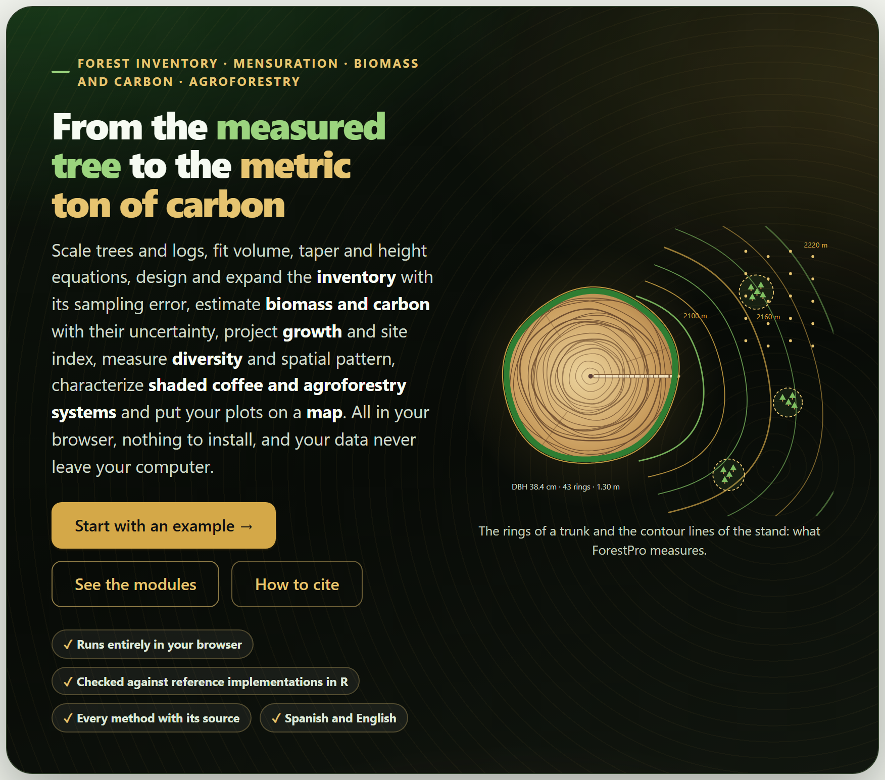
12345
Figure 1.1. The hero of the home page. The numbers refer to the list below.
1Start with an example → Opens Block 3 and loads the coffee farm example into it, trees and plots: the quickest way to see the app with data.
2See the modules. Scrolls down to The nine modules, on the same page.
3How to cite. Scrolls down to the How to cite section, at the end of the page.
4The four badges.Runs entirely in your browser, Checked against reference implementations in R, Every method with its source and Spanish and English.
5The end of the log. A drawing, not a result: it does not respond to the data you load.
The Start with an example → button does the same as the Open in Inventory button on the coffee farm card in Example data (Section 1.4). The other two only scroll the page; if you asked your system settings to reduce motion, the jump is immediate instead of smooth.
iThe home page is never cleared
Loading an example or your own data changes nothing in Block 1; the check mark in the block bar, on the other hand, marks the blocks that already have a result. The ForestPro name in the top bar always brings you back here.
1.2How it works: the six steps
The first section below the hero sums up the order of a forestry job in six boxes, each with its step number, its name and what goes into it. The subtitle explains it: The order is that of a forestry job: measure the trees, sample the stand, expand to the hectare, convert into biomass and carbon, project and report. Figure I.7 of the introduction shows this section.
Table 1.1. The six steps of How it works and the blocks that carry them out
Step
What the app says
Where it is done
Measure
DBH, heights, sections
2 Tree mensuration; 9 log scaling
Sample
design and sample size
3 the inventory, the sample size; 8 the sampling grid
Expand
to the hectare and the stand
3 the expansion, the estimate with its error and the stand structure
Convert
biomass, carbon, CO₂e
4 Biomass and carbon; 7 the carbon of an agroforestry system
Project
growth and site index
5 Growth and yield
Report
report, tables and maps
10 Report and project; 8 the maps
The second half of the subtitle matters just as much: The modules also work on their own: each one takes its own table. Nothing forces you to go through Block 3 to scale logs in Block 9 or to fit a growth curve in Block 5. The order helps you not to forget steps; it does not impose them. Section I.8 of the introduction walks through it in more detail.
1.3The nine modules
The section The nine modules has one card for each block from 2 to 10, with a vignette drawn for that block, its number, its name and the same line that the app shows below the title of the block. Clicking anywhere on the card opens the block. As its subtitle says, A module is a block of the bar and a chapter of the manual. The card of Block 2 corresponds to Chapter 2 of this manual, that of Block 3 to Chapter 3, and so on up to 10.
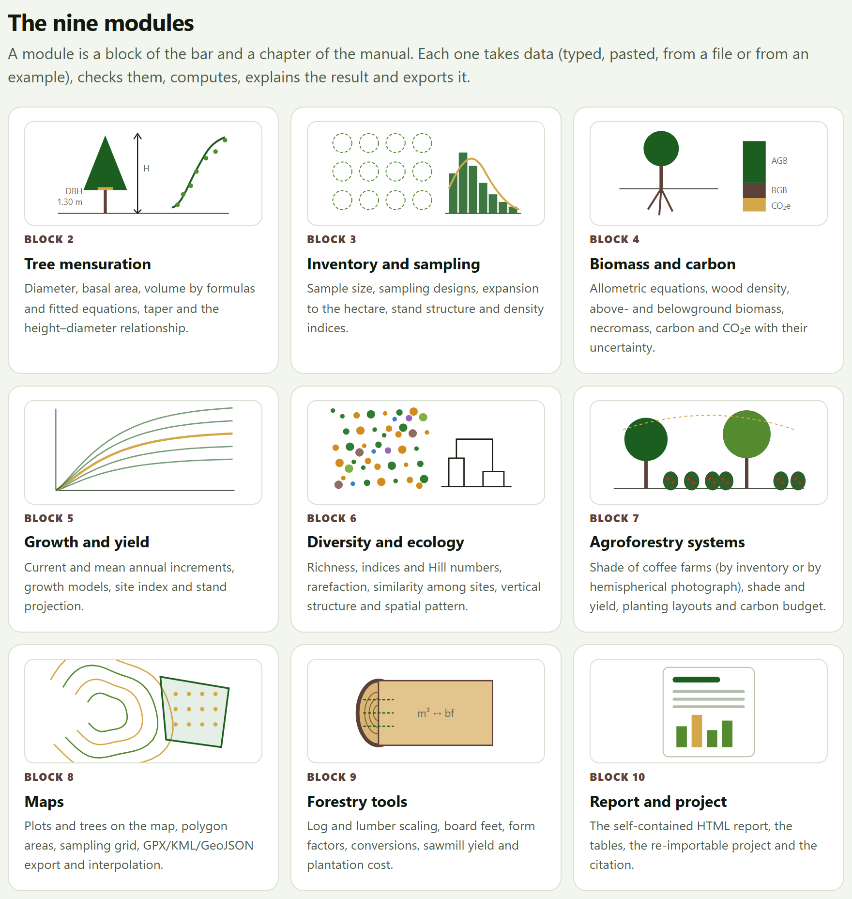
Figure 1.2.The nine modules. Each vignette sums up its block: the tree with its height and its DBH next to a height curve (2), the plots and a diameter distribution (3), the tree with its root and the bars of AGB, BGB and CO₂e (4), a family of growth curves (5), a community of species and a dendrogram (6), a shaded coffee farm (7), the contour lines with a property and its points (8), a log with the m³ ↔ bf conversion (9) and a report (10).
The vignettes are also original drawings made by code, like the end of the log in the hero, and they follow the language of the interface. The short names of the cards are the same as in the block bar (Inventory and sampling, Maps, …); the full title of each block is the one its chapter carries in this manual (Forest inventory and sampling, Maps and light geoprocessing, …).
1.4Example data
The Example data section has four cards, one per dataset, with its name, a line of figures, a description and one Open in … button for each block where it is used (Figure I.6 of the introduction). Its subtitle warns that they are simulated, with realistic orders of magnitude, that they are not measurements of a real site and that the script that generates them is in data/generar_datos.R.
Table 1.2. The buttons of Example data and what they load
Card
Button
What it opens and loads
Shaded coffee farm 25 plots · 1,000 m² · coffee and shade trees
Open in Inventory
Block 3 with the 719 shade trees and the 25 plots (Chapter 3)
Open in Biomass
Block 4 with the coffee farm; it also loads its inventory into Block 3
Open in Agroforestry
Block 7: it loads the coffee farm inventory into Block 3 and fills in the shade, the example photo, the yield and the carbon budget
Block 3 with the 1,830 trees and the 24 nested plots (Chapter 3)
Open in Diversity
Block 6 with the community and the 50 × 50 m mapped plot
Open in Maps
Block 8 with the plots of the cloud forest (also loaded into Block 3) and the 9-vertex property
Pine plantation 30 permanent plots · 6 remeasurements · felled trees
Open in Mensuration
Block 2 with the 536 sections of the 40 felled trees (Chapter 2)
Open in Growth
Block 5 with the stem analysis and the remeasurements
Open in Utilities
Block 9 with the 12 pine logs, the 25-year plantation and the sawmill yield
Densities and equations basic wood density · allometric catalog
Open in Biomass
Block 4, scrolled to the density table; it loads nothing new, because the table and the catalog already come with the block
Each button does two things: it opens the block and loads the example into its data cards, replacing whatever was there. Each data card also has its own list of examples, so you can load, for instance, the cloud forest trees into Block 2›Standing trees even though the home page has no button for that. The datasets, what they contain and what each is for are described in Section I.7.
!The examples replace what you have
Opening an example replaces the data of the cards it fills. If you have already loaded your own inventory, save the project first (Block 10›Project) so you can come back to it.
1.5What it does and what it does not
Four boxes say up front what you can expect from the program. The first is a promise; the other three, limits.
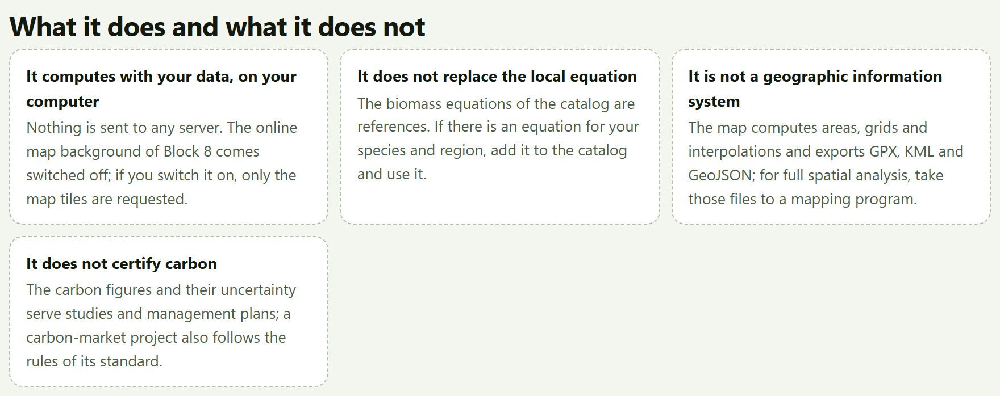
Figure 1.3.What it does and what it does not, on the home page.
It computes with your data, on your computer. Nothing is sent to any server. The only exception is voluntary: the online map background of Block 8, off by default, which when switched on requests only the map tiles.
It does not replace the local equation. The biomass equations of the Block 4 catalog are references; if there is one for your species and region, add it and use it.
It is not a geographic information system. Block 8 computes areas, grids and interpolations and exports GPX, KML and GeoJSON; full spatial analysis is done with a mapping program.
It does not certify carbon. The carbon figures with their uncertainty serve studies and management plans; a carbon-market project also follows the rules of its standard.
Section I.10 of the introduction adds two limits that are not on the home page: the program does not plan the sampling for you and does not work with tree-level models or remote sensing.
1.6How to cite, the tests and the validation
The last section gives the citation of the program in two formats, one below the other: the APA-style reference and the BibTeX entry (with the key BarreraGuzman2026ForestPro, version 1.0.0 and the license GPL-3.0-or-later). The Copy APA and Copy BibTeX buttons copy it to the clipboard, and a brief notice confirms Copied. The text above it recalls what must also be cited: the equations and methods you used, which every result names, in its Method and sources box.
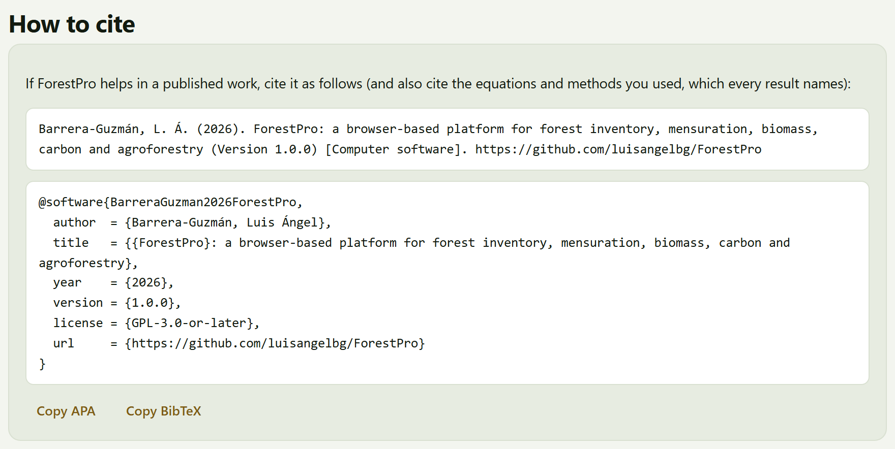
Figure 1.4.How to cite, at the end of the home page: the APA reference, the BibTeX entry and the two buttons to copy them.
The same citation is in Block 10›How to cite, which also downloads the file forestpro.bib, and at the end of every report. The address it carries, https://github.com/luisangelbg/ForestPro, is that of the public repository of the program; this manual reproduces it as the app gives it.
The footer of the home page
Below the citation there are three links, which open in a new tab:
Link
What it opens
User’s manual
This manual, in manual/en/manual-completo.html. In the Spanish interface the link reads Manual de usuario (en español) and opens the Spanish edition
Tests
tests/run.html, which runs the 84 automatic tests of the app in the browser: textbook values, closed forms and edge cases. All of them should come out green
Validation against independent implementations
tests/VALIDACION.md, the summary of the 8,327 comparisons of Blocks 2 to 9 against independent reference implementations, with no disagreements (Section I.9)
A last line says that ForestPro is free software (GPL-3.0) of the suite and that it is built with its own code, with no third-party libraries.
✓Where to start
If it is the first time you open the app
then press Start with an example → and go through Chapter 3 with the coffee farm example.
If you have a plot inventory
then go straight to Block 3, load your trees and plots and continue with Block 4 if you want the carbon.
If you only have felled trees, logs or a plantation to appraise
then Blocks 2 and 9 work on their own, with their own table.
If you are going to publish the results
then copy the citation from here or from Block 10 and also cite the methods of each result.
These are guides to find your way, not a compulsory order.
✕When something goes wrong
An Open in … button takes me to the block, but I see no data. The example is loaded into the data cards of that block, which may be further down; use the In this block list or Ctrl + K. The copy buttons do nothing. Some browsers do not allow the clipboard on pages opened as a local file; select the text of the citation and copy it by hand, or open the app with Open ForestPro.bat (Section I.5). The link to the tests or the validation does not open. Those files are in the tests/ folder of the program; if you copied only index.html and the js and css folders, they are missing.
2
Chapter two · Block 2
Tree mensuration
Every inventory rests on measuring trees one by one. This block turns the diameter and height of a standing tree into its basal area and volume; scales felled trees by sections and, with them, fits the volume equations and the stem profile that later serve for any tree of the same species; and estimates the height of the trees that were not measured for it. Its five tools are used together or on their own.
2.1Standing trees: diameter, basal area and volume
2.2Scaling: logs and trees by sections
2.3Volume equations
2.4Taper
2.5Height–diameter relationship
The block introduces itself like this: Five tools used together or on their own: the first measures standing trees; the second scales felled trees; with those volumes the third fits volume equations and the fourth, taper curves; the fifth estimates the missing heights. Cards 2.2, 2.3 and 2.4 form a chain —the sections of the felled trees feed the equations and the taper—; the other two work on their own.
The example of this chapter is the pine plantation: Block 1›Example data›Open in Mensuration loads the 40 felled trees with their 536 sections into the scaling card. Section 2.1 also uses the shade trees of the coffee farm example and Section 2.5 the pine plot with missing heights, which are loaded from the example list of their own data card (Section I.6).
2.1Standing trees: diameter, basal area and volume
The first card has two parts: a calculator for a single tree and a table of trees that is summarized by species.
At the top, four fields. Form factor (0.5 by default) is the fraction of the cylinder of basal area g and height H filled by the stem; both the calculator and the table use it. Calculator: DBH (cm) and or girth (cm) exclude each other: typing in one empties the other, and if you give the girth the DBH is computed from it. Height (m) is the total height. The tiles respond at once: the DBH with its girth, the basal area, the volume with the chosen factor and the slenderness.
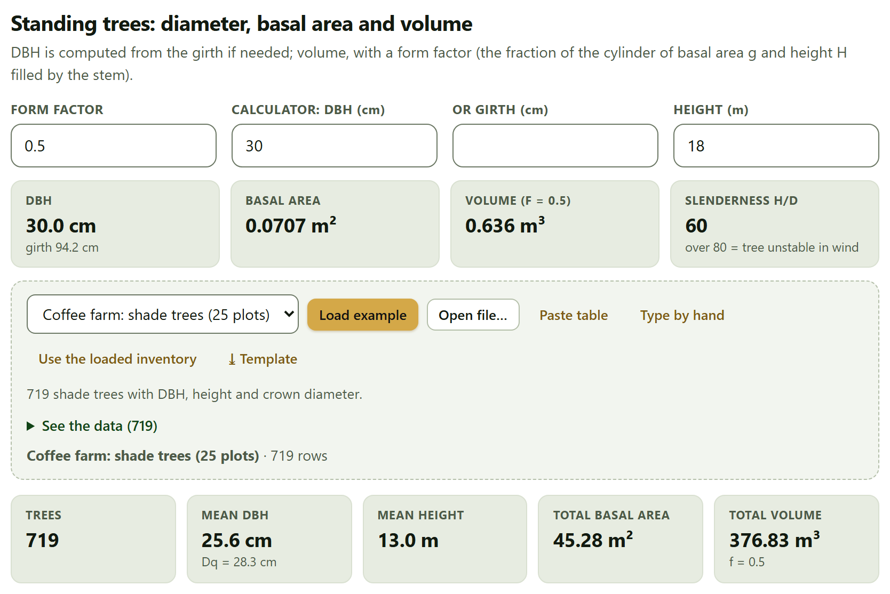
Figure 2.1.Block 2›Standing trees. The calculator with its default values (a DBH of 30 cm and a height of 18 m) gives a basal area of 0.0707 m², a volume of 0.636 m³ with f = 0.5 and a slenderness of 60. Below, the 719 shade trees of the coffee farm example: mean DBH of 25.6 cm, Dq of 28.3 cm, mean height of 13.0 m, 45.28 m² of basal area and 376.83 m³.
θTheory in brief · from diameter to volume
Diameter at breast height is measured at 1.30 m; if the girth C was measured, DBH = C/π. Basal area is the cross-section of the trunk at that height, g = π·DBH²/40,000 (in m², with DBH in cm). The volume of a standing tree is approximated as that of a cylinder with that base and height, reduced by the form factor: V = g·H·f. A paraboloid stem has f = 0.5; according to the app, conifer stems usually fall between 0.42 and 0.50 and broadleaf stems between 0.35 and 0.48. The value for your species comes from scaling felled trees (Section 2.2). Slenderness is 100·H/DBH, the height in meters per meter of diameter.
The table of trees
The data card takes one row per tree with the columns Species, DBH (cm), Girth at 1.3 m (cm), Total height (m), Merchantable height (m), Crown diameter (m) and Status. None is required, but each tree needs its DBH or its girth; if it has both, DBH wins. It comes with two examples, Coffee farm: shade trees (25 plots) and Cloud forest (24 plots), and the Use the loaded inventory button takes the trees of Block 3.
With data loaded, five tiles appear (Trees, Mean DBH with the quadratic mean diameter below it, Mean height, Total basal area and Total volume); if some trees lack a height, the first tile says so, and the volume is added up only over those that have one. Two figures follow, Height and diameter by species (the eight species with the most trees in color, the rest in gray as others) and Basal area by species (the twelve with the largest basal area), and two tables: Summary by species, sorted by basal area, and Tree by tree, with the basal area, volume, merchantable volume (if there is a merchantable height), slenderness and crown area of each tree; 60 rows are shown on screen and the downloads carry them all.
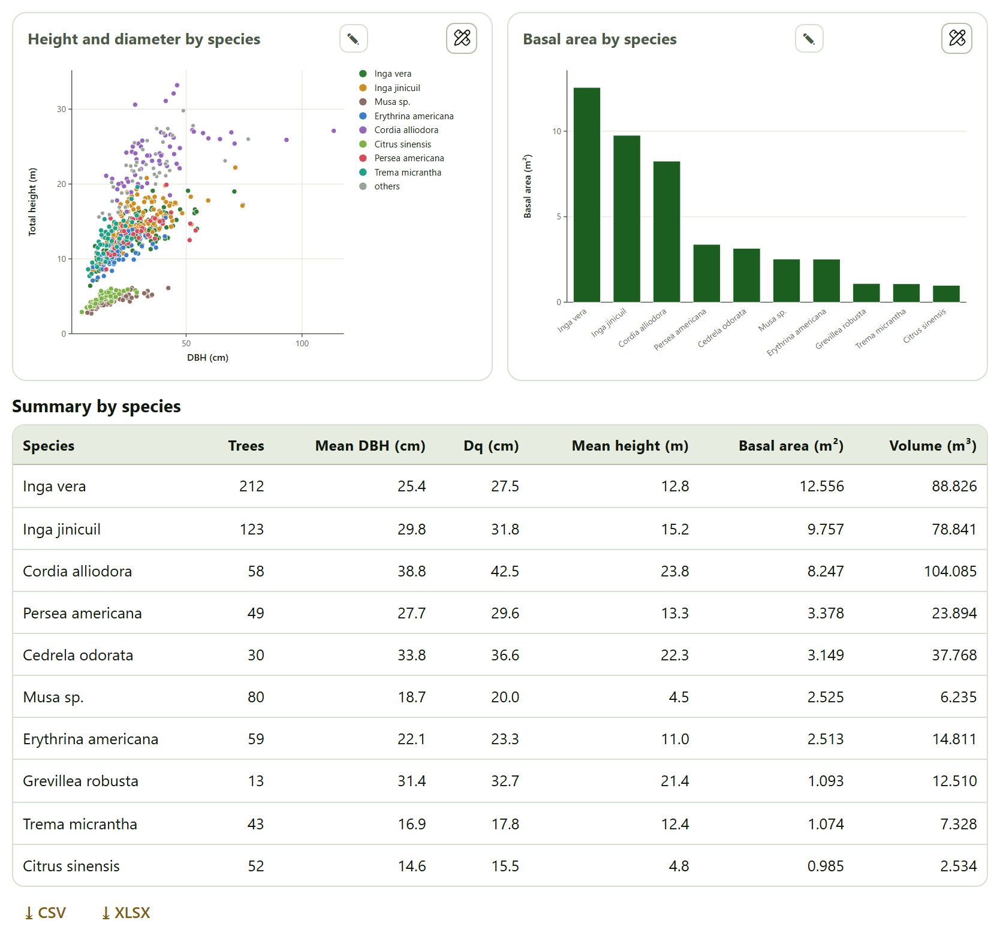
Figure 2.2. The shade trees of the coffee farm example by species. On the left two groups separate: the bananas (Musa sp.) and the citrus trees, short for their diameter, and the shade trees proper. Inga vera has the most trees (212) and the largest basal area (12.556 m²), but Cordia alliodora, with 58 trees with a mean height of 23.8 m, the largest volume (104.085 m³).
▸Worked example · the shade trees of the coffee farm
The interpretation of the app says: “The 10 species add up to 45.28 m² of basal area; Inga vera contributes 28 %.” The quadratic mean diameter (28.3 cm) is larger than the arithmetic mean (25.6 cm) because it weights thick trees more; that is why it is the one that corresponds to the mean basal area. In addition, 64 trees have a slenderness above 80: they are thin for their height and, according to the app, more vulnerable to wind.
Changing the form factor recalculates the calculator and the table at the same time. Bear in mind that a single factor for all species is a rough approximation —bananas, citrus and timber trees live together in the coffee farm—; for the volume of an inventory, Block 3 can use the equation fitted in Section 2.3.
2.2Scaling: logs and trees by sections
Scaling means measuring the true volume of a felled stem, section by section. The card does it at two scales: a single log, with three formulas, and whole trees from a table of sections.
One log: Huber, Smalian and Newton
The fields Large-end diameter (cm), Mid diameter (cm), Small-end diameter (cm) and Length (m) describe the log (34, 30.5 and 27 cm by 2.5 m, by default). The tiles give the volume by each formula and, below Huber and Smalian, their difference from Newton, which the app takes as the reference.
Huber: V = gm·L · Smalian: V = (g1 + g2)/2·L · Newton: V = (g1 + 4gm + g2)/6·L
Newton is exact for a paraboloid, a cone or a neiloid; Smalian, which uses only the ends, overestimates in the neiloid butt of the tree, and Huber, which uses only the middle, underestimates. With the default log, Huber gives 0.1827 m³ (−0.4% against Newton), Smalian 0.1851 m³ (0.9%) and Newton 0.1835 m³. The difference grows the more the log departs from a truncated cone, above all in butt logs.
Whole trees
Below the calculator, Minimum top diameter (cm) (10 by default) sets how far the merchantable volume goes, and the Add the stump (cylinder) checkbox adds the stump to the total, scaled as a cylinder with the diameter of the first section. The data card takes one row per measured section: Tree*, DBH (cm), Total height (m)*, Height of the section (m)* and Diameter of the section (cm)*, with at least 4 complete rows. The example Pine: 40 felled trees by sections has the diameter over bark at 0.3 m, at 1.3 m and every 2.5 m up to near the tip.
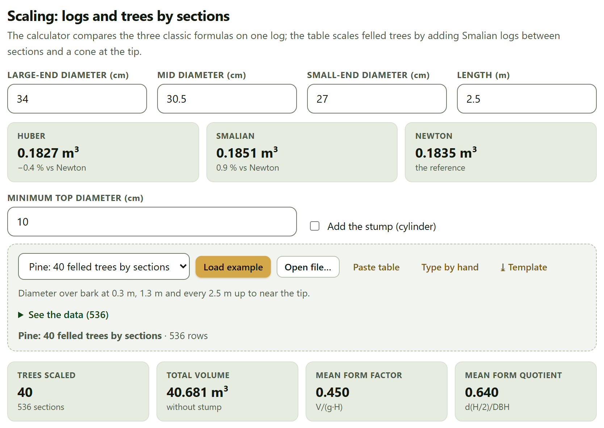
Figure 2.3.Block 2›Scaling. At the top, the default log with the three formulas; below, the 40 felled pines of the example: 536 sections, 40.681 m³ without stump, mean form factor of 0.450 and mean form quotient of 0.640.
Each tree is scaled by adding Smalian logs between consecutive sections and a cone from the last section to the tip (g·L/3). The merchantable volume goes up to the height at which the diameter drops to the minimum top diameter, interpolated linearly between the two sections around it. Each tree also yields its form factor, V/(g·H), and its form quotient, the diameter at half height over DBH.
The results are four tiles (Trees scaled, Total volume, which says whether it includes the stump, Mean form factor and Mean form quotient), two figures and the table Volume of each tree, which gives for each tree the stem volume, the stump volume (even if it is not added), the total, the merchantable volume with its height and the two form indices. Tree D01 of the example, for instance, with 34.6 cm and 24.89 m, has 1.1789 m³ in the stem, 1.1681 m³ merchantable up to 21.53 m and a form factor of 0.512.
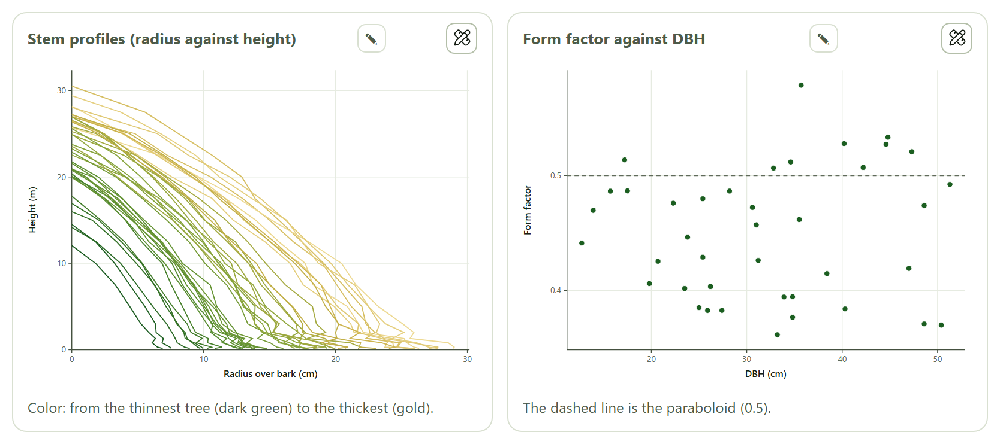
Figure 2.4. Left: the profile of each stem, radius over bark against height, from the thinnest tree (dark green) to the thickest (gold). Right: the form factor of each pine against its DBH, with the paraboloid (0.5) dashed; the values run from about 0.36 to about 0.58 with no clear trend with diameter.
The interpretation sums up: “The mean form factor of these trees is 0.450: smaller than that of the paraboloid.” That is the value to type in Section 2.1 for standing trees of the same species and condition, although, as the app itself says, the equations of the next section do better, because they let the shape change with size.
2.3Volume equations
A volume equation predicts the volume of a standing tree from its DBH and height. It is fitted with scaled trees and then applied to the whole inventory.
The Use the trees scaled above button takes the DBH, height and stem volume of the trees of Section 2.2 (plus the stump if that checkbox is ticked); if there are no scaled trees, a notice asks you to scale them first. You can also load your own trees into the data card, with DBH (cm)*, Total height (m)* and Volume (m³)*, at least 6. Its example, Pine: volumes of the 40 felled trees, holds the same Smalian volumes, already computed.
The app fits four models:
Model
Equation
Schumacher–Hall (nonlinear)
V = b₀·Db₁·Hb₂, by nonlinear least squares (Levenberg–Marquardt)
Schumacher–Hall (logarithmic)
ln V = b₀ + b₁ ln D + b₂ ln H
Spurr's combined variable
V = b₀ + b₁·D²H
Spurr logarithmic
ln V = b₀ + b₁ ln(D²H)
The logarithmic forms are brought back to the volume scale by multiplying by Meyer’s factor, exp(σ²/2), which corrects the bias of undoing the logarithm. The table Comparison of models (volume scale) gives for each model n, R², RMSE in m³ and as a percentage of the mean volume, the bias and Furnival’s index, and highlights the model with the smallest index. Below it, Show the model chooses which one is shown in detail (by default, the highlighted one): its coefficient table with standard error, t and p, Meyer’s factor if it is logarithmic, and two figures, Observed against predicted and Residuals.
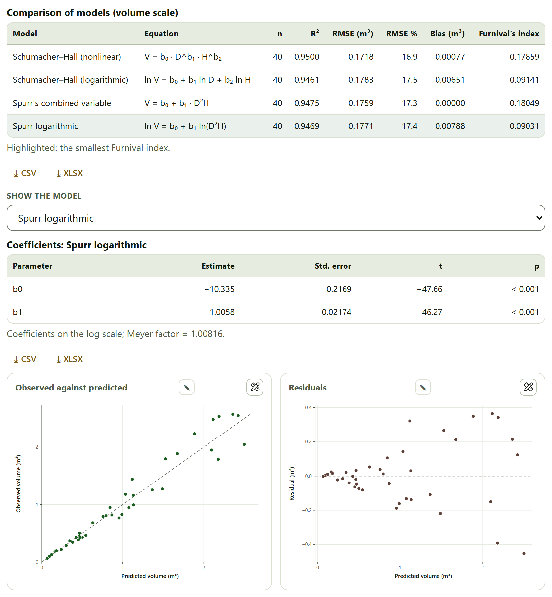
Figure 2.5. The four models fitted to the 40 felled pines. Spurr logarithmic wins, with I = 0.09031, closely followed by Schumacher–Hall logarithmic (0.09141); its coefficients are b₀ = −10.335 and b₁ = 1.0058, with a Meyer factor of 1.00816. The residuals fan out as the volume grows.
θTheory in brief · why Furnival’s index
R² and RMSE cannot compare a model fitted in volume with one fitted in logarithms: they measure errors on different scales. Furnival (1961) brought them all to the same scale: for the models in volume, the index is the residual standard error σ̂; for the logarithmic ones, σ̂ multiplied by the geometric mean of the volumes, exp(mean of ln V). The smallest index is the best. When the spread grows with tree size —the usual case—, the logarithmic models, which spread the error in proportion to volume, tend to have the smallest index even if their R² on the volume scale is a little lower, as here (0.9469 against 0.9500 for the nonlinear one).
The interpretation says it with the numbers of the example: “The model with the smallest Furnival index is Spurr logarithmic (I = 0.09031; R² = 0.9469; RMSE = 17.4 % of the mean volume). The spread of the residuals grows with tree size (heteroscedasticity); the logarithmic forms stabilize it, which is why they usually win.” The second sentence appears only when the spread of the larger half of the trees is more than 1.8 times that of the smaller half.
iThe winning equation goes to Block 3
The model with the smallest Furnival index becomes available in Block 3›Expansion to the hectare as Equation fitted in Block 2. It is the winner that goes, not the one you are viewing in Show the model.
2.4Taper
A taper function describes the diameter of the stem at any height. With it you compute how far the merchantable diameter goes and how many logs of a given length come out of a standing tree, with the volume of each.
The Fit with the sections loaded above button fits two models to the relative profile —the diameter over DBH, d/D, against the height over total height, z = h/H— of all the sections of Section 2.2; if no sections are loaded, it first loads those of the pine example.
Model
Form
Kozak, Munro and Smith (1969)
(d/D)² = b₁(z − 1) + b₂(z² − 1): a single parabola, by least squares through the origin
Max and Burkhart (1976)
three segments —neiloid butt, paraboloid middle and cone top— joined at the points a₂ and a₁: (d/D)² = b₁(z − 1) + b₂(z² − 1) + b₃(a₁ − z)²I₁ + b₄(a₂ − z)²I₂, with Ii = 1 if z ≤ ai; by nonlinear least squares from several starts
The table Comparison (on diameter) gives, for each model, the sections used, R² and RMSE of the diameter, the bias and the AIC; the coefficient table of each follows, and the figure Relative stem profile, with all the sections as gray points and the two curves.
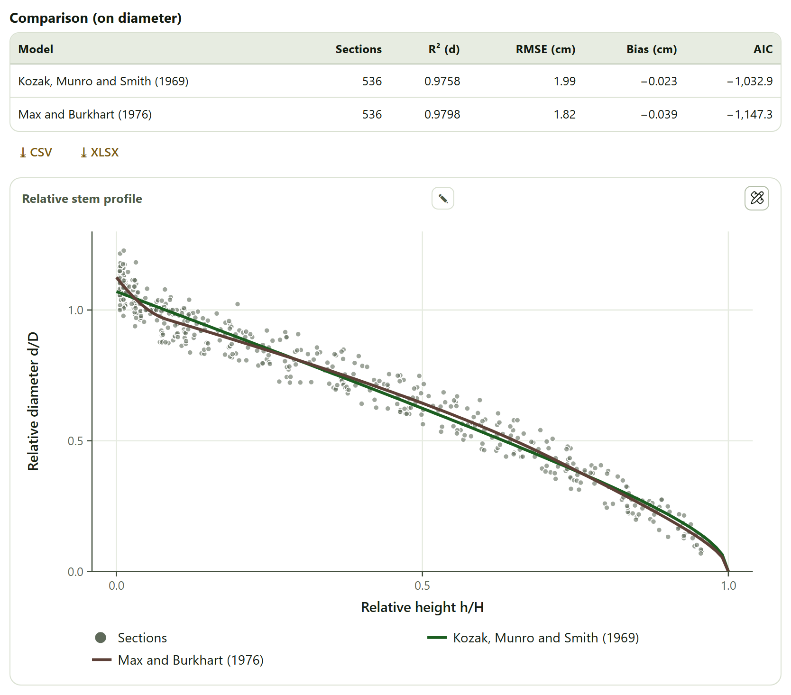
Figure 2.6. The taper of the example pines (without the coefficient tables, which in the app sit between the comparison and the figure). Max and Burkhart wins on every count: an RMSE of 1.82 cm against 1.99 cm and an AIC of −1,147.3 against −1,032.9. At the butt, its curve follows the swelling of the stump that Kozak’s parabola does not reach.
The coefficients of the example are b₁ = −1.8810 and b₂ = 0.73497 for Kozak, and b₁ = −2.8202, b₂ = 1.2679, b₃ = −1.0119, b₄ = 32.658, a₁ = 0.71088 and a₂ = 0.082897 for Max and Burkhart: the paraboloid starts turning into a cone at about 71% of the height and the neiloid of the butt takes up the lowest 8%. In Max and Burkhart, b₁, b₂ and b₃ have large standard errors (p values of 0.015, 0.054 and 0.099): that is normal in a segmented model, whose coefficients offset one another; what matters is the profile they draw together.
The logs of a tree
With the profile fitted, the fields DBH of the tree (cm), Total height (m), Top diameter (cm), Log length (m), Stump height (m) and Model (Max–Burkhart or Kozak 1969) describe a standing tree and how it will be bucked. The app gives the total stem volume, the height at which the diameter drops to the minimum top diameter and the whole logs that fit from the stump up to that height, with their merchantable volume; the table Logs of the tree gives for each log where it starts and ends, its large-end and small-end diameters and its volume, and the figure The stem and its logs draws the stem to scale with a dashed cut per log and, in gold, the height to the minimum diameter.
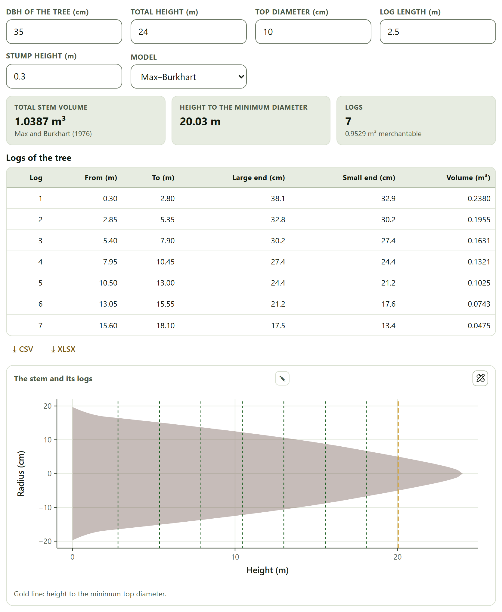
Figure 2.7. A pine of 35 cm and 24 m (the default values) with the Max and Burkhart model: 1.0387 m³ in the stem, the diameter reaches 10 cm at 20.03 m and 7 logs of 2.5 m come out with 0.9529 m³ merchantable. The first, from 0.30 to 2.80 m, goes from 38.1 to 32.9 cm and holds 0.2380 m³.
Look at the From (m) column: each log starts 5 cm after the previous one ended (2.80 → 2.85 m). The app leaves that trim allowance between logs; there is no field to change it. That is why, in the example, an eighth log no longer fits: it would start at 18.15 m and end at 20.65 m, above the 20.03 m of the minimum diameter. The volume between two heights is integrated numerically over the profile (Simpson’s rule, 400 intervals), and the height to the minimum diameter is solved by Brent’s method. Changing any of these fields recalculates when you leave the control.
2.5Height–diameter relationship
Measuring the height of every tree is costly; measuring the diameter, cheap. The usual practice is to measure the height of some of the trees, fit a height–diameter curve and estimate the height of the rest with it.
The data card takes Tree, Species, DBH (cm)* and Total height (m) — empty if missing, with at least 6 trees with a measured height (above 1.3 m). Its examples are Pine: plot with missing heights (85 trees; 28 lack their height) and Cloud forest: Liquidambar (the trees of a single species, for a curve of its own); Use the loaded inventory takes the trees of Block 3. Below the card, Species fits the curve with all the trees (All) or with a single species, and Curve to estimate with chooses which curve estimates the missing heights: Lowest AIC, the default option, or a specific one.
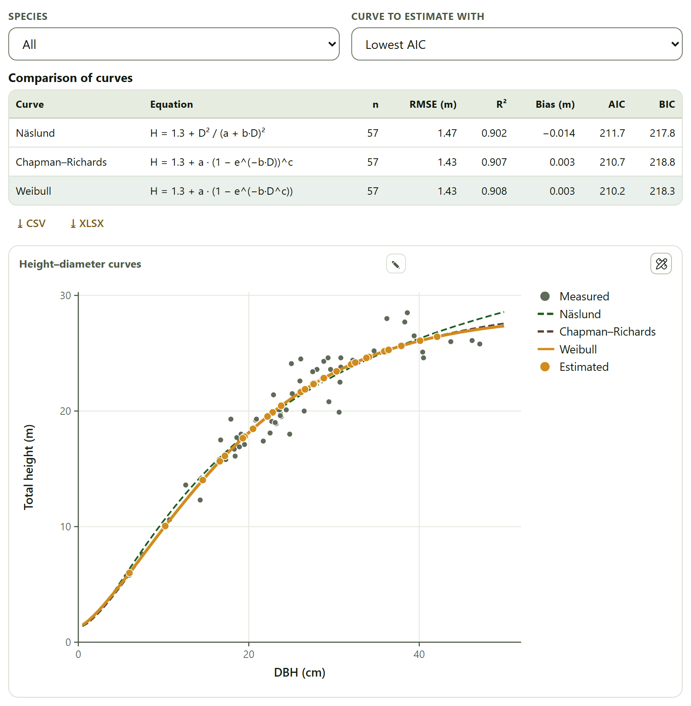
Figure 2.8. The pine plot with missing heights. With 57 measured trees, Weibull has the lowest AIC (210.2), very close to Chapman–Richards (210.7) and Näslund (211.7), and an RMSE of 1.43 m; it was used to estimate the 28 missing heights. Its coefficients, in a table the capture leaves out, are a = 26.971, b = 0.016834 and c = 1.3559; its asymptote, 1.3 + a = 28.3 m, is the largest height it predicts.
The three curves pass through H = 1.3 m as the diameter tends to zero:
Curve
Equation
Näslund
H = 1.3 + D²/(a + bD)²
Chapman–Richards
H = 1.3 + a(1 − e−bD)c
Weibull
H = 1.3 + a(1 − e−bDc)
They are fitted by nonlinear least squares; Näslund starts from its linearized form, D/√(H − 1.3) = a + bD. The table Comparison of curves gives n, RMSE, R², bias, AIC and BIC, and highlights the curve used for estimating; its coefficients follow, and the figure Height–diameter curves, with the measured trees in gray, the three curves (the chosen one with a thick solid line) and the estimated heights as orange points on it.
The table Estimated heights gives the height of each tree that lacked one (tree 3, with 34.1 cm, 24.7 m), and the ⤓ Full table with filled heights (CSV) button downloads the 85 trees with their measured or estimated height and a column altura_estimada that is 1 for the estimated ones. The interpretation ends with a warning worth taking seriously: “Outside the range of measured diameters (6.0–47.1 cm) the curves may part ways: do not extrapolate far from it.” You can see it in the figure: above 45 cm, Näslund already moves away from the other two.
!One curve per species, when possible
In a mixed stand, a single curve for all species averages very different ways of growing. If a species has enough measured trees, choose it in Species for a curve of its own. Block 3 also estimates the missing heights (checkbox Estimate the missing heights (Näslund)), but with a single Näslund curve for the whole inventory.
✓Decision rule
If the slenderness of a tree exceeds 80
then it is thin for its height and, according to the app, unstable in wind.
If you have no scaled trees of your species
then use a form factor from the literature with caution; if you have them, the mean of Section 2.2 or, better, a volume equation.
If you compare volume equations with and without logarithms
then decide by Furnival’s index, not by R²; the smallest is the best.
If two curves differ by less than 2 AIC units
then they are practically equivalent within the data; choose the simpler one or the one that behaves better at the extremes.
If the coefficients of Max and Burkhart have large standard errors
then that is not a bad fit in itself: look at the RMSE, the AIC and the drawn profile.
If you are going to estimate heights or volumes outside the diameter range the curve was fitted with
then do not go far from it: the curves extrapolate differently.
These are guides for interpretation, not laws: what you know about the species and the site comes first.
✕When something goes wrong
“No tree has at least two sections.” Scaling needs two or more sections per tree; check that the Tree column is matched correctly and that each tree does not have a different identifier on every row. “First scale trees in the previous section (or load the pine example).”Use the trees scaled above needs the table of sections loaded in Section 2.2. “At least 6 trees…” The volume equations and the height curves need six complete trees; in the height curve only those above 1.3 m count. “No model converged.” or “No curve converged.” It usually happens with very few trees or with mixed-up units: DBH in meters or height in centimeters. Volumes ten thousand times too small or too large. DBH goes in centimeters and heights and length in meters; basal area comes out in m².
iMethods and sources
Each card cites its sources in its Method and sources box: Husch, Beers and Kershaw (2003) and Avery and Burkhart (2002) for the tree measurements; Smalian (1837) for scaling; Schumacher and Hall (1933), Spurr (1952), Meyer (1941), Furnival (1961) and Marquardt (1963) for the volume equations; Kozak, Munro and Smith (1969) and Max and Burkhart (1976) for taper; Näslund (1937), Richards (1959), Yang, Kozak and Smith (1978) and Mehtätalo, de-Miguel and Gregoire (2015) for the height curves. The full references are in Appendix F.
3
Chapter three · Block 3
Forest inventory and sampling
An inventory measures a few trees in a few plots and says something about the whole property. This block makes that leap: it expands each tree to the hectare according to the plot in which it was measured, estimates the mean of the property with its sampling error according to the design with which the plots were taken, works out how many plots would be needed, processes the angle-count (relascope) sampling and describes the stand structure. The inventory you load here is the one that Blocks 4, 6, 7 and 8 use afterward.
3.1The inventory: trees and plots
3.2Expansion to the hectare
3.3Estimation and sampling error
3.4Sample size
3.5Point sampling (relascope)
3.6Stand structure
The block introduces itself like this: Load the trees and, if you have them, the plots (with their shape, size, stratum and coordinates). The inventory then serves biomass, diversity, agroforestry and the map. Everything else is computed on its own as soon as there are trees: there is no compute button, and every change to a control redoes the calculations that depend on it.
The chapter uses the two example inventories. The shaded coffee farm (Start with an example → on the home page) has 25 equal circular plots grouped in farms, with no area per stratum: it serves for simple random, systematic and cluster sampling. The stratified cloud forest (Example data›Open in Inventory on its card) has nested plots in three strata with their area: it serves for stratified sampling, point sampling and the structure of an uneven-aged forest.
3.1The inventory: trees and plots
The card holds two data cards, one below the other. Its subtitle sums it up: One row per tree with its plot; one row per plot with its design. If you do not load plots, all take the design below.
Trees
One row per tree. Plot* and DBH (cm)* are required; the rest are optional: Stratum, Species, Family, Total height (m), Crown diameter (m), Status (alive / dead) and the coordinates x (m) and y (m) of each tree from the center of its plot. A tree counts as standing dead if its status contains “muert”, “seco” or “tocón”, with or without the accent, or “dead”, “stump” or “snag”; any other value, or none, leaves it alive. The examples are Shaded coffee farm: trees and Cloud forest: trees; loading either one also loads its plots.
Plots (optional)
One row per plot, with Plot* (the same identifier as in the trees) and, as the case may be, Stratum, Area of the stratum (ha), Cluster, the dimensions of the plot and its coordinates Latitude and Longitude. The design of each plot is read from its columns in this order:
Table 3.1. How the app reads the design of each plot
If the plot has…
the app takes it as
Radius (m), Radius of the subplot (m) and DBH cut between plots (cm)
nested circular: trees with a DBH at or above the cut were measured in the large circle; smaller ones, in the small one
only Radius (m)
circular
Side of the square (m)
square
Length (m) and Width (m)
rectangular
only Plot area (m²)
a plot of that area, with no shape
none of the above, or it is not in the table
the default design
The collapsible box Default design and area of the property holds the design that plots without one of their own take —Shape (Circular, Square, Rectangular or Nested circular) with its dimensions: Radius (m) 17.84, Side (m) 31.62, Length (m) 50, Width (m) 20, Subplot radius (m) 5.64 and Cut DBH (cm) 10, which correspond to 1,000 m² and, for the subplot, 100 m²— and the Total area (ha) of the property (100 by default), which gives the total of the property in the estimation.
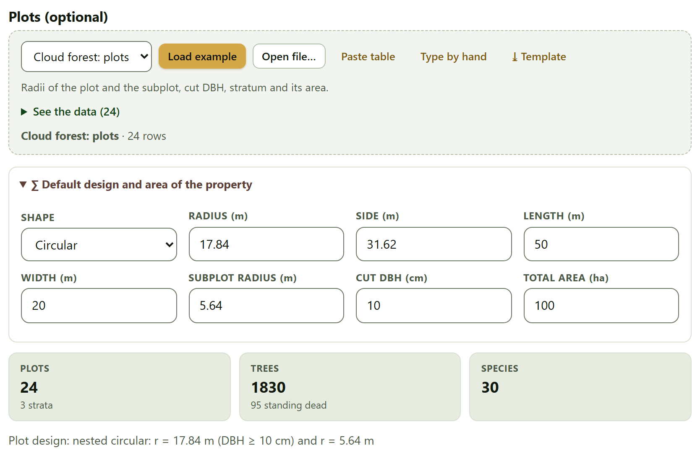
Figure 3.1. The cloud forest example loaded, with the default design expanded. The plots carry their own design, so the default one is not used: the line at the bottom says they are nested circular plots with a radius of 17.84 m for trees of 10 cm or more and of 5.64 m for smaller ones. There are 24 plots in 3 strata, 1830 trees (95 standing dead) and 30 species.
The tiles count the plots (with the number of strata), the trees (with the standing dead), the species and, if there are any, the clusters and the estimated heights. The coffee farm example gives 25 plots in 4 strata —the four management types—, 719 trees with 25 standing dead, 10 species and 5 clusters, and the design line reads circular of 999.9 m² (r = 17.84 m). That line is the first check you should make: if the area is not the one you measured in the field, everything that follows comes out wrong.
!A plot without trees also counts
Plots in the plot table that have no trees enter the inventory with zero trees per hectare. That is correct —an empty plot is a measurement—, but only if it is in the plot table: if you do not load that table, a plot without trees simply does not exist for the app.
3.2Expansion to the hectare
Each measured tree stands for several trees per hectare: Each tree stands for 10,000/a trees per hectare, with a the area of the plot (or of the subplot its diameter belongs to).
EF = 10,000 / a · N = Σ EF · G = Σ EF·g · V = Σ EF·v · Dq = √(Σ EF·d²/N)
In a 1,000 m² plot each tree stands for 10 trees per hectare; in the 100 m² subplot of the cloud forest, for 100. Three controls decide how the volume of each tree is computed: Volume of each tree chooses between g · H · form factor, with the Form factor next to it (0.5), and Equation fitted in Block 2, which uses the winning model of Section 2.3 if there is one (if not, it keeps the factor). The Estimate the missing heights (Näslund) checkbox, ticked by default, fits a Näslund curve with the trees of the same inventory that do have a height (at least 6 are needed) and estimates the others with it; the Heights estimated tile of Section 3.1 says how many. Without height there is no volume: if a tree lacks one, the volume of its plot cannot be computed and the volume estimate warns about it.
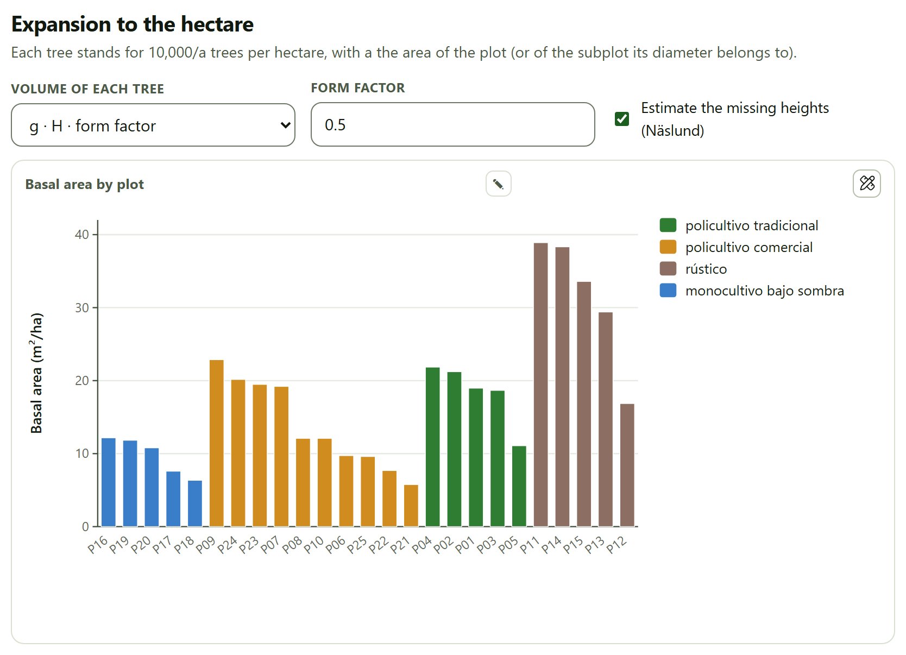
Figure 3.2. The basal area per hectare of each plot of the coffee farm example, grouped by management type and sorted from largest to smallest within each. The rustic plots have the largest basal areas (16.86 to 38.90 m²/ha) and those of the shaded monoculture the smallest (6.35 to 12.17 m²/ha).
Below the figure, the table Values per hectare of each plot gives, for each plot, its stratum, the trees measured, N, G and V per hectare, the quadratic mean diameter, the dominant height and the standing dead per hectare. Plot P01 of the coffee farm, for instance, with 38 trees, has 380 trees/ha, 18.97 m²/ha, 141.2 m³/ha, a Dq of 25.2 cm and a dominant height of 16.5 m. The standing dead are counted apart and do not enter N, G or V: P01 has 0, P04 has 40 dead trees per hectare.
θTheory in brief · dominant height
The app uses Assmann’s definition: the mean height of the 100 thickest trees per hectare, counting each tree as many times as its expansion factor. In a 1,000 m² plot, they are the 10 thickest trees. It is the height used by the site index (Block 5) and by the Hart–Becking index (Section 3.6), because it depends little on thinnings.
3.3Estimation and sampling error
This is the section that answers the main question of an inventory: how much there is per hectare on the property and how precisely it is known.
Four controls: Variable (Density (trees/ha), Basal area (m²/ha) or Volume (m³/ha)), Design, Confidence (90, 95 or 99 %) and the Finite-population correction checkbox. Each time you load a table of trees or of plots, the app chooses the design: Stratified if there are two or more strata and every plot carries the area of its stratum, and Simple random sampling in any other case; so the cloud forest example opens as stratified and the coffee farm as simple random. As long as you do not load another table, the design is the one you choose.
Table 3.2. The four designs
Design
What it does and what it needs
Simple random sampling
The mean of the plots and its variance s²/n; with the correction, multiplied by (1 − n/N). It needs only the plots
Stratified
The mean of each stratum weighted by its share of area, Wh, with the variance Σ Wh² sh²/nh of the allocation actually used and Satterthwaite’s effective degrees of freedom. It needs at least 2 strata with an area and 2 plots in each
Systematic (successive differences)
The simple mean with the variance of the differences between neighboring plots of the grid, Σ(yi+1 − yi)²/(2n(n − 1)). The grid order is that of the plot identifiers, in natural order (P2 before P10)
Cluster
The ratio estimator Σyi/Σmi with clusters of unequal size, whose degrees of freedom are the clusters minus one. It needs the Cluster column in the plots
The tiles give the Mean with the half-width of the interval, the Standard error with its degrees of freedom, the Sampling error as a percentage —t·SE/mean·100, in green if it is 10% or less, in amber up to 20% and in red above 20%—, the Confidence interval and the Total of the property with its interval. The table The same variable under each design follows, with one row for each design the data allow and that of the chosen one highlighted; its Note column gives the standard error under Neyman allocation (stratified), the one the grid would have if treated as random (systematic) or the design effect (cluster). With the stratified design, the table By stratum also appears, and a figure with the mean and the interval of each stratum and that of the stratified estimate.
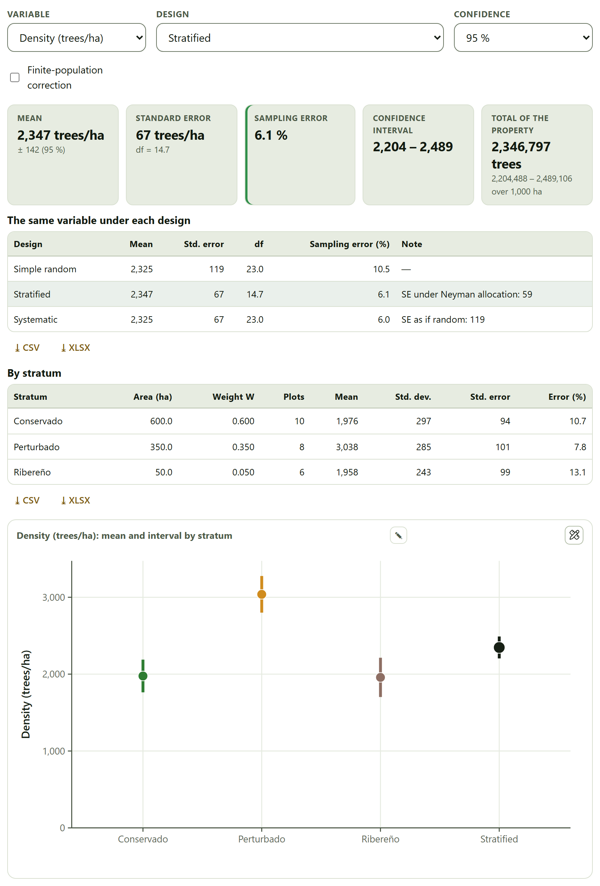
Figure 3.3. The density of the cloud forest example with the stratified design, which the app chose on its own: 2,347 trees/ha ± 142, with a sampling error of 6.1% and 14.7 effective degrees of freedom. As simple random, the error would be 10.5%. The figure gives, from left to right, the mean and the interval of Conserved, Disturbed, Riparian and the stratified estimate.
▸Worked example · stratifying the cloud forest
The three strata have very different densities: 1,976 trees/ha in the conserved stratum (600 ha, 10 plots), 3,038 in the disturbed one (350 ha, 8 plots) and 1,958 in the riparian one (50 ha, 6 plots). Treated as a single sample, those differences inflate the variance; separated by stratum, they do not. That is why the interpretation says that “Stratifying gives 3.16 times the precision of treating the plots as one random sample.” The stratified mean (2,347) is not the simple one (2,325) either: it weights each stratum by its area, not by its number of plots, and the riparian stratum has six plots in only 5% of the property.
The total of the property under the stratified design is computed with the sum of the stratum areas (1,000 ha in the cloud forest: 2,346,797 trees), not with the Total area (ha) of the default design, which the other three designs use. If the two figures do not agree, check which one is right.
The coffee farm: simple random, systematic and cluster
With the coffee farm example, the density is 278 trees/ha, with a standard error of 25 and 24 degrees of freedom: a sampling error of 18.3% at 95% and an interval from 227 to 328 (Figure I.5 of the introduction shows this card). Over the default 100 ha, the total is 27,764 trees. The table by design gives two more readings of the same inventory:
Table 3.3. The density of the coffee farm example under each design (95% confidence)
Design
Mean
Std. error
df
Sampling error (%)
Note
Simple random
278
25
24.0
18.3
—
Systematic
278
14
24.0
10.2
SE as if random: 25
Cluster
278
53
4.0
52.7
design effect: 4.61
The three means are equal; what changes is how much is known. As a systematic grid, neighboring plots resemble each other and the successive-differences variance brings the error down to 10.2%. As clusters —the five farms—, the error rises to 52.7%: the plots of one farm are so alike that, according to the design effect of 4.61, they are worth less than a quarter as many independent plots, and only 4 degrees of freedom remain. Basal area behaves the same way: 17.45 m²/ha with 22.4% as simple random, 18.0% as systematic and 60.0% as cluster; volume, 145.5 m³/ha with 27.3, 23.7 and 71.7%.
!The design is not chosen by the error it gives
The table by design helps you understand the inventory, not pick the design with the lowest error. The right design is the one used in the field: if the plots were taken by farms, the error is the cluster one, even if it is the worst. The systematic variance, moreover, is valid only if the order of the identifiers follows the grid.
The finite-population correction uses as the number of possible plots the total area over the mean plot area (in the coffee farm, 100 ha / 0.1 ha = 1,000 plots). With 25 of 1,000 plots measured, hardly anything changes: the standard error drops from 25 to 24 and the sampling error from 18.3 to 18.0%. It matters when a large fraction of the property is measured. When the error exceeds 10%, the interpretation says how many plots would be needed to bring it down to that value with the coefficient of variation of the inventory: in the coffee farm, about 78 (CV of 44%).
3.4Sample size
Before going to the field, or to plan the second phase of an inventory, the question is the reverse: How many plots are needed for a given sampling error?
The fields are Coefficient of variation (%) (40 by default), Permissible error (%) (10), Possible plots N (empty = infinite), Confidence and Allocation by stratum (Optimum (Neyman) or Proportional). The Take the CV of the loaded inventory button writes the coefficient of variation of the variable chosen in Section 3.3, computed as simple random sampling. The results are recalculated as you type and when an inventory is loaded; with the default values (CV of 40% and error of 10%) they call for 64 plots (t = 1.998 with 63 df).
n = t²·CV²/E² · with N possible plots: n = t²·CV²/(E² + t²·CV²/N)
Since t depends on the degrees of freedom, which depend on n, the app starts with the t of 30 degrees of freedom and repeats with n − 1 until n stops changing. The tiles give the Plots needed with the final t, those needed Without finite correction (if you gave N) and the Iterations.
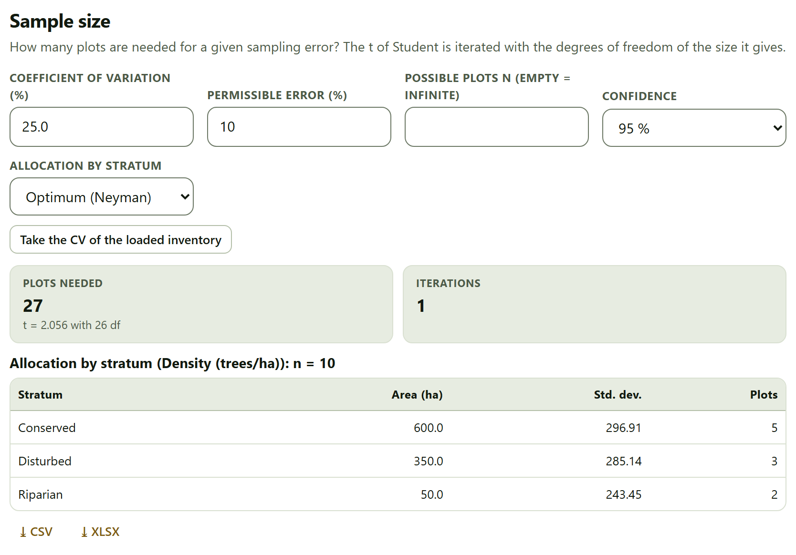
Figure 3.4. The sample size with the CV of the density of the cloud forest example (25.0%): 27 plots for an error of 10% at 95% (t = 2.056 with 26 df). With the three strata and Neyman allocation, the table gives n = 10 and allocates 5, 3 and 2 plots.
If the loaded inventory has strata with an area, the table Allocation by stratum computes the size of a stratified sample with the standard deviation and the mean of each stratum and allocates it: in proportion to Whsh with Neyman’s optimum allocation, or to Wh with the proportional one. The plots are allocated in whole numbers that add up to the n of the title: no stratum gets fewer than 2, and the rest are assigned by the largest remainders; if the minimum of 2 pushes the sum above the computed n, the title gives that sum. In the cloud forest, the riparian stratum, with 5% of the area, would get less than one plot and gets 2: hence n = 10 (5 + 3 + 2). The table uses the variable chosen in Section 3.3 and is redone when the inventory is loaded or a field of this card is touched. The comparison shows what stratifying is worth: 10 plots instead of 27 for the same error.
▸Worked example · the coffee farm
With the coffee farm loaded and density as the variable, Take the CV of the loaded inventory writes 44.2% and the app asks for 78 plots for an error of 10% (t = 1.991 with 77 df, in 2 iterations): three times the 25 that were measured. It is the same number the interpretation of Section 3.3 gives.
3.5Point sampling (relascope)
In point sampling there is no plot: from each point the trees are sighted with a relascope or a prism, and those that are “in”, that is, those that look wider than the angle of the instrument, are counted. Each counted tree stands for BAF/g trees per hectare.
The fields are Basal-area factor (m²/ha) (2 by default) and Form factor (0.5), for volume. The data card takes one row per counted tree: Point*, Species, DBH (cm)* and Height (m). Its example is Cloud forest: 15 points, BAF = 2, with 235 trees; it is not loaded with the cloud forest inventory, but from this same card.
per point: G = BAF × trees counted · N = Σ BAF/gi · V = Σ BAF·vi/gi
A tree of diameter d (cm) is in if it is closer than R = d/(2√BAF) meters to the point: with BAF = 2, a 30 cm tree is in up to 10.6 m away. Thick trees are seen from farther than thin ones, and so the sample is weighted by basal area without measuring any plot. Across points, the estimate is that of simple random sampling, at 95%.
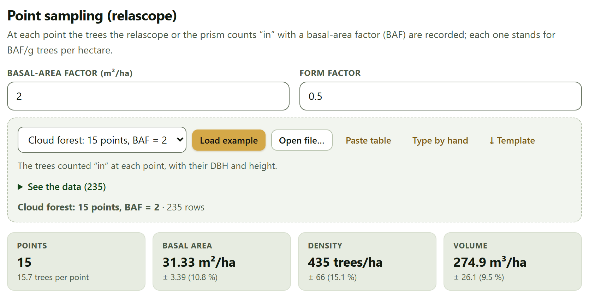
Figure 3.5. The 15 relascope points of the cloud forest example with BAF = 2: 15.7 trees counted per point, 31.33 ± 3.39 m²/ha of basal area (10.8%), 435 ± 66 trees/ha (15.1%) and 274.9 ± 26.1 m³/ha (9.5%).
The table By point gives the trees counted and G, N and V per hectare at each point: at R01, 21 trees were counted, which with BAF = 2 are 42.0 m²/ha. The interpretation compares the average with the recommended range of 7 to 15 trees per point. In the example, with 15.7, it says they are “many; a larger BAF would save time without losing much precision”.
iPoint sampling does not measure the same as the plots
The density from point sampling (435 trees/ha) cannot be compared with that of the cloud forest plots (over 2,300): the nested plots include trees from 2.5 cm DBH, and in point sampling thin trees are almost never “in”. Basal area, on the other hand, is comparable, because thick trees dominate it. The result of point sampling does not enter the inventory that the other blocks use.
3.6Stand structure
The last card describes how the stand is built: how the diameters are distributed, which species dominate, how dense it is and how much competition each tree faces. It uses only live trees, and at least 10 are needed.
The controls are Class width (cm) (5), Weibull (2 parameters or 3 parameters), Smallest DBH measured (cm), Stratum (All or one) and Hegyi radius (m) (6). Smallest DBH measured (cm) is the diameter from which the trees were measured; when an inventory is loaded, the app proposes the smallest DBH, rounded down to the half centimeter (2.5 cm in the cloud forest, 5 cm in the coffee farm), and empty means no threshold.
Diameter distribution and Weibull model
The figure gives the trees per hectare in each diameter class, already expanded, with the fitted Weibull curve on top. The Weibull is fitted by maximum likelihood with each tree weighted by its expansion factor, so that the trees of the small subplot count for what they represent; with 3 parameters, the location a is searched by profile likelihood below the smallest diameter. If there is a smallest DBH measured t, the distribution is left-truncated —the density is divided by the probability of exceeding t—, because thinner trees exist but were not measured; the curve is then labeled Weibull 2p truncated and the classes start at t, so the first bar is a whole class like the rest.
The table Parameters and goodness of fit gives the location, the scale b, the shape c, the Smallest DBH measured, truncation (cm), the model mean DBH, Trees / effective size (Kish) and two goodness-of-fit tests with the same weights as the fit: Kolmogorov–Smirnov D (weighted), with an asymptotic p value (conservative, because the parameters come from the same sample), and χ² by classes with expected counts of 5 or more. Both use Kish’s effective size, (Σw)²/Σw², instead of the number of trees: with nested plots, the subplot trees weigh ten times more and the sample is worth as much as a much smaller one.
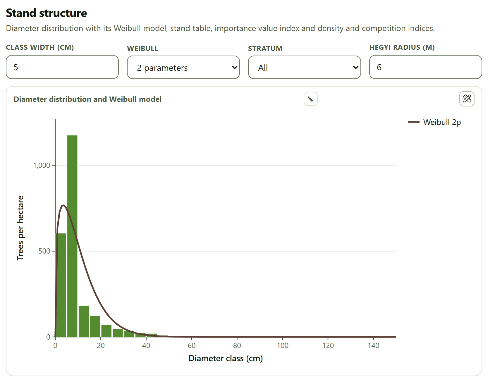
Figure 3.6. The diameter distribution of the cloud forest example, all strata: the 2-parameter Weibull truncated at 2.5 cm has b = 5.620 cm and c = 0.793, with a mean DBH of 10.15 cm. The 1735 live trees are worth, with their weights, 706.9 (Kish effective size); both tests reject the fit (D = 0.119; χ² = 49.91 with 6 df).
The interpretation reads the shape c: below 1.2, “a reverse J” (many thin trees and few thick ones, typical of an uneven-aged or regenerating forest); from 1.2 to 3, a right-skewed distribution; 3 or more, an almost symmetric bell, typical of an even-aged stand. The cloud forest, with c = 0.79, is a reverse J; the coffee farm, truncated at 5 cm, with c = 2.09 (b = 28.203 cm, mean DBH of 25.57 cm), is a right-skewed distribution. If the Kolmogorov–Smirnov test rejects the fit, the interpretation says so and suggests a mix of cohorts or strata. In the coffee farm it rejects it with D = 0.065 and p = 0.006 (χ² = 51.91 with 12 classes and 9 df, with 694 trees whose effective size is also 694, because all plots weigh the same); in the cloud forest, with D = 0.119 and p < 0.001.
!Enter the smallest DBH that was measured
Without truncation, the Weibull assumes there are trees from 0 cm and looks for them where none were measured. In the cloud forest example, clearing the smallest DBH changes the shape from 0.79 to 1.285 —from a reverse J to a skewed distribution—, raises D from 0.119 to 0.190 and the χ² from 49.91 to 237.22. If your inventory measured from a given diameter, type it here, even though the app already proposes the smallest DBH of the data. The 3-parameter Weibull is another way of moving the origin, but the app warns when its location ends within 1% of the smallest diameter (there it cannot be told from a truncated 2-parameter one) and when it ends at 0, which reduces it to the 2-parameter model, as happens in the truncated cloud forest.
Stand table and importance value index
The Stand table: trees per hectare by species and class crosses the ten most important species (plus an Others row and the Total) with the diameter classes. The classes on the right close with an open class (“≥ 65” in the coffee farm, “≥ 62.5” in the cloud forest, whose classes start at 2.5 cm) once 99% of the trees have been counted, so that the table does not have dozens of nearly empty columns; a dot (·) marks a cell without trees.
The table Importance value index gives for each species its density (N per hectare and relative), its dominance (basal area per hectare and relative) and its frequency (the share of plots in which it appears, absolute and relative), and the IVI, the sum of the three relative values: from 0 to 300, or as a percentage (IVI/3). The figure Components of the IVI (top 10 species) stacks the three parts.
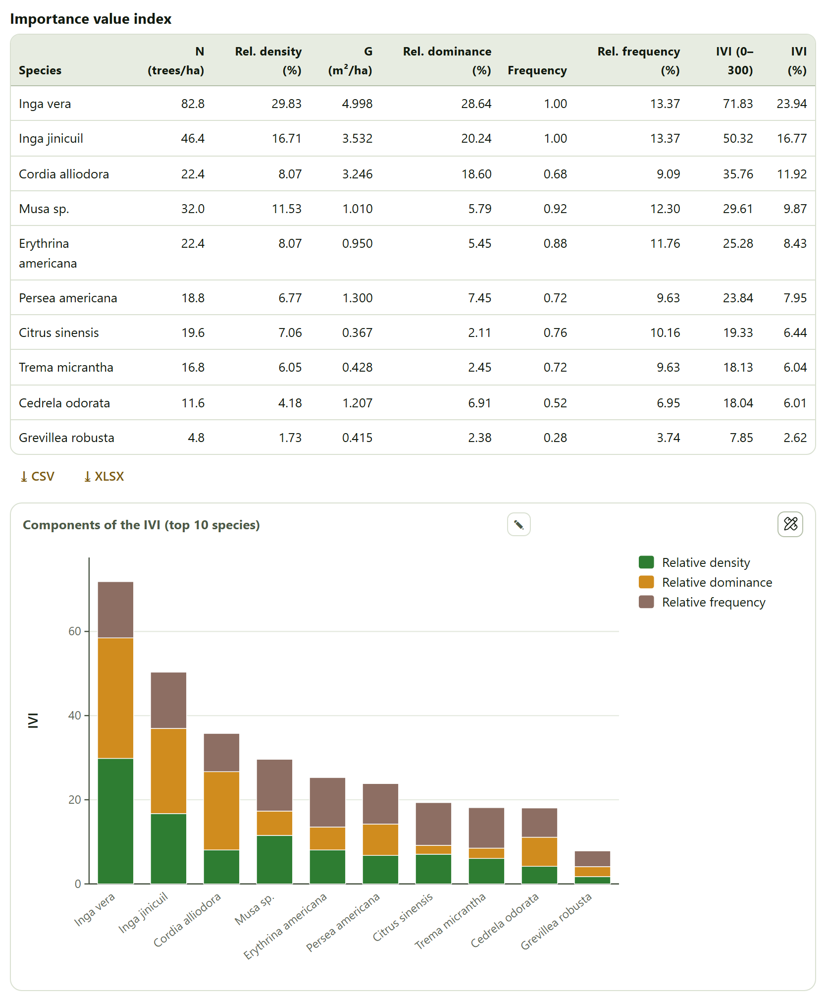
Figure 3.7. The importance value index of the coffee farm example. Inga vera leads with 71.83 of 300 (23.94%), followed by Inga jinicuil (50.32) and Cordia alliodora (35.76). Musa sp. has more trees than Cordia, but much less basal area.
In the cloud forest, the most important species is Liquidambar styraciflua, with an IVI of 31.40, and the nine that follow fall between 11 and 20: a forest without a clearly dominant species, as expected in a cloud forest.
Density and competition
The table Density indices by plot (on screen, the first 30 plots) gives for each plot its N, its Dq, Reineke’s stand density index —SDI = N·(Dq/25)1.605, the equivalent number of 25 cm trees per hectare—, the dominant height and the Hart–Becking index —the mean spacing between trees, √(10,000/N), as a percentage of the dominant height—. The interpretation gives the averages and reads the Hart–Becking one: below 17%, dense stand, a thinning candidate; above 25%, open stand.
Table 3.4. Density of the two examples according to the interpretation of the app
Example
Mean Reineke SDI
Mean Hart–Becking (%)
Reading
Shaded coffee farm
337
41.8
open stand
Cloud forest
925
12.1
dense stand, a thinning candidate
Reineke’s index was devised for even-aged stands and the Hart–Becking index for plantations; in a coffee farm or a cloud forest they serve to compare plots with each other, not as a thinning rule.
If the trees carry coordinates x (m) and y (m) —measured from the center of the plot— and a plot has at least 5 trees with them, the app computes the Hegyi competition index of each tree: the sum, over the neighbors within the chosen radius, of the diameter of the neighbor over that of the tree, divided by the distance. Trees closer than that radius to the edge of the plot are left out of the figure, because they lack neighbors. In nested plots only the trees of the large plot enter.
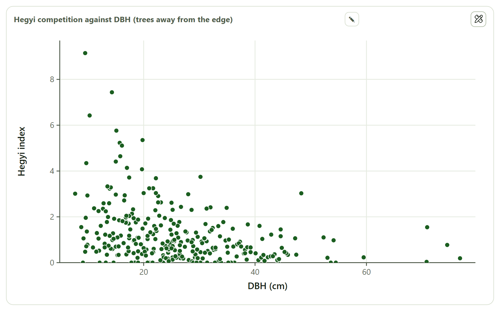
Figure 3.8. Hegyi competition against DBH in the coffee farm example, with a radius of 6 m. The thin trees are the ones that bear the most competition (indices of up to 9); the thick ones, almost none.
✓Decision rule
If the Plot design line does not state the area you measured
then stop: correct the plot table or the default design before looking at any result.
If the sampling error is 10% or less
then it meets what many management plans require (green tile).
If it is between 10 and 20%
then the estimate is useful but imprecise (amber); Section 3.4 says how many more plots would be needed.
If it exceeds 20%
then the mean is worth little on its own (red); add plots or stratify.
If the plots were taken in groups (farms, clusters)
then the error that applies is the cluster one, even if it is the largest; a design effect above 1 indicates that the plots of a group resemble each other.
If fewer than 7 or more than 15 trees per point are counted in point sampling
then lower or raise the basal-area factor next time.
If the Weibull shape is below 1.2 · from 1.2 to 3 · 3 or more
then the distribution is a reverse J · right-skewed · a bell, according to the app.
If the Hart–Becking index is below 17% · above 25%
then the stand is dense, a thinning candidate · open, according to the app.
These are guides for interpretation, not laws: the field design, the management plan and the type of forest come first.
✕When something goes wrong
The values per hectare come out ten times too large or too small. The plot area is wrong: a radius in centimeters, an area in hectares in the m² column, or plots that took the default design because their identifier does not match that of the trees (“P1” against “P01”). “Some trees have no height: turn on the height estimation or choose another variable.” Volume needs the height of every tree: tick Estimate the missing heights (Näslund) or choose another variable. “The stratified design needs at least 2 strata with an area and 2 plots each.” The Area of the stratum (ha) column is missing from the plots, or some stratum has a single plot. “The cluster design needs the cluster column in the plots.” Load the plot table with that column. I changed the design or the smallest DBH and they went back to their value. Each time you load a table of trees or of plots, the app chooses them again; change them after loading. “At least 10 live trees are needed.” The stand structure is not computed with fewer; check the chosen stratum and the status column.
iMethods and sources
The sources of each card are in its Method and sources box: Husch, Beers and Kershaw (2003) and Assmann (1970) for the expansion; Cochran (1977), Shiver and Borders (1996) and Satterthwaite (1946) for the estimation and the sample size; Bitterlich (1948) and Grosenbaugh (1952) for point sampling; Bailey and Dell (1973), Curtis and McIntosh (1951), Reineke (1933), Wilson (1946) and Hegyi (1974) for the stand structure. The full references are in Appendix F.
4
Chapter four · Block 4
Biomass and carbon
The step from the inventory to tonnes: the biomass of each tree from the allometric equation that applies to it and the density of its wood, expanded to the hectare with the factors of Block 3 and converted to carbon and CO₂ equivalent. Every figure comes with its uncertainty —that of sampling and, with the Monte Carlo, that of the measurements and the equation—, and the block adds the other pools (necromass, litter, soil) and measures the change between two inventories.
4.1Data and equations
4.2Wood density
4.3Biomass and carbon of the inventory
4.4Uncertainty by Monte Carlo
4.5Necromass, litter and soil
4.6Pools and change between inventories
Block 4 carries the subtitle “Allometric equations, wood density, above- and belowground biomass, necromass, carbon and CO₂e with their uncertainty.” It works on the inventory of Block 3: the trees with their plot, their diameter, their height and their expansion factor. There is no need to load it again; if you already opened an inventory there, just enter the block and click Use the Block 3 inventory. The block’s own four data cards —downed wood, litter, soil and change in stocks— are independent of the inventory, and each is loaded on its own.
The examples of this chapter are the example shaded coffee farm (25 plots of 1,000 m², 719 shade trees), opened with the Open in Biomass button of its card in Block 1›Example data; the example cloud forest for downed wood, and the example pine plantation for the change between two measurements (Section I.7). All are simulated.
4.1Data and equations
The first card decides where the trees come from and which equation computes each one. Everything else in the block depends on these choices: when you change any of them, the app recomputes the biomass, the tables and the pools.
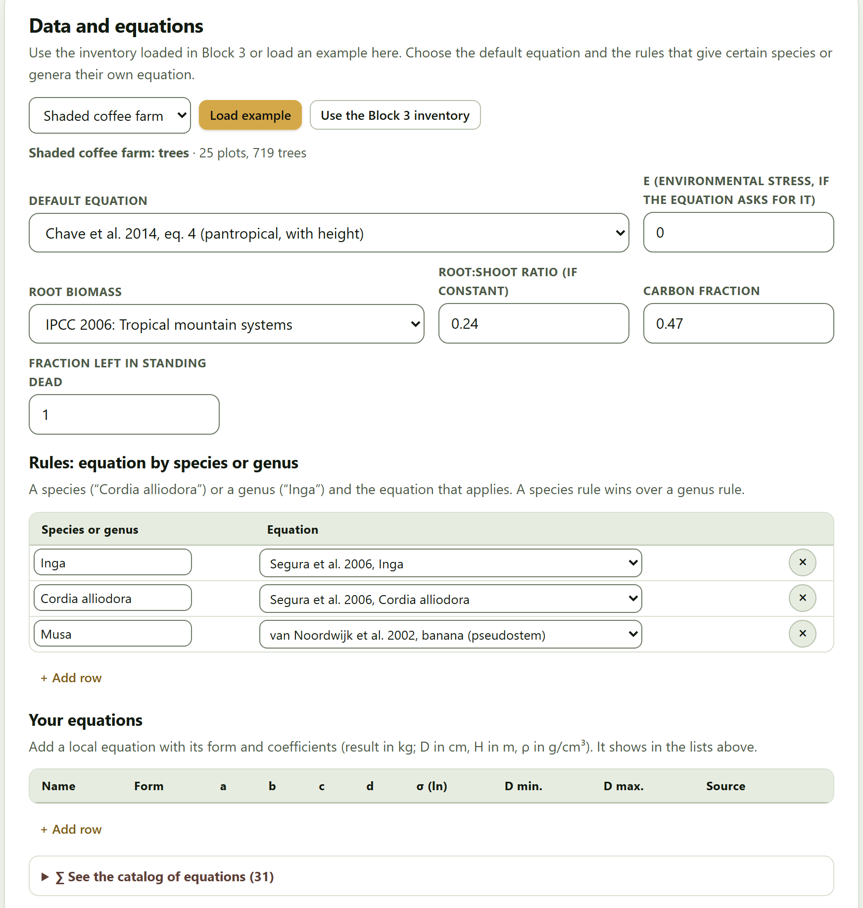
12345678910
Figure 4.1.Data and equations with the example coffee farm: 25 plots and 719 trees, the pantropical equation of Chave et al. (2014) by default, the root:shoot ratio of tropical mountain systems and three rules specific to the coffee farm.
1Source of the trees. The list chooses between Shaded coffee farm and Cloud forest; Load example opens that inventory (and its settings) and Use the Block 3 inventory takes the one already loaded. Below, the status line gives the name, the plots and the trees.
2Default equation. The one applied to every tree without a rule of its own.
3E (environmental stress, if the equation asks for it). Only eq. 7 of Chave et al. (2014), without height, uses it.
4Root biomass. The IPCC (2006) ecological zone, Cairns et al. (1997) or a constant ratio.
5Root:shoot ratio (if constant). 0.24 by default; it only counts with Constant ratio.
6Carbon fraction. 0.47 by default.
7Fraction left in standing dead. From 0 to 1; 1 by default.
8Rules: equation by species or genus. An editable table of exceptions.
9Your equations. Local equations with their form and coefficients.
10See the catalog of equations (31). The equations included, with their source.
Where the trees come from
The block has no data card for the trees: it takes them from Block 3, with everything computed there —the expansion factor of each tree according to the size of its plot, the heights estimated with Näslund’s curve if requested, the stratum and the area of the property—. If there is no inventory yet, Use the Block 3 inventory says so: “There is no inventory yet: load one in Block 3 or an example here.” Load example opens the example inventory as Block 3 would and, along the way, sets the equation, the root zone and the rules that example needs; thus, for the coffee farm, you get the three rules of Figure 4.1.
From the inventory, each equation uses what it asks for: the diameter at breast height (DBH, in cm) always; total height (m) the equations “with height”; basic wood density (ρ, g/cm³) almost all the pantropical ones, which the app looks up in the table of Section 4.2, and the diameter 15 cm above the ground (d₁₅) the coffee-shrub equation. A tree that lacks what its equation needs adds no biomass, and the app says so with a warning that names what was missing.
The equation of each tree
The Default equation list groups the 31 equations of the catalog by where they were fitted (Table 4.1). With Rules: equation by species or genus you give certain trees another equation: in the Species or genus column you type a species (“Cordia alliodora”) or a genus (“Inga”) and in Equation you choose its equation; + Add row adds a rule and × removes it. The lookup ignores case and, as the card itself says, “A species rule wins over a genus rule.”
Table 4.1. The groups of the equation list
Group
Equations
What is there
Pantropical
2
Chave et al. (2014): eq. 4, with height, and eq. 7, without height and with E
Dry tropics · Moist tropics · Wet tropics
3 + 3 + 3
Chave et al. (2005) with and without height, and Brown (1997), by forest type
Agroforestry (coffee and shade)
7
Segura et al. (2006) for shade trees in general, Inga, Cordia alliodora, Juglans olanchana and the coffee shrub; van Noordwijk et al. (2002) for pruned coffee and banana
Pines
3
Brown (1997), Díaz-Franco et al. (2007) and Figueroa-Navarro et al. (2010), the last two for Pinus patula
Temperate (by species groups)
10
Jenkins et al. (2003), one per species group
See the catalog of equations (31) unfolds the full table: the name, the Form (AGB in kg), the Variables it needs, the residual error σ (ln) when the source publishes it, the Valid DBH (cm) and the Source; ⤓ CSV or ⤓ XLSX downloads it. The number in parentheses grows when you add equations of your own.
θTheory in brief · allometric equations
An allometric equation estimates the dry aboveground biomass of a tree (AGB, in kg) from what is measured without felling it. The most general are the pantropical equations of Chave et al. (2014): eq. 4, AGB = 0.0673 · (ρD²H)0.976, uses diameter, height and density; eq. 7 does without height and replaces it with E, an index of the environmental stress of the site. Local equations leave density out because they were fitted to a single group of trees. Each equation holds in the range of diameters it was fitted on; outside it is extrapolation, and the app counts how many trees fall there (Section 4.3). The equations of Chave et al. already include the correction for the bias of back-transforming from the log scale, and the app uses them as published.
Roots, carbon and dead trees
Root biomass (BGB) is not measured: it is estimated from the aboveground biomass of each plot. Root biomass offers three routes:
The root:shoot ratios of Table 4.4 of IPCC (2006), one option per ecological zone, from IPCC 2006: Tropical rain forest to IPCC 2006: Boreal. In some zones the ratio depends on the aboveground biomass of the plot, and the app chooses it plot by plot. The coffee farm and the cloud forest use IPCC 2006: Tropical mountain systems, with a ratio of 0.27 in all their plots.
Cairns et al. 1997 (per hectare): eq. 3 of those authors, applied to the aboveground biomass per hectare of each plot. With the example coffee farm it gives 92.9 Mg/ha of total biomass, against 97.8 Mg/ha with the IPCC ratio.
Constant ratio: that of Root:shoot ratio (if constant), the same for all plots.
Carbon is biomass times the Carbon fraction: 0.47 by default, the default value of Table 4.3 of IPCC (2006). CO₂ equivalent is carbon times 44/12, the ratio of the molar masses of CO₂ and carbon. Trees the inventory marks as standing dead are computed with their same equation, multiplied by the Fraction left in standing dead (with 1 the tree keeps all its biomass; with 0.5, half), and do not add to the live trees: they are reported separately as necromass.
Your equations
A local equation fitted in your region is usually better than a general one. In Your equations, + Add row opens a row with Name, Form (the list of functional forms the app recognizes), the coefficients a, b, c and d, its residual error σ (ln) if you know it, the range D min. – D max. where it holds and the Source. The units are those of the catalog: the result in kg, D in cm, H in m and ρ in g/cm³. The equation appears at once in the Your equations group of the lists above and in the catalog; if you give it no name, it is called “My equation 1”, “My equation 2”…
!The equation weighs more than any other choice
With the same inventory, changing the equation moves the biomass far more than changing the carbon fraction or the root:shoot ratio. Choose the equation by the region and vegetation type where it was fitted, not by the figure it gives; record in the report which one you used for each species group, and if an important species of your inventory has a published equation of its own, give it to it with a rule, as the coffee farm does with Inga, Cordia alliodora and Musa.
4.2Wood density
Basic wood density —dry mass over green volume, in g/cm³— multiplies almost every pantropical equation: at equal diameter and height, a hardwood tree has more biomass than a lightwood one. This card tells you which density each species of the inventory receives and where it came from.
At the top is the editable reference table: Species, Density (g/cm³), Level and Source. It holds 42 taxa, those of the examples, with values from the global wood density database (Zanne et al. 2009); Level says whether the value is the species’ own or the mean of its genus. You can correct a value, add your species with + Add row or remove rows with ×; each change recomputes the biomass. The reference table also opens with Open in Biomass on the Densities and equations card of Block 1›Example data, which goes straight to it.
If you have the complete file of the global database, Load the global database (GWDD file)… reads it: CSV, text or a workbook (.xlsx, .xlsm or .ods; in a workbook, the Data sheet). An old-format .xls workbook is not read, and the app asks you to save it as .xlsx or .csv. The app looks for the species and density columns —and, if present, family and region— and reports how many records it loaded. With the database loaded, the Region list appears, which restricts the values to one region of the database or leaves them at World.
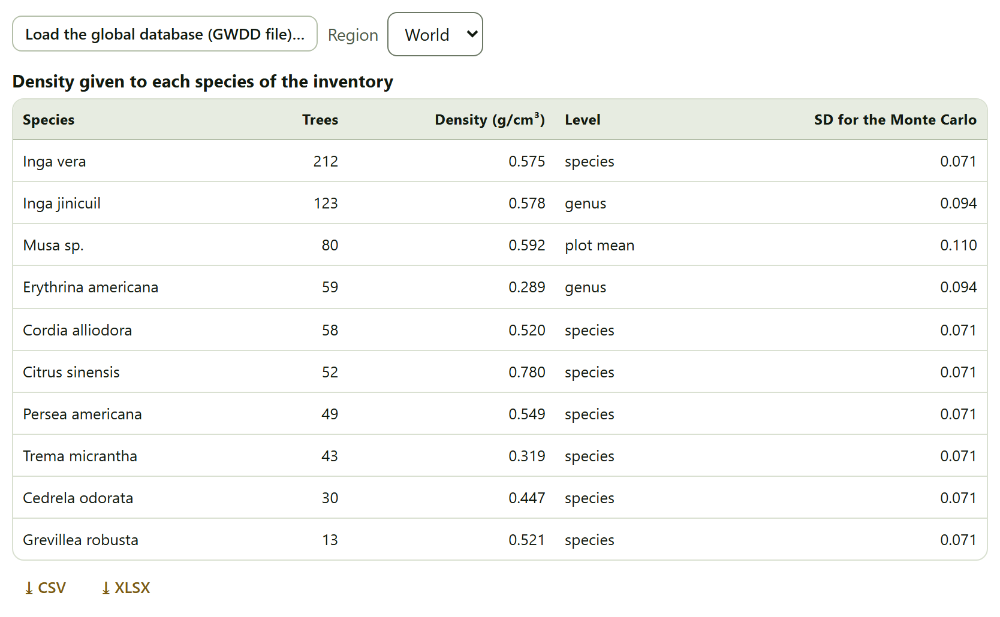
Figure 4.2. The density given to the ten species of the example coffee farm. Inga vera (212 trees) takes it from its species; Inga jinicuil and Erythrina americana, from their genus; Musa sp. is not in the table and receives the mean of its plot, although its equation does not use it.
The search order
For each tree, the app looks for its density in this order and keeps the first one it finds:
Your table, by the exact species name. The level is whatever the table says.
The global database, if you loaded it: the mean of the records of the species; if missing, the mean of the species means of the genus; if missing and the inventory carries the family, the mean of the genus means of the family.
The plot mean: the average density of the other trees of the same plot.
The inventory mean, if not even that exists.
Without the global database, step 2 runs on your own table: a tree of a species that is missing, but whose genus is present, receives the mean of its genus. The result table, Density given to each species of the inventory, shows for each species the Trees, the Density (g/cm³), the Level at which it was found (species, genus, family, plot mean or inventory mean) and the SD for the Monte Carlo: 0.071 g/cm³ if the value is the species’, 0.094 if it is the genus’ and 0.123 if it is the family’s, as in the reference implementation, and one of its own at the plot and inventory levels (0.110 for Musa sp. in Figure 4.2).
▸Example · a missing species
In the example cloud forest, Cyathea fulva (64 trees) is not in the table even at genus level, and its equation —the pantropical one— does use density. The app warns: “1 species are not in the table even at genus level (Cyathea fulva): they get the mean of their plot. Add them to the table if you know their density.” The warning appears only when the equation of those species uses density; that is why Musa sp., in the coffee farm, does not trigger it.
4.3Biomass and carbon of the inventory
“Per tree, per plot and for the whole property, with the sampling interval.” This card has no controls: it fills in as soon as there is an inventory and is redone with each change in the two previous ones.
Each live tree contributes its aboveground biomass times its expansion factor; the sum of a plot, divided by a thousand, is its megagrams per hectare (1 Mg = 1 t). Roots are added to that aboveground biomass, and the sum is total biomass, which is converted to carbon and CO₂e. The mean of the property and its interval are computed with the plots as sampling units, with the same estimator as Block 3: stratified when the plots carry their stratum with an area, simple random otherwise.
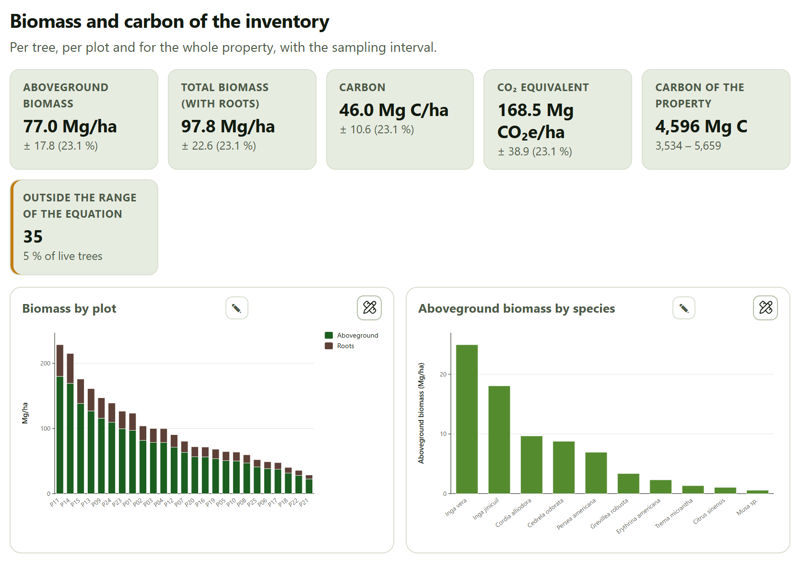
Figure 4.3. The example coffee farm: 77.0 Mg/ha of aboveground biomass, 97.8 with roots, 46.0 Mg C/ha and 168.5 Mg CO₂e/ha, all with ±23.1%; 4,596 Mg C in the property and 35 trees outside the range of their equation. On the left, each plot with its aboveground part and its roots; on the right, the species that contribute the most biomass.
The tiles read, from left to right:
Aboveground biomass, Total biomass (with roots), Carbon and CO₂ equivalent, per hectare, each with the half-width of its 95% interval and the sampling error as a percentage. Since carbon and CO₂e are biomass times constants, all four share the same relative error.
Carbon of the property: carbon per hectare times the property area given in Block 3, with its interval. Without an area, the tile does not appear.
Outside the range of the equation, in amber: how many live trees have a diameter outside the one their equation holds for, and what percentage they are. In the coffee farm there are 35 (5%): 16 Cordia alliodora, 10 Inga vera, 8 Inga jinicuil and one banana, nearly all trees thicker than the 44 cm up to which the equations of Segura et al. (2006) hold.
Below come three charts —Biomass by plot, stacked into aboveground and roots and sorted from largest to smallest; Aboveground biomass by species, with the first ten and the rest as “Others”, and Biomass of each tree by its equation (Figure 4.4)— and two tables. By plot gives for each plot its stratum, the Aboveground (Mg/ha) and Roots (Mg/ha) biomass, the Root:shoot used, the Carbon (Mg C/ha), the CO₂e (Mg/ha) and the Standing dead (Mg/ha); in the coffee farm, plot P01 has 97.2 Mg/ha of aboveground biomass, 26.2 of roots and 58.0 Mg C/ha. Tree by tree shows the first 40 trees with their DBH (cm), Height (m), ρ (g/cm³), Equation, AGB (kg), Expansion factor and whether it is Alive; the download carries them all.
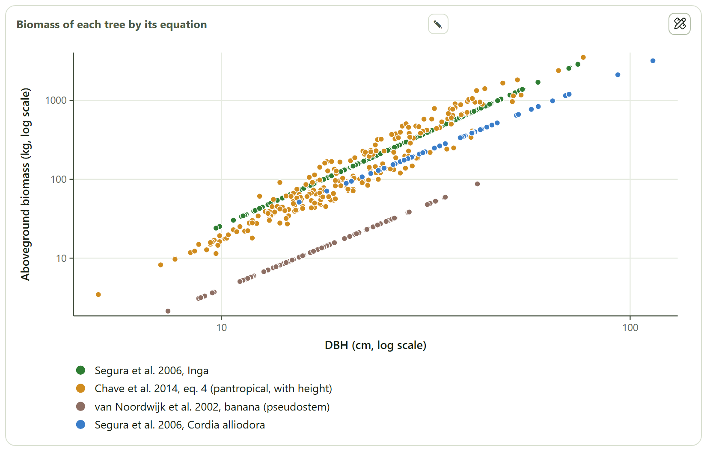
Figure 4.4. The biomass of each coffee-farm tree against its diameter, on logarithmic axes, with one color per equation. The equations that use diameter alone (Inga, Cordia, banana) draw straight lines; the pantropical one, which also uses height and density, leaves a cloud.
Figure 4.4 lets you check the equations at a glance: a group of points far from the rest at the same diameter points to an equation that does not suit those species, or to a wrong unit.
▸Worked example · the carbon of the coffee farm
The interpretation of the card sums it up like this: “The property holds 46.0 ± 10.6 Mg C/ha (168.5 Mg CO₂e/ha) in its live trees, with roots. Inga vera contributes 32 % of the aboveground biomass.” It also reminds you that the interval reflects sampling only, and that 35 trees fall outside the diameter range of their equation. With the example cloud forest (24 plots, 1,830 trees) the figures are different: 213.6 Mg/ha of aboveground biomass, 127.5 ± 26.5 Mg C/ha and 145 trees (8%) out of range; there, the species that contributes most is Liquidambar styraciflua, with 15%.
4.4Uncertainty by Monte Carlo
The interval of the previous section only says how much the mean could change if other plots had been measured. It says nothing about the errors in measuring diameters and heights, about a density borrowed from another species, or about how wrong the equation is tree by tree. This card propagates them by simulation.
The method repeats the whole biomass computation hundreds of times; in each repetition it perturbs the diameter, height and density of each tree by its error, and the biomass by the residual error of its equation. The spread of the results is the uncertainty of the measurements and the model. The controls:
Iterations: 500, 1000 (default), 2000 or 5000.
Diameter error: Chave et al. 2004 (95 % small, 5 % large), those authors’ model of measurement errors —a standard deviation of 0.0062·D + 0.0904 cm for 95% of the trees and of 4.64 cm for a random 5%, which represents gross recording errors—; or a fixed coefficient of variation, CV 1 % or CV 2 %; or No error.
Error of measured height (CV %), 5 by default, and Error of estimated height (CV %), 15 by default, for the heights Block 3 filled in with a height–diameter curve.
Residual error of the equation, checked by default: adds the error of each equation that publishes its σ on the log scale.
The computation starts with Run the Monte Carlo, which first needs the biomass of the inventory. The app uses a fixed seed, so with the same data and options, repeating the run gives the same numbers.
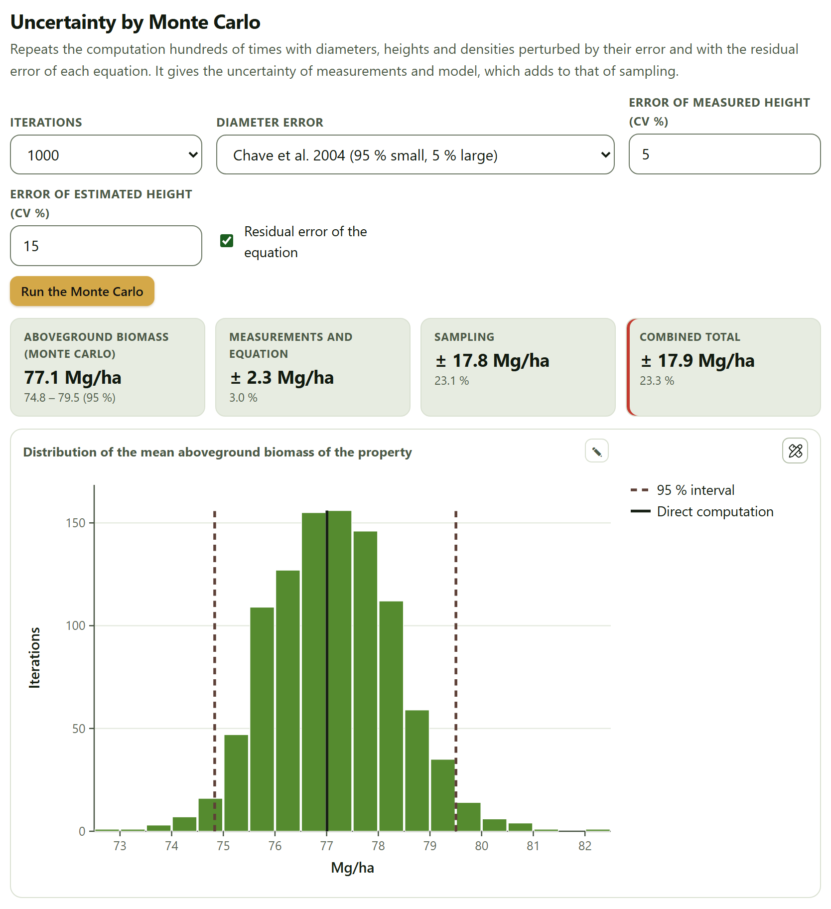
Figure 4.5. The Monte Carlo of the example coffee farm with the default values: 77.1 Mg/ha (74.8 – 79.5), ±2.3 Mg/ha from measurements and equations against ±17.8 Mg/ha from sampling. The combined uncertainty, ±17.9 Mg/ha (23.3%), shows in red because it exceeds 20%.
The four tiles are the Aboveground biomass (Monte Carlo) with its 95% interval (the 2.5 and 97.5 percentiles of the iterations); Measurements and equation, the half-width of that interval; Sampling, that of Section 4.3, and Combined total, the two added in quadrature —the square root of the sum of their squares—, as in approach 1 of propagation of IPCC (2006). The border of the last one is green if the combined uncertainty is below 10% of the mean, amber between 10 and 20% and red from 20% up. The histogram shows the distribution of the mean biomass of the property over the iterations, with the interval in dashed lines and the direct computation in a solid line, and the table By plot (Monte Carlo) gives for each plot the Direct (Mg/ha) value, the MC mean (Mg/ha), its SD, the 2.5 % and 97.5 % percentiles and the CV (%).
θTheory in brief · why the mean barely moves
The published equations already predict mean biomass: their intercept includes the exp(σ²/2) log correction. That is why the residual noise is drawn as exp(ε − σ²/2), with mean one, and the Monte Carlo mean stays very close to the direct computation (in the coffee farm, 0.2% above): only the curvature of the equation and the bounds of the errors move it. Diameters are drawn from a normal truncated between 0.1 and 500 cm, heights between 1.3 m and the maximum plus 15 m, and densities between 0.08 and 1.39 g/cm³. Unlike the reference implementation, the app does not draw the coefficients of the equation, because the sources do not publish their distribution; in the pantropical equations, the residual error dominates.
The interpretation ends by saying which source of error dominates. In the coffee farm, “Sampling dominates: more plots would cut the error more than better measurements.” When measurements and equation dominate, the app recommends a local equation or better heights instead.
4.5Necromass, litter and soil
“The other carbon pools, each with its own table.” Live trees are not all the carbon of a forest or a coffee farm: deadwood on the ground, litter and, above all, the soil hold as much again or more. Each is sampled in its own way, and that is why each has its own data card.
Downed wood (line intersect)
Downed wood is measured by line intersect: transects of known length are laid out and the diameter of each piece is measured where the line crosses it. The card asks for Transect*, Length (m)* and Diameter at the crossing (cm)*, and, optionally, the Decay class (1–3); a piece without a class counts as intermediate. Above, three fields give the density of each class: Density class 1, sound (g/cm³), 0.45 by default; Class 2, intermediate, 0.34, and Class 3, rotten, 0.23. They are only a starting point: the right thing is to measure them at your site.
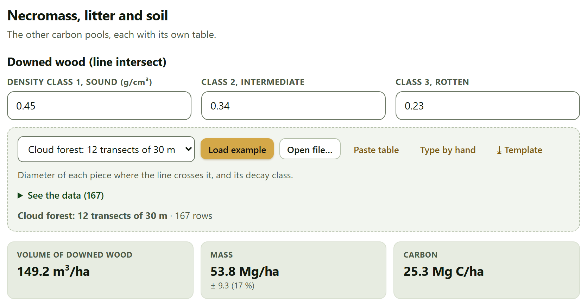
Figure 4.6. The downed wood of the example cloud forest: 12 transects of 30 m with 167 pieces give 149.2 m³/ha, 53.8 ± 9.3 Mg/ha and 25.3 Mg C/ha.
The volume per hectare of each transect comes from Van Wagner’s (1968) formula, V = π²·Σd²/(8L), which with d in cm and L in m gives m³/ha directly; mass is the volume of each piece times the density of its class. The tiles give the Volume of downed wood, the Mass with its interval (the transects are the sampling units) and the Carbon, with the carbon fraction of Section 4.1; the table By transect gives for each one its length, the Pieces, V (m³/ha) and Mass (Mg/ha). In the example cloud forest, transect T01 crosses 20 pieces and gives 199.6 m³/ha.
Litter and soil organic carbon
Litter is collected in frames of known area and weighed dry. The card asks for Plot*, Dry weight (g)* and Frame area (m²)*; the mass in Mg/ha is the dry weight in grams over the frame area in m², times 0.01. The tiles give the Litter with its interval and its Carbon.
Soil organic carbon is computed layer by layer: Mg C/ha = C % × bulk density (g/cm³) × thickness (cm) × (1 − coarse fragments/100), and the layers of each profile are added. The card asks for Plot or profile*, Organic carbon (%)* and Bulk density (g/cm³)*, and the limits of each layer in one of three ways: Upper depth (cm) and Lower depth (cm); or the Layer (e.g. “0-10”), if there are no depths; or the Thickness (cm), if there are no depths or layer, and then the layers of each profile are stacked from the surface in the order they come. Optional: Coarse fragments (%), System or group (optional) and Year (optional).
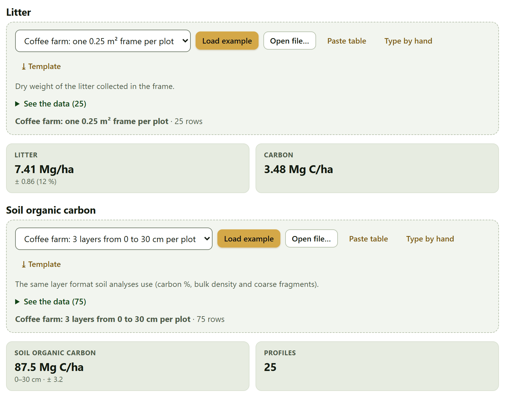
Figure 4.7. The litter of the example coffee farm (one 0.25 m² frame per plot): 7.41 ± 0.86 Mg/ha and 3.48 Mg C/ha. The soil, with three layers from 0 to 30 cm in each of the 25 plots: 87.5 ± 3.2 Mg C/ha.
iSoilPro’s soil tables
The soil card reads the layer format of SoilPro, the soil app of the suite: system, year, replicate, layer written as “0-10” or thickness, organic carbon, bulk density and coarse fragments; its column names are among the synonyms the card recognizes. If the table carries several systems or years, a System or group list appears to choose which one is computed, one at a time. If no layer has limits, the app says so: “No layer has depths: the upper and lower depths, the layer written as “0-10” or the thickness are needed.”
Always compare soil pools at the same depth: the tile states it (“0–30 cm”), and a soil sampled to 0–20 cm can be neither added to nor compared with another to 0–30 cm. The table By profile gives the carbon of each plot or profile.
4.6Pools and change between inventories
“The carbon of every pool with its error, and how much it changed between two measurements.” The last card gathers what the block computed into a single balance and, with a separate table, measures the change in stocks over time.
The pool balance
The summary brings together, in Mg C/ha, whatever pools there are: Live trees: aboveground and Live trees: roots (from Section 4.3), Standing dead if the inventory has them, Downed wood, Litter and Soil if you loaded their tables, and Shrubs and others if you type a value in Shrubs and others (Mg C/ha) with Its standard error, for what was measured outside the app (shrubs, epiphytes, palms). With nothing computed, it says “Compute the biomass or load a pool to see the summary.”
The Total carbon of the system tile gives the total with the half-width of its 95% interval and its CO₂ equivalent; the chart Carbon by pool stacks them in a single bar, and the table Carbon pools (Figure 4.8) gives each one with its Std. error, its Lower 95 % and Upper 95 % limits, the % of total, the Mg CO₂e/ha and, in the last column, In the error of the total, how that pool enters the error of the total: summed by plot or independent.
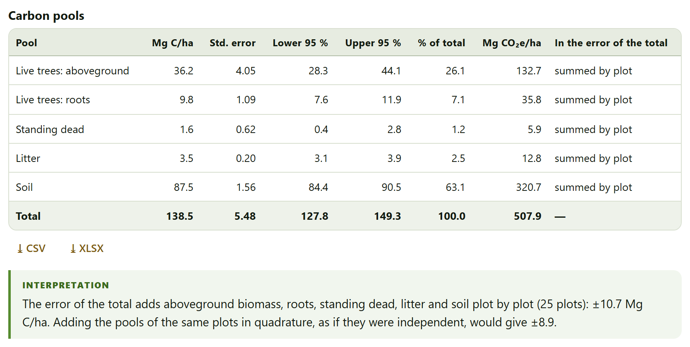
Figure 4.8. The pools of the example coffee farm with its litter and its soil: 138.5 Mg C/ha in total (from 127.8 to 149.3; 507.9 Mg CO₂e/ha), of which the soil contributes 63.1% and the live trees, with roots, 33.2%. The five pools come from the same 25 plots and enter the error of the total through their sum by plot.
θTheory in brief · the error of a sum of pools
The total is the sum of the pool means. Its error, however, is not obtained by adding in quadrature the pools that come from the same plots, because they are not independent: the aboveground part, the roots —computed from it— and the standing dead rise and fall together from one plot to the next. So the app adds those pools plot by plot —and litter and soil too, when they carry the same plots— and computes the error of the total from those plot totals, with the same estimator as the inventory (simple random or stratified). Only the pools from another sample —the downed-wood transects, a litter or a soil from other plots— and the value of Shrubs and others (Mg C/ha) are added in quadrature, as independent (IPCC 2006, vol. 1, eq. 3.1). The interval is ±1.96 times the standard error.
The interpretation compares the two calculations. In the example coffee farm: “The error of the total adds aboveground biomass, roots, standing dead, litter and soil plot by plot (25 plots): ±10.7 Mg C/ha. Adding the pools of the same plots in quadrature, as if they were independent, would give ±8.9.” Quadrature would have understated the error.
The balance uses the data of a single site. If a card has the example or the file of a site other than the inventory loaded, that pool is left out with a warning. With the coffee farm as the inventory and the cloud-forest downed wood loaded, the app says: “Left out of the balance because they come from a site other than the inventory (Shaded coffee farm: trees): downed wood (Cloud forest: 12 transects of 30 m). Load the data of the same site in that card.” With the cloud forest as the inventory, in contrast, its downed wood does enter, and the balance of trees and downed wood comes to 159.3 ± 22.6 Mg C/ha.
Change in stocks
To know whether a property gains or loses carbon, it must be measured twice. The Change in stocks card asks for Plot*, Carbon at the 1st measurement (Mg/ha)* and Carbon at the 2nd measurement (Mg/ha)*, and, optionally, Year or age 1 and Year or age 2. If the year columns are complete, the time between measurements is their mean difference; if not, Years between measurements (if there are no year columns) is used, 5 by default. With The same plots (paired) checked, the change is the mean of the plot-by-plot differences, with the paired t test; unchecked, the two measurements are treated as independent samples and the difference of means carries Welch’s (1947) error.
The tiles give the Mean change with its 95% interval —green border if the interval lies above zero, red if below and amber if it includes it—, the Annual rate in Mg C/ha/yr with its interval and its CO₂e equivalent, and the Test with its p value and degrees of freedom. The interpretation for the example pine plantation says that “the 95 % interval excludes zero: the change stands out from the sampling error”, and adds that remeasuring the same plots removes the permanent differences between them from the variance. That is the reason to remeasure permanent plots instead of drawing two new samples: with the same plots, a small change is detected with far fewer plots.
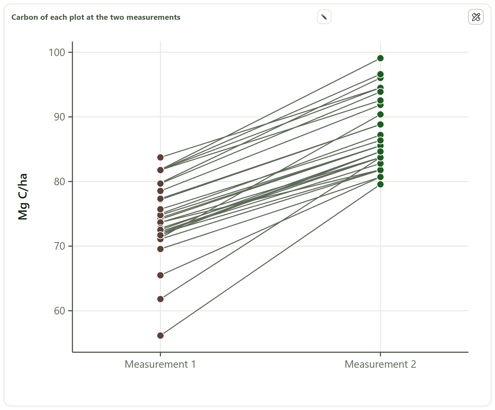
Figure 4.9.Carbon of each plot at the two measurements, with the 30 permanent plots of the example pine plantation. The tiles give +12.99 Mg C/ha (11.67 to 14.30) in 7.8 years, +1.66 Mg C/ha/yr (6.10 Mg CO₂e/ha/yr), p < 0.001 (paired t, 29 df). Each gray line is one plot; all rise.
✓Decision rule
If many trees fall outside the range of their equation
then look for an equation fitted to trees of that size and give it to them with a rule; if none exists, say so in the report.
If the Monte Carlo says sampling dominates
then more plots will cut the error more than better measurements; if measurements and equation dominate, measure more heights or use a local equation.
If the combined uncertainty exceeds 20% (red tile)
then the estimate serves to describe the property, but is weak for committing carbon credits.
If the interval of the change includes zero
then with those plots you cannot claim that carbon rose or fell.
Guides for interpretation, not laws.
✕When something goes wrong
The result cards are empty. There is no inventory: load one in Block 3 or with Load example, then click Use the Block 3 inventory.
“… trees lack what their equation needs”. An equation with height and trees without it, or the coffee-shrub equation without d₁₅. Estimate the heights in Block 3, change the equation or set a rule.
The biomass comes out a thousand times too large or too small. Check the units: DBH in cm, height in m, density in g/cm³ (0.6, not 600), and your equations in kg.
“Left out of the balance because they come from a site other than…”. A card holds data from another site: load the data of the same property in it.
5
Chapter five · Block 5
Growth and yield
From the ring to the rotation: how much a tree grows each year and on average, which curve describes its growth, how good the site of each plot is and how much volume the stand will yield at each age. With the stem analysis of a few trees and the remeasurements of permanent plots, the block arrives at the yield table and the rotation of maximum production.
5.1Increments and biological rotation
5.2Growth models
5.3Site index
5.4Stand projection and yield table
Block 5 carries the subtitle “Current and mean annual increments, growth models, site index and stand projection.” It has two data cards: the tree card (Section 5.1), which also feeds the models of Section 5.2, and the card of remeasured plots (Section 5.3), which also feeds the projection of Section 5.4. It does not depend on the inventory of Block 3.
The example of the whole chapter is the example pine plantation, opened with Open in Growth on its card in Block 1›Example data: the stem analysis of six trees and thirty permanent plots measured six times (Section I.7). The data are simulated.
5.1Increments and biological rotation
“With the stem analysis or the remeasurements of a tree: the current annual increment (CAI), the mean annual increment (MAI) and the age at which MAI peaks.” It is the oldest computation in forest mensuration, and still the one that decides when it pays to harvest.
The data card asks for Tree or series* and Age (years)*, and at least one of the variables Diameter (cm), Height (m) and Volume (m³). A “series” can be a tree rebuilt by stem analysis —its rings give the diameter and height at each age— or a tree measured several times. The example Pine: stem analysis of 6 trees brings 203 rows: trees T1 to T6, with series of 30 to 36 years. Below the card there are three controls:
Variable: Diameter (cm), Height (m), Volume (m³) (default) or Basal area (m²), computed from the diameter.
Form factor (if volume is missing): 0.45 by default. If the series has no volume but does have diameter and height, the app computes it as basal area × height × form factor. It does so with the example pine plantation, which carries no volume.
Tree for the models: the series fitted in Section 5.2 and shown in full in its series table.
θTheory in brief · CAI, MAI and biological rotation
The current annual increment between two measurements is what the variable grew between them, divided by the years: CAI = (Y₂ − Y₁)/(t₂ − t₁). The mean annual increment is what has accumulated divided by the age: MAI = Y/t. At first the tree grows ever faster and CAI exceeds MAI, which rises; when CAI falls below MAI, MAI starts to decline. The maximum MAI therefore lies where the two curves cross. In volume, that age is the biological rotation, or rotation of maximum production: harvesting then gives the largest mean volume per year. The economic rotation, which discounts money over time (Block 9), is usually shorter (Assmann 1970; Davis et al. 2001).
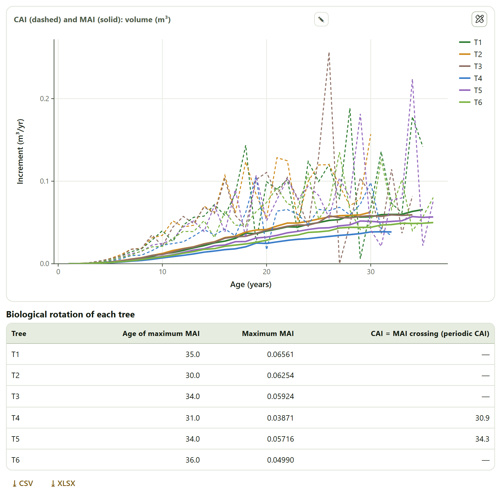
Figure 5.1. The volume of the six trees of the example pine plantation: CAI in dashed lines, which jump from one year to the next, and MAI in solid lines, which rise smoothly. The table gives for each tree the age and value of the maximum MAI.
The chart CAI (dashed) and MAI (solid): volume (m³) draws both curves for all the trees, one color per tree. Below, the table Biological rotation of each tree gives the Age of maximum MAI, the Maximum MAI and the CAI = MAI crossing (periodic CAI), and the table Series of tree T1 (or of the chosen tree) gives the variable, CAI and MAI year by year. In the example pine plantation, tree T1 reaches 2.2965 m³ at 35 years, with an MAI of 0.06561 m³/yr.
The interpretation gives the mean age of maximum MAI, 33.3 years in the example, and warns: “In 4 trees MAI is still rising at the last measured age: their rotation is beyond the series.” They are T1, T2, T3 and T6, whose maximum falls exactly at their last age; for them, the age in the table is only a lower bound of the rotation.
iThe crossing with a noisy CAI
The year-by-year CAI of a stem analysis goes up and down a lot, because one wide or narrow ring moves it, and it crosses MAI too early at local maxima that are not the rotation. That is why the crossing column does not look for the first crossing: it compares the CAI of each interval with the MAI at its start —MAI rises exactly when that CAI exceeds it—, places each interval at its midpoint and interpolates between the interval that ends at the maximum MAI and the next one. The crossing thus lies within half an interval of the age of maximum MAI: 30.9 years in T4 (maximum at 31) and 34.3 in T5 (maximum at 34). In the trees whose MAI is still rising at the end of the series there is no crossing, and the column shows “—”.
5.2Growth models
“Four sigmoid curves fitted to the chosen series, with the age of the largest current and of the largest mean increment of each.” A fitted curve smooths out the noise of the rings and lets you compute the rotation even if the series has not reached it.
The card has no controls of its own: it fits the series of the Tree for the models in the Variable chosen in Section 5.1, and is redone when you change them. It needs at least five ages (“At least 5 ages are needed.”). The four models, with A as the asymptote —the maximum size the model attributes to the tree—, are:
Table 5.1. The four growth models
Model
Equation
Feature
Chapman–Richards
Y = A (1 − e−kt)p
The most flexible: p moves the inflection point (Richards 1959)
Gompertz
Y = A exp(−b e−kt)
Inflection fixed at A/e; does not pass through the origin (Gompertz 1825)
Schumacher
Y = A exp(−b/t)
Two parameters; a classic in forest yield (Schumacher 1939)
Logistic
Y = A/(1 + b e−kt)
Symmetric, inflection at A/2; does not pass through the origin
Each model is fitted by nonlinear least squares from several starting points. The table Comparison of models (tree T1) gives for each its Equation, the RMSE, the R², the AIC, the Asymptote A, the Age of max CAI —the inflection point, where the curve grows fastest— and the Age of max MAI; the shaded row is the one with the lowest AIC, the criterion the app uses to choose. Gompertz and the logistic do not pass through the origin, so their maximum MAI is searched only from the youngest observed age; if the maximum falls at an end of the search range, the column shows “— (at the edge)”.
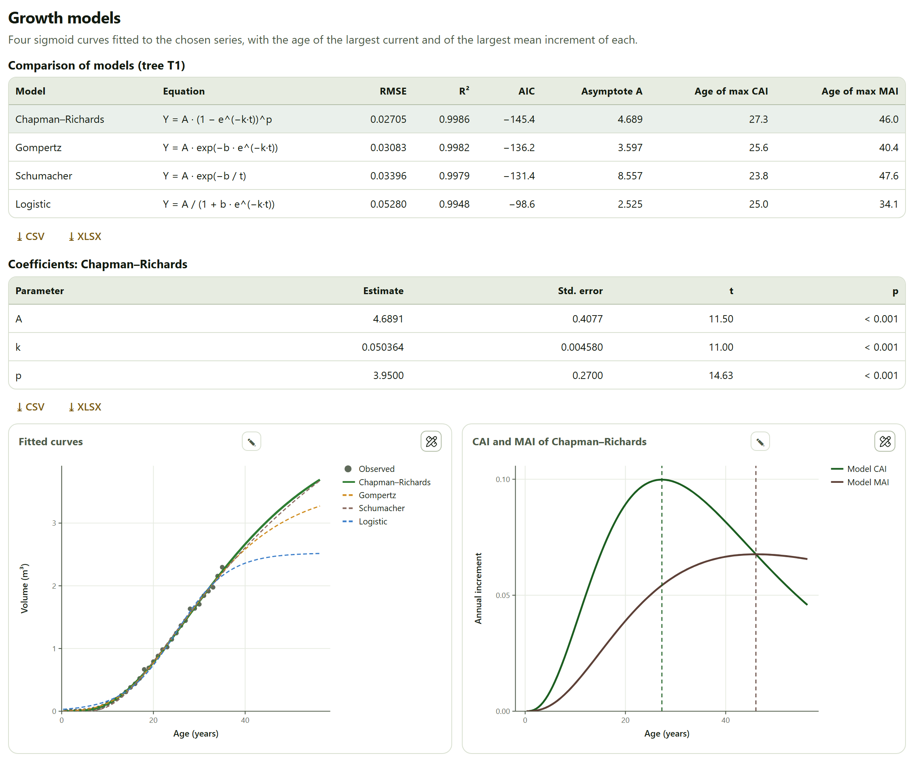
Figure 5.2. The volume of tree T1. Chapman–Richards has the lowest AIC (−145.4) and puts the maximum CAI at 27.3 years and the maximum MAI at 46.0; the logistic, the worst (−98.6), levels off early at 2.525 m³. On the right, the CAI and MAI of the best model, with vertical lines at its two critical ages.
Below, Coefficients: Chapman–Richards (or of the winning model) gives each parameter with its standard error, its t and its p: for T1, A = 4.6891, k = 0.050364 and p = 3.9500. The chart Fitted curves shows the observed data and the four curves, extended beyond the last age; the one on the right, the CAI and MAI of the winning model, which cross exactly at the age of maximum MAI.
The interpretation sums it up: “Chapman–Richards has the lowest AIC. By it, the current increment peaks at 27.3 years and the mean increment at 46.0 years.” That 46-year rotation lies beyond the 35 years measured: the curve sets it, not the data. That is why the app adds that the asymptote (4.689 m³) “is an extrapolation: take it as an order of magnitude, not as a fact”. The four models fit almost equally within the data (R² from 0.9948 to 0.9986) and part ways afterwards: the age of maximum MAI ranges from 34.1 years with the logistic to 47.6 with Schumacher.
5.3Site index
“The dominant height each plot reaches at the base age: anamorphic or polymorphic curves fitted to the remeasurements, and the site class of each plot.” Dominant height hardly depends on stand density or thinnings, and that is why it is the usual measure of site quality.
The data card asks for Plot*, Age (years)* and Dominant height (m)*, one row per plot and measurement. The columns Basal area (m²/ha), Volume (m³/ha) and Trees per hectare are optional here, but the projection of Section 5.4 needs the first two. The example Pine: 30 permanent plots, 6 remeasurements brings 180 rows, with ages from 5 to 30 years. The controls:
Base age (years): the age at which the index is expressed; 20 by default.
Family of curves: Schumacher anamorphic (guide curve ln H = b₀ + b₁/t), Chapman–Richards anamorphic (guide curve) or Chapman–Richards polymorphic (algebraic differences on the rate), the default.
Site classes: 3, 4 (default) or 5.
θTheory in brief · anamorphic and polymorphic curves
In an anamorphic family all curves have the shape of a guide curve and only change in scale: the index of a measurement is its height rescaled to the base age. In a polymorphic one, the shape also changes with the site. The app uses algebraic differences (Bailey and Clutter 1974; Cieszewski and Bailey 2000): a Chapman–Richards with common A and p and a site-specific rate k, fitted to the pairs of successive measurements with H₂ = A[1 − (1 − (H₁/A)1/p)t₂/t₁]p. It needs remeasurements of the same plots.
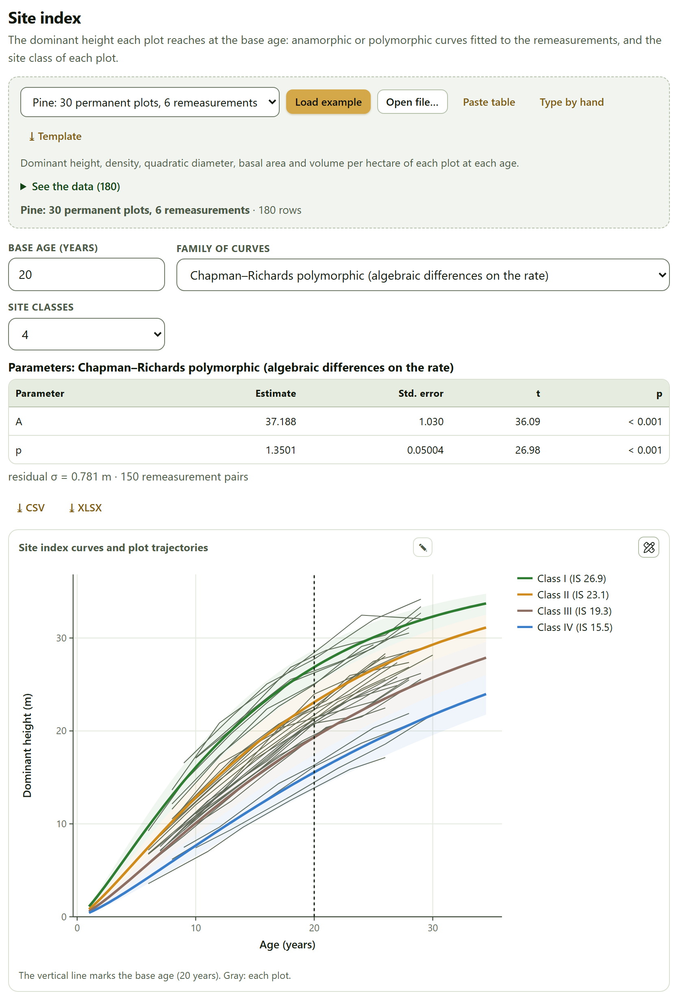
Figure 5.3. The site index of the example pine plantation with the polymorphic family: A = 37.188 m and p = 1.3501, fitted to 150 remeasurement pairs with a residual σ of 0.781 m. The four classes (SI 26.9, 23.1, 19.3 and 15.5 m at the center of each) over the gray trajectories of the 30 plots; the dashed line is the base age.
The index of a plot is the mean of the indices of its measurements. The table Site classes splits the range of indices into equal parts —class I is the best— with their limits SI from (m) and SI to (m) and the Plots in each: in the example, class I runs from 25.0 to 28.8 m with 7 plots; II, from 21.2 to 25.0 m with 8; III, from 17.4 to 21.2 m with 11, and IV, from 13.7 to 17.4 m with 4. Site index of each plot gives for each plot its SI at 20 years (m), the SD among measurements, the Measurements and its Class; plot R01, for instance, has SI = 19.68 m (class III).
The SD among measurements is the test that the family of curves works: if a plot grows as its curve says, all its measurements give the same index. The interpretation gives the mean of that spread and judges it: below 0.6 m, “the curves follow well the way the plots grow”; above, the app suggests trying another family.
▸Worked example · three families with the same plots
With the example pine plantation and a base age of 20 years, the mean spread of the index among the measurements of a plot is 0.55 m with the polymorphic family, 1.00 m with the Chapman–Richards anamorphic and 1.62 m with the Schumacher one. Only the polymorphic family passes the threshold; for the other two the app calls the spread “large” and proposes the polymorphic ones, which “usually follow better sites that grow at different paces”. The indices range from 13.7 to 28.8 m with the polymorphic family, from 13.0 to 29.3 m with the Chapman–Richards anamorphic and from 13.1 to 29.1 m with the Schumacher one.
5.4Stand projection and yield table
“Clutter's compatible system fitted to the same remeasurements projects basal area and volume; with survival and the site curve it builds the yield table, which you can edit.” It is the step from the tree to the stand: how much volume there will be per hectare at each age, and when the maximum mean increment is reached.
The card uses the remeasurements of Section 5.3, with their basal area and volume per hectare, and the site index of each plot. If they are missing, it says so: “The projection needs the basal area and volume per hectare of the remeasurements and the site index of each plot.” At least 6 remeasurement pairs are needed.
θTheory in brief · Clutter’s system
Clutter (1963) proposed two compatible equations: growth, integrated, gives yield. Future basal area comes from the current one: ln G₂ = ln G₁·(t₁/t₂) + α₀(1 − t₁/t₂) + α₁(1 − t₁/t₂)·S. Volume, from basal area, age and site: ln V₂ = β₀ + β₁/t₂ + β₂·S + β₃·ln G₂. The app fits them to the pairs of successive remeasurements as is usually done: the first without intercept and with the coefficient of ln G₁·t₁/t₂ fixed at 1, by least squares; the second by two-stage least squares (Theil 1953), with ln G₂ replaced by its projection on the exogenous variables. S is the site index of each plot from Section 5.3.
The seven fields of the projection are Site index, Initial age (years), Initial basal area (m²/ha), Initial trees per hectare, Annual mortality (%), Final age (years) and Step (years). If you type nothing in the first three, the app proposes them from the data: as the index, the median of the plot indices (21.4 m in the example); as the initial age, the youngest age measured (5 years), and as the initial basal area, the mean of the youngest plots (18.0 m²/ha). The others come with 1200 trees per hectare, 1.5% annual mortality, a final age of 40 years and a 2-year step. Change them to project the stand you are interested in: each change redoes the table, and what you type in those three fields stays even if you fit the site again. If you clear one, the app proposes it again.
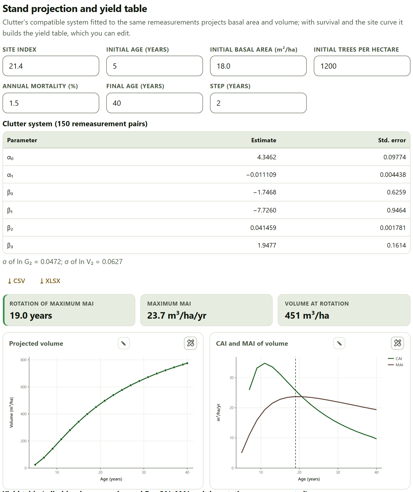
Figure 5.4. The projection of the example pine plantation with the values the app proposes: the Clutter system, fitted to 150 remeasurement pairs, gives a rotation of maximum MAI of 19.0 years, with 23.7 m³/ha/yr and 451 m³/ha at that age. On the right, the CAI and MAI of volume cross at the rotation (vertical line).
The table Clutter system (150 remeasurement pairs) gives the six coefficients with their standard error —in the example, α₀ = 4.3462 and β₃ = 1.9477— and, below, the residual error of each equation (σ of ln G₂ = 0.0472; σ of ln V₂ = 0.0627). The tiles give the Rotation of maximum MAI, with a green border, or amber with the note “MAI still rising at the end of the table” if the maximum is not reached before the final age; the Maximum MAI, and the Volume at rotation. The charts Projected volume and CAI and MAI of volume show the table as curves.
The yield table
The table is shown twice. The first is editable: Age, Dominant height (m), N (trees/ha), G (m²/ha) and V (m³/ha). Its title explains it: “change a value and Dq, CAI, MAI and the rotation are recomputed”. It serves to correct the projection with what you know —a thinning that lowers N and G at a certain age, a measured volume— or to remove with × the ages you do not want; + Add row adds an age. The second, Full yield table, adds the quadratic mean diameter Dq (cm), the CAI (m³/ha/yr) and the MAI (m³/ha/yr), with the rotation row shaded, and it is the one that is downloaded.
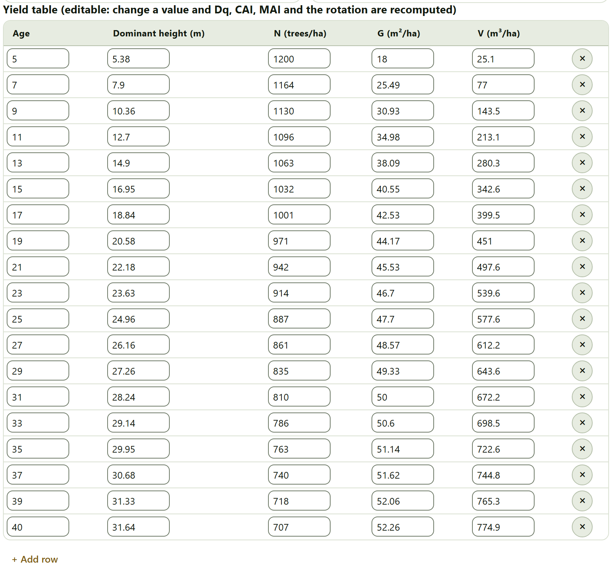
Figure 5.5. The editable yield table of the example pine plantation, from 5 to 39 years every 2 years and the last row at the final age, 40 years: from 1200 trees and 25.1 m³/ha at 5 years to 707 trees and 774.9 m³/ha at 40.
Each column comes from a different piece: dominant height, from the site curve of Section 5.3 with the chosen index; N, from survival at a constant annual rate, N = N₀(1 − m)t − t₀; G and V, from the Clutter system, and Dq = √(40,000·G/(π·N)). In the example, MAI reaches 23.74 m³/ha/yr at 19 years and drops to 23.69 at 21: the maximum is flat, and a few years before or after the rotation the mean yield barely changes. The interpretation puts it like this: “With site index 21.4 m, the mean annual volume increment peaks at 19.0 years (23.7 m³/ha/yr). The system was fitted with plots from 5.0 to 30.0 years: beyond, the table is extrapolation.”
!The site index and the base age
The Clutter system is fitted with the plot indices at the base age of Section 5.3, and the Site index of the projection must be expressed at that same age. If you did not type it, the app proposes it again when the base age changes (with 25 years, the median becomes 24.9 m). If you typed it and then change the base age, the app keeps it and warns: “The site index you typed (… m) was for a base age of 20 years and the base age is now 25…”. Check the index, or clear it so that the app proposes the median of the plots.
✓Decision rule
If the MAI of a tree peaks at its last measured age
then the rotation is beyond the series: use the fitted curve and take it as an estimate.
If the age of maximum MAI of the curve falls far from the data
then it is extrapolation: compare it across models before using it.
If the SD of the index among measurements exceeds 0.6 m
then try another family of curves; with remeasurements, the polymorphic ones.
If the rotation of the table falls outside the ages the system was fitted with
then the table is extrapolation: take it with caution.
If the rotation tile shows in amber
then raise the final age: MAI is still rising at the end of the table.
Guides for interpretation, not laws.
✕When something goes wrong
“At least 5 ages are needed.” The tree chosen for the models has too short a series: choose another or change the variable if data are missing for it.
“The family of curves could not be fitted…”. The polymorphic families need remeasurements of the same plots; with a single measurement per plot, use an anamorphic one.
The projection does not appear. The basal area or volume per hectare is missing in the remeasurements, the site index could not be computed or there are fewer than 6 remeasurement pairs.
6
Chapter six · Block 6
Forest diversity and ecology
An inventory does more than count wood: it tells you which species are present and in what proportions. This block turns the list of trees into a community and answers how many species there are and how many remain to be recorded, how dominated the community is, how alike the sites are, how species are spread among the stories of the forest, and whether the trees are clustered, random or regularly spaced.
6.1The community
6.2Diversity indices
6.3Hill numbers, rarefaction and accumulation
6.4Similarity among sites and ordination
6.5Vertical structure
6.6Spatial pattern of the trees
Open the block with Block 6›Diversity and ecology in the bar on the left. Its title on screen is Forest diversity and ecology, with the line “Richness, indices and Hill numbers, rarefaction, similarity among sites, vertical structure and spatial pattern.” It has six cards. Two of them read data: The community, on which the next four depend, and Spatial pattern of the trees, which needs the coordinates of every stem and works on its own. The example of this chapter is the cloud forest (Section I.7): the Open in Diversity button on the home page, or the example of each card, loads both the community of its 24 plots and the mapped 50 × 50 m plot.
6.1The community
The whole block starts from a long table: one row per site and species with its abundance, or one row per individual. The app turns it into the sites-by-species matrix used by Sections 6.2 to 6.5.
The data card is the usual one (Section I.6): example, file, pasted table, table typed by hand, Use the loaded inventory (the one in Block 3) or ⤓ Template. It asks for these columns:
Field on the card
What it holds
Site or plot *
The name of the site; each distinct value is a row of the matrix.
Species *
The name of the species; each distinct value is a column.
Abundance (empty = 1 individual)
How many individuals the row stands for. If it is missing, each row counts as one individual; repeated rows are added up.
Group (stratum, farm…)
A group of sites (the stratum, the farm, the treatment). It colors the sites in the ordination and splits the Hill and rarefaction curves.
Height (m), for vertical structure
The height of each individual; only Section 6.5 uses it.
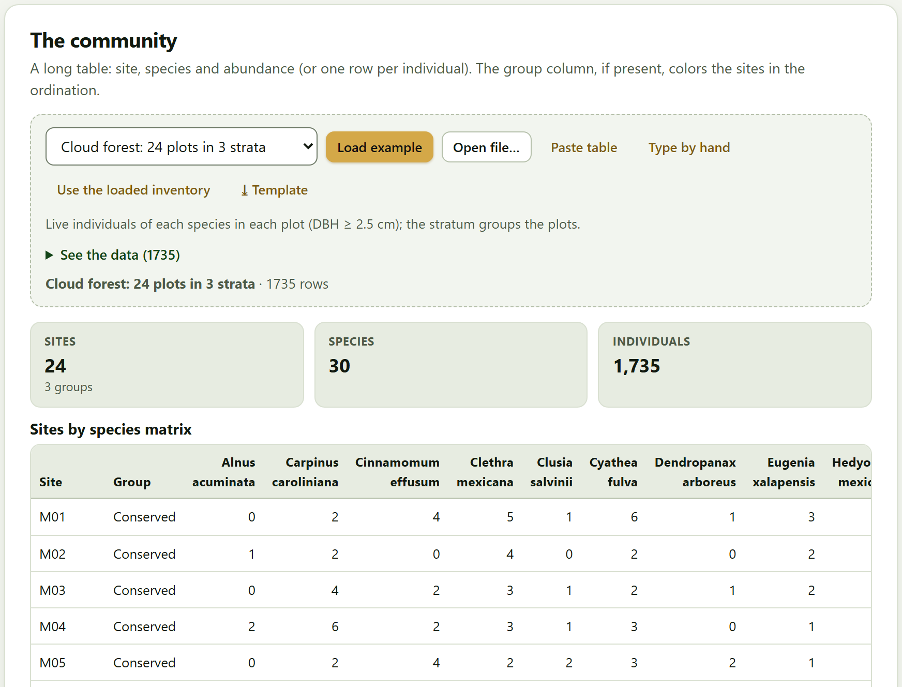
Figure 6.1. The cloud forest example: the live individuals (DBH ≥ 2.5 cm) of 24 plots in 3 strata. The matrix has 24 sites, 30 species and 1,735 individuals; each cell is the number of individuals of one species in one plot.
With Use the loaded inventory, the app takes the live trees of Block 3, each one as an individual, with its plot as the site, its stratum (or its cluster) as the group, and its height. The diversity thus comes from the same inventory that gave the growing stock, without preparing another table.
Below come three tiles—Sites (with the number of groups), Species and Individuals—and the Sites by species matrix, which shows up to 30 rows on screen and downloads in full with ⤓ CSV or ⤓ XLSX.
iThe second example
The example list of the card also offers Coffee farm: shade trees of 25 plots, with the farm as the group. It gives 25 sites in 5 groups, 10 species and 694 individuals: a much poorer community, dominated by the two Inga species, worth comparing with that of the forest.
6.2Diversity indices
The card asks for nothing: as soon as there is a community, it computes the classic indices for each site and for all sites together.
The six tiles refer to the whole set: Observed richness (with Chao1 and ACE below), Shannon H′ (with its exponential, in “effective species”), Simpson 1 − λ (with 1/λ), Pielou J, Fisher's α and Sample coverage, which is marked in green when it exceeds 95%. The Indices by site table repeats everything by plot—N, S, H′, 1 − λ, 1/λ, J, α, Margalef, Chao1, ACE and the coverage—and closes with the All sites row. The chart Observed and estimated richness by site shows, for each plot sorted from most to fewest species, the observed richness and the two estimates.
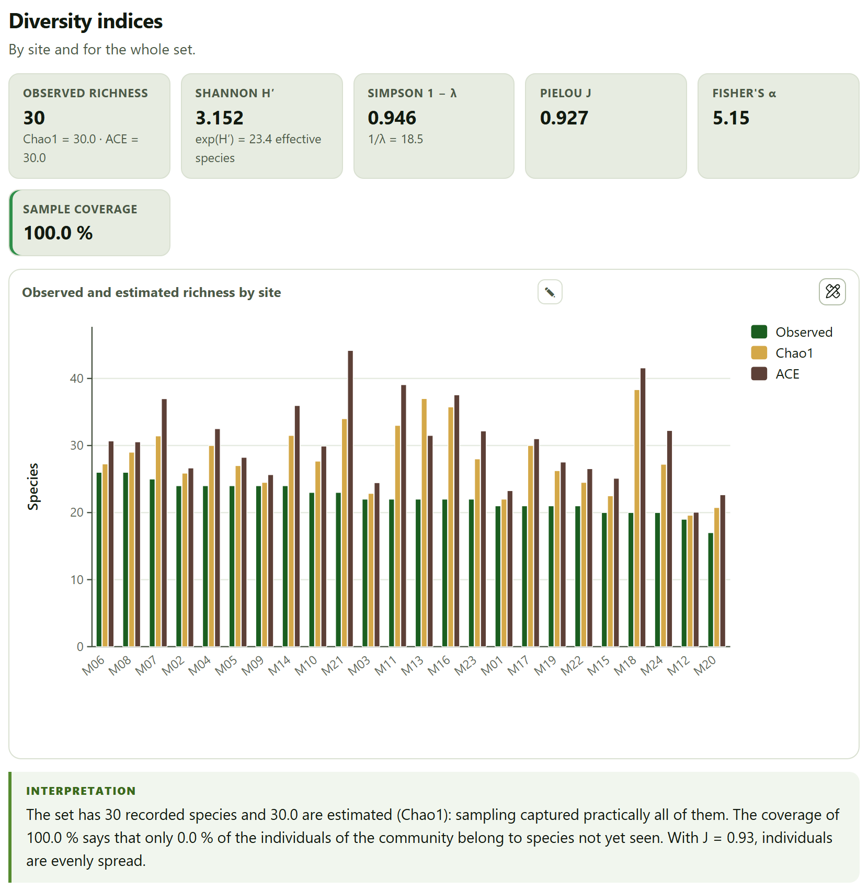
Figure 6.2. The whole cloud forest: 30 species observed and 30.0 estimated by Chao1 and ACE, H′ = 3.152 (23.4 effective species), 1 − λ = 0.946, J = 0.927 and Fisher’s α = 5.15, with a coverage of 100.0%. Plot by plot, however, species are missing: M18 records 20 and Chao1 estimates 38.3. The by-site table was left out of the image.
The app’s interpretation applies three rules: if Chao1 exceeds the observed richness by less than half a species, “sampling captured practically all of them”; the coverage says what share of the individuals belongs to species not yet seen; and if J exceeds 0.8, “individuals are evenly spread,” otherwise “a few species dominate.” For the cloud forest example it says that practically all species were captured and that the spread is even (J = 0.93); the coffee farm example gives 10 species, Chao1 = 10.0, H′ = 2.057 and J = 0.893.
θTheory in brief · richness, evenness and what remains unseen
With pi the share of individuals of species i, Shannon H′ = −Σpi ln pi measures the uncertainty of guessing the species of an individual drawn at random, and Simpson λ = Σpi², the probability that two individuals belong to the same species; 1 − λ and 1/λ grow with diversity. Pielou J = H′/ln S compares H′ with its maximum: 1 if all species are equally abundant. Fisher’s α comes from S = α ln(1 + N/α) and depends little on sample size (Fisher et al. 1943); Margalef (S − 1)/ln N and Menhinick S/√N are richness indices corrected more crudely (Magurran 2004). Chao1 (bias-corrected, S + f₁(f₁ − 1)/(2(f₂ + 1)); Chao 1987) and ACE (with species of 10 individuals or fewer as rare; Chao and Lee 1992) estimate how many species the community holds from those seen once or twice (f₁ and f₂). The coverage of Chao and Jost (2012) is the share of the individuals of the community that belong to species already recorded.
!Compare sites at the same effort
Observed richness grows with the number of individuals counted: a plot with 91 individuals (M08, 26 species) and another with 59 (M20, 17 species) cannot be compared directly. To compare richness use the rarefaction of Section 6.3, or the indices that depend less on size (Fisher’s α, 1/λ). And look at the coverage of each plot: at 0.820 (M21), almost one in five individuals of that community belongs to species the plot did not record.
6.3Hill numbers, rarefaction and accumulation
Hill numbers put all the indices on a single scale, that of effective species: how many equally abundant species would give the same diversity. Rarefaction and accumulation tell how richness grows with sampling effort.
This card asks for nothing either. If the community has between 2 and 8 groups, each chart carries one curve per group besides that of All (in black). There are three charts and one table:
Hill diversity profile: the effective number of species qD for order q from 0 to 3. At q = 0 it is richness; at q = 1, exp(H′); at q = 2, the inverse Simpson.
Rarefaction (solid) and extrapolation (dashed): the expected species in a subsample of m individuals, up to the observed size (the dot) and extrapolated up to twice that size.
Species accumulation by plot (± 1 SD): the expected species as 1, 2, … plots are pooled, with its band.
Observed and asymptotic diversity: for each set, the individuals, the observed and asymptotic diversity at q = 0, 1 and 2, and the coverage.
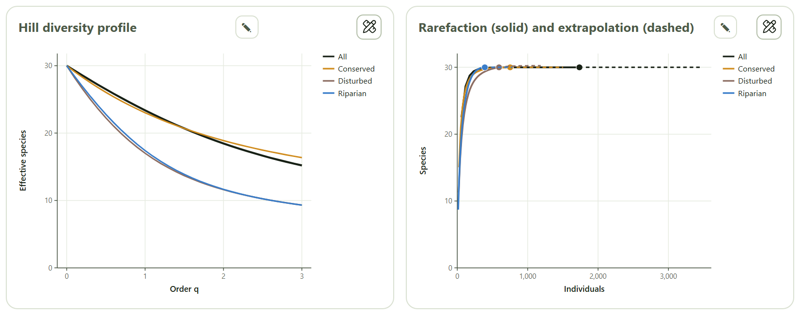
Figure 6.3. The three strata of the cloud forest share the same 30 species (q = 0), but the profile of the conserved stratum falls much more slowly than those of the disturbed and riparian strata: at q = 2 it has 18.88 effective species against 11.60 and 11.66. The rarefaction curves reach their asymptote before 500 individuals.
The Hill profile is the most honest way to compare communities: if two profiles cross, one community is richer but the other more even, and no single index would tell you so. In the example, the disturbed and riparian strata almost coincide along the whole profile, although the disturbed stratum has 593 individuals and the riparian one 391.
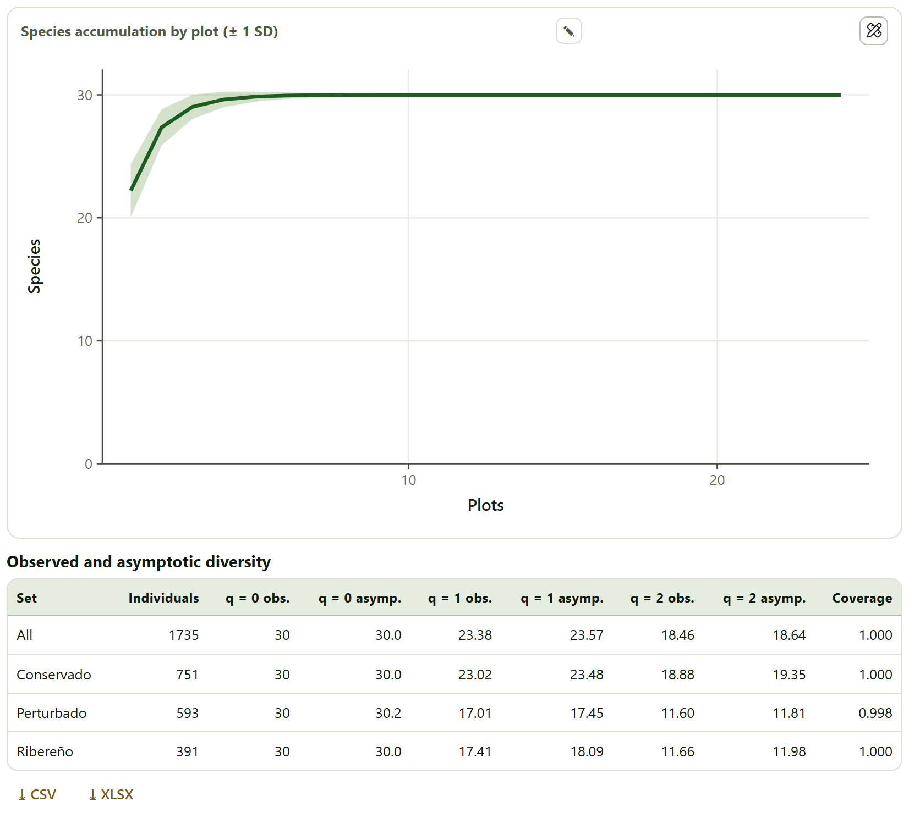
Figure 6.4. The accumulation of the cloud forest goes from about 22 species with one plot to all 30 before ten plots are pooled, and the last plot adds 0.00 species. In the table, the asymptotic diversity barely exceeds the observed one (23.57 against 23.38 at q = 1 for all sites).
θTheory in brief · the estimators
qD = (Σpiq)1/(1−q) decreases with q, and the faster the more dominated the community is (Hill 1973). The asymptotic values (Chao et al. 2013, 2014) estimate the diversity of the whole community: richness by S + ((n − 1)/n)·f₁²/(2f₂), Shannon entropy by the formula of Chao, Wang and Jost, and Simpson by n(n − 1)/Σx(x − 1). Rarefaction is that of Hurlbert (1971), E[Sm] = Σ[1 − C(n − xi, m)/C(n, m)], and the extrapolation up to 2n, that of Chao et al. (2014). Accumulation uses the exact expectation of species in t plots and its standard deviation conditional on the sample (Colwell et al. 2004).
The interpretation looks at the last stretch of the accumulation curve: if the last plot added less than half a species, “the accumulation curve is already leveling off; more plots would hardly add species”; otherwise, “the curve is still rising.”
6.4Similarity among sites and ordination
How much do the sites share species? The card computes the dissimilarity between every pair of sites and summarizes it in a heat map, a dendrogram and a two-dimensional ordination. At least 3 sites are needed.
The only control is Index: Bray–Curtis (the default, with abundances), Jaccard or Sørensen (both with presence and absence). The card draws the Dissimilarity among sites as a heat map (0 = identical, 1 = nothing in common), the UPGMA dendrogram with its cophenetic correlation in the title, and the NMDS ordination with its stress; the sites are colored by group.
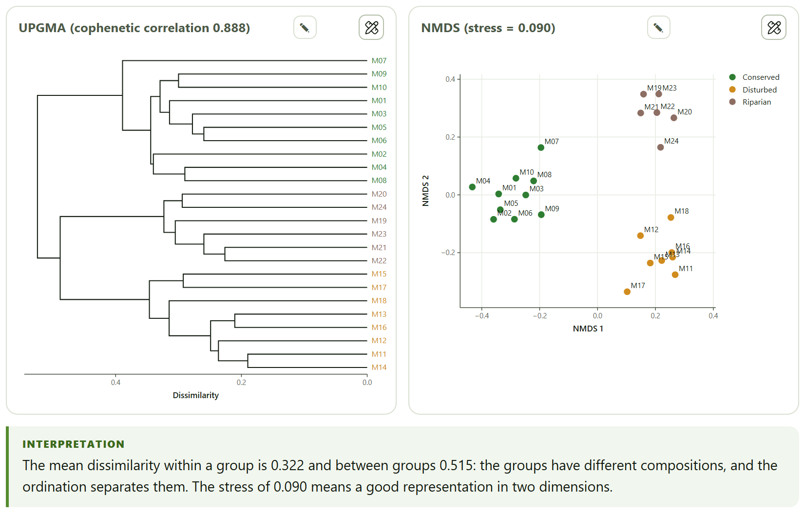
Figure 6.5. With Bray–Curtis, the dendrogram (cophenetic correlation 0.888) separates the three strata without mixing them, and the NMDS (stress = 0.090) places them in three clouds. The mean dissimilarity is 0.322 within a stratum and 0.515 between strata.
The buttons Send the matrix to ClusteringPro and Send the matrix to PCAPro download the sites-by-species matrix as CSV (with the site and group columns first) and open that app of the suite in a new tab, where you load it with its Open file. Opening the apps requires a connection; the file is downloaded anyway.
θTheory in brief · dissimilarity, tree and ordination
With a the shared species and b and c those exclusive to each site, Jaccard is (b + c)/(a + b + c) and Sørensen (b + c)/(2a + b + c); Bray–Curtis, Σ|x − y|/Σ(x + y), also weighs abundances (Legendre and Legendre 2012). UPGMA joins groups by their mean dissimilarity; the cophenetic correlation (Sokal and Rohlf 1962) measures how well the tree keeps the original dissimilarities. NMDS looks for two axes whose distances respect the order of the dissimilarities, minimizing Kruskal’s (1964) stress-1 by majorization (de Leeuw and Mair 2009) from classical scaling and 20 random configurations, and is rotated to its principal axes.
Changing the index changes the reading. With Jaccard the mean dissimilarity of the cloud forest is 0.327 within strata and 0.398 between them, and with Sørensen, 0.198 and 0.251; with both the stress rises to 0.242. Since almost every plot has almost every species, presence and absence tell little apart: what separates the strata is how much of each species there is, and only Bray–Curtis sees that. (Jaccard and Sørensen give the same NMDS because one is an increasing function of the other, and NMDS only uses the order.)
The interpretation compares the mean dissimilarity between groups with that within groups: if the former is more than 1.15 times the latter, “the groups have different compositions, and the ordination separates them.” The stress reads as a good representation below 0.10, fair up to 0.20 and poor above that.
6.5Vertical structure
Do all species occupy all stories, or does each story have its own? The card summarizes this with Pretzsch’s species profile index and needs the height of at least 10 individuals; without it, it says so.
The app divides the stand into three zones by maximum height: zone I, above 80% of the maximum height; zone II, 50 to 80%; zone III, up to 50%. The tiles give Pretzsch's A (with its maximum possible value), Relative A and Maximum height. The Pretzsch's index by group table repeats them for all individuals and for each group, with the individuals in each zone; the chart Individuals by height zone (10 most abundant species) stacks the three zones of each species; and the table Strata from the mean and SD of height gives another, simpler division into lower, middle and upper strata.
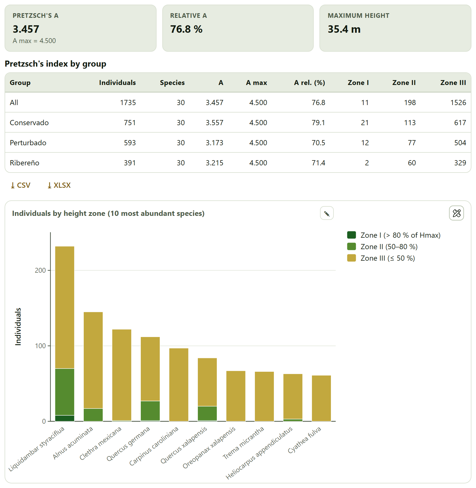
Figure 6.6. The cloud forest: A = 3.457 out of a maximum of 4.500, relative A of 76.8% and maximum height of 35.4 m. Only 11 individuals reach zone I; most species live in zone III, and only Liquidambar styraciflua has visible individuals in all three zones.
θTheory in brief · Pretzsch’s index
A = −ΣΣ pij ln pij, with pij the share of individuals of species i in zone j, is a Shannon index of species by stories (Pretzsch 1996, 2009). Its maximum, Amax = ln(3S), corresponds to all species spread equally among the three stories, and Arel = 100·A/Amax. The strata from the mean and standard deviation (Souza et al. 2003) place the lower stratum below the mean − 1 SD and the upper one above the mean + 1 SD; in the example, below 5.5 m (195 individuals) and from 16.2 m (265).
Each group uses its own maximum height, so the zones of a group are not those of the whole set: that is why the conserved stratum has 21 individuals in its zone I although the whole set has only 11. The interpretation calls the vertical structure complex if relative A exceeds 70%, and simple otherwise; in the example, 77%.
!One very tall tree squashes the zones
The zones are measured against the maximum height, and a single emergent (or a data-entry error) shifts them all downward. In the cloud forest example, the maximum height of 35.4 m leaves only 1% of the individuals in zone I. Check the maximum height before interpreting the index, and always compare with the strata from the mean, which depend less on a single tree.
6.6Spatial pattern of the trees
With the coordinates of every stem in a rectangular plot, the card tells you whether the trees are clustered, randomly distributed or regularly spaced, and at what distances. At least 10 trees are needed.
The data card asks for x (m) * and y (m) * of each stem, measured from one corner of the plot, and, if you have them, Species, DBH (cm) (for the size of the points on the map) and Group (storey, cohort…). The controls are above: Plot width (m) and Plot length (m) (50 and 50), Maximum distance for K (m) (12), Simulations for the envelope (99; the app accepts 19 to 999) and Trees, which selects All or one group. Trees that fall outside the rectangle are not used, and a warning says how many there are.
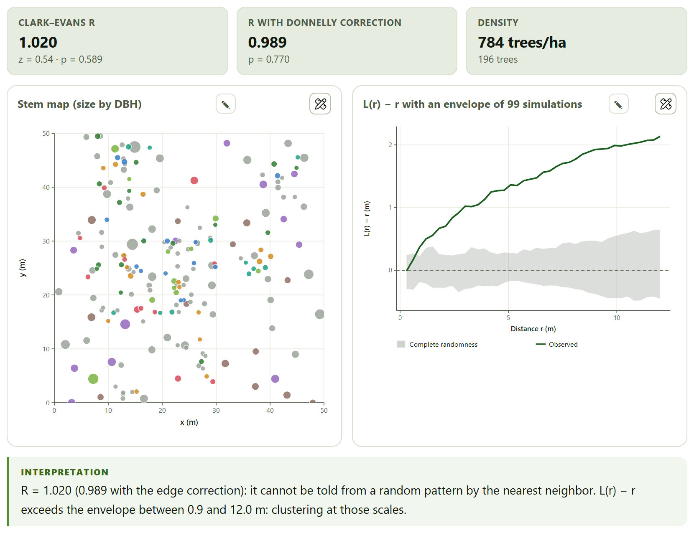
Figure 6.7. The 196 stems of the mapped plot (784 trees/ha). Clark–Evans gives R = 1.020 (0.989 with Donnelly’s correction, p = 0.770): by the nearest neighbor it cannot be told from random. But L(r) − r exceeds the envelope between 0.9 and 12.0 m: there is clustering at those scales.
The tiles give Clark–Evans R with its z and p, R with Donnelly correction with its p, and the Density. On the left is the Stem map (size by DBH), colored by species; on the right, L(r) − r with an envelope of 99 simulations: the line is what was observed and the gray band, what randomness would give with the same number of trees.
iThe envelope is not a formal test
With 99 simulations, the band is the minimum and maximum of L(r) − r under randomness at each distance. The curve leaving it at some distance is not equivalent to a test at 1%, because many distances are examined at once; take it as a guide to the scales at which there is structure, and confirm with the Clark–Evans index and with what you know about the stand.
▸Worked example · two patterns that cancel out
How can one index say “random” and another “clustered”? Choose each story separately in Trees. The canopy (70 trees) gives R = 1.504 (1.427 corrected, p < 0.001): trees more regularly spaced than at random, with L(r) − r below the envelope between 1.5 and 6.0 m, the signature of competition among crowns. The understory (126 trees) gives R = 0.616 (0.593 corrected, p < 0.001): clustered, with L(r) − r above the envelope from 0.9 to 12.0 m. Together, the regularity of one and the clustering of the other leave Clark–Evans near 1, while Ripley’s K, which looks at all distances at once, still sees the clumps of the understory.
θTheory in brief · nearest neighbor and Ripley’s K
Clark and Evans (1954) compare the mean nearest-neighbor distance with the one expected under complete spatial randomness, 1/(2√λ): R < 1 is clustering and R > 1, regularity. Near the edge neighbors are lost, and Donnelly’s (1978) correction adds (0.0514 + 0.0412/√n)·P/n to the expected distance (P = perimeter). Ripley’s (1977) K counts the neighbors within r of each tree, with the translation correction (Ohser 1983); L(r) = √(K/π) equals r under randomness, so L(r) − r above the envelope is clustering at that scale and below it, regularity (Baddeley et al. 2015).
The interpretation uses the corrected R: with p < 0.05 it says whether the trees are more clustered or more regularly spaced than at random, and then gives the distance ranges at which L(r) − r leaves the envelope from above (clustering) or from below (regularity or competition).
✕When something goes wrong
The matrix has too many species. The same name written in two ways (“Quercus sp.” and “Quercus sp”) makes two columns. Check the list of species in the matrix before reading the indices.
Abundances come out doubled. If the table has one row per individual and an abundance column, each row is worth what that column says. Match the abundance only if each row summarizes several individuals.
“At least 3 sites are needed.” in the similarity, or “The vertical structure needs the height of the individuals.”: the community has fewer than three sites, or the height was not matched (or there are fewer than 10 heights).
There are no curves by group. The Hill and rarefaction curves and the rows by group only appear with 2 to 8 groups.
Many trees “fall outside the rectangle.” The width and length do not match the plot, or the coordinates have their origin at the center: they must run from 0 to the width and from 0 to the length.
✓Decision rule
If the sample coverage exceeds 95% and Chao1 barely exceeds the observed richness
then the inventory recorded almost all species; the observed richness is reliable.
If the coverage is low or the accumulation is still rising
then species are missing: report Chao1 or the asymptotic richness alongside the observed one, and compare sites by rarefaction.
If J exceeds 0.8
then the community is even; otherwise a few species dominate (see it in the Hill profile).
If the dissimilarity between groups exceeds that within groups by more than 15%
then the groups have different compositions.
If the NMDS stress exceeds 0.20
then the ordination is a poor representation: read the dendrogram or try another index.
If Pretzsch’s relative A exceeds 70%
then the vertical structure is complex: species occupy several stories.
If the corrected R is below 1 with p < 0.05 (or above 1)
then the trees are clustered (or regularly spaced); the L(r) − r curve tells at what distances.
These are guides for interpretation, not laws: plot size, the minimum diameter inventoried and the history of the stand change what the indices can tell.
7
Chapter seven · Block 7
Agroforestry systems
On a coffee farm the trees are not the harvest, but they decide much of it: they give shade, store carbon and sustain diversity. This block measures the shade—by counting the trees of the inventory or with a photograph of the canopy—, looks for the shade at which the crop yields most, draws the layout of a new planting and compares the carbon of the system with that of a full-sun monoculture.
7.1Shade from the inventory
7.2Shade from a photograph of the canopy
7.3Shade and crop yield
7.4Planting layout
7.5Carbon budget of the system
Open the block with Block 7›Agroforestry systems. Its line on screen reads “Shade of coffee farms (by inventory or by hemispherical photograph), shade and yield, planting layouts and carbon budget.” It is designed for coffee and other shaded crops, and its five cards are independent: each has its own example button. The Open in Agroforestry button of the coffee farm on the home page (Section I.7) fills them all at once: it loads the coffee farm inventory in Block 3, computes the shade, reads the 25 plots of shade and yield, analyzes the synthetic photo and builds the carbon budget. The figures in this chapter are those of that example.
7.1Shade from the inventory
If the inventory has the crown diameter of each shade tree, the app computes for each plot the density, the basal area, the crown cover, the richness of shade species and a complexity index, and summarizes them by management type.
The card has no data card of its own: it reads the Block 3 inventory. Load the example coffee farm loads the coffee farm in Block 3 and comes back here; Use the Block 3 inventory takes the one already loaded. Live trees count, with the area of each plot according to its design, and the group of each plot (its stratum or its cluster) serves as the management type. If no tree has a crown diameter, the app warns that cover cannot be computed and suggests the photograph (Section 7.2).
Figure 7.1. The coffee farm example: on average, 278 shade trees per hectare, 17.5 m²/ha of basal area, 48% crown cover corrected for overlap, 7.5 shade species per plot and a Holdridge complexity of 6.9. Cover falls from 69.4% in the rustic management to 33.2% in the shaded monoculture.
The five tiles are plot averages. If there is more than one management type, the table By management type gives for each one the plots, trees per hectare, basal area, cover with its standard deviation, species and Holdridge index, sorted from most to least cover, and the chart Crown cover by management (mean ± SD) draws the mean cover of each management type with its standard deviation. Below, the table By plot also gives for each plot the sum of the crowns (Σ crowns (%)) and the mean height.
Table 7.1. The shade of the coffee farm example by management type
Management
Plots
Trees/ha
G (m²/ha)
Cover (%)
Species
CI
rustic
5
452
31.4
69.4
9.4
20.4
traditional polyculture
5
334
18.4
52.8
8.6
6.5
commercial polyculture
10
226
13.9
42.1
7.8
3.3
shaded monoculture
5
150
9.7
33.2
3.8
0.8
θTheory in brief · cover with overlap and complexity
Each crown takes up π·c²/4, with c its diameter. The sum of the crowns over the area of the plot can exceed 100% because crowns overlap: plot P14 adds up to 152%. If crowns are placed at random, the share of the ground under at least one crown is C = 1 − exp(−Σa/A) (Crookston and Stage 1999): with 152% of crowns, 78.0% of the ground is covered. The Holdridge complexity index (Holdridge et al. 1971) multiplies species × trees × basal area (m²) × mean height (m) / 1000, with trees and basal area scaled to 0.1 ha; it grows fast with structure, which is why it separates traditional from simplified managements so well (Moguel and Toledo 1999).
7.2Shade from a photograph of the canopy
When the inventory has no crowns, or to measure the shade at one point, a photo of the canopy taken from below is enough: the app separates sky from foliage and measures the openness.
Open a photo… reads an image from your computer (the photo does not leave it; if it is large, it is reduced to 640 pixels per side for the computation). Example photo (synthetic) draws a test hemispherical photo under a shade canopy. The controls are:
Kind of photo: Hemispherical (fisheye), taken with a fisheye lens toward the zenith, or Ordinary upward, a common photo.
Channel: Blue (recommended) or Luminance. In blue the sky is much brighter than the leaves, and they separate better.
Threshold (empty = Otsu): the gray level (0 to 255) that separates sky and canopy. Left empty, the app computes it.
Circle radius (% of the short side): the useful circle of the lens (100 by default); it only counts for the hemispherical photo.
Figure 7.2. The synthetic example photo: with Otsu’s threshold (132), the canopy cover is 51.6% (1 − weighted openness), the canopy openness 48.4% and the gap fraction 49.4%, over 138,536 pixels. On the right, the segmentation: sky in white, canopy in green and, in gray, what lies outside the circle.
The tiles give the Canopy cover, the Canopy openness (only with the hemispherical photo), the Gap fraction with the pixels counted, and the Threshold, with “Otsu” or “manual.” With the ordinary photo, cover is 1 − the sky fraction. Below come the Gray histogram and threshold and, for the hemispherical photo, the table Openness by zenith-angle rings, with the visible sky in 15° rings.
Figure 7.3. The histogram of the example photo has two well-separated peaks—the foliage between 20 and 45 and the sky between 225 and 245—and Otsu’s threshold falls between them. The visible sky goes from 87.4% near the zenith (0°–15°) to 33.1% between 45° and 60°.
θTheory in brief · gaps and openness
Otsu’s (1979) threshold is the one that maximizes the variance between the two classes of the histogram. In an equiangular lens, a pixel at distance ρ from the center of a circle of radius R looks at the zenith angle θ = 90°·ρ/R. The gap fraction counts all pixels equally; the canopy openness weights each one by the solid angle it stands for (sin θ/ρ), which in an equiangular lens decreases from the zenith to the horizon: a pixel next to the horizon is worth 0.64 of one next to the zenith (Jonckheere et al. 2004; Frazer et al. 1999). That is why the two differ: in the example, the 75°–90° ring, with 65.2% sky and 42,312 pixels, weighs less in the openness than in the gap fraction, and the openness (48.4%) falls below the gap fraction (49.4%).
!How to take the photo
Under an evenly overcast sky, at dawn or at dusk, without direct sun in the frame, at the same height above the ground (above the crop) and with the camera leveled. Always check the segmented image: if the sun or the bright sky between leaves is misclassified, type the threshold by hand. One photo describes one point; for the plot, average several.
7.3Shade and crop yield
At what shade does the crop yield most? The card fits the regression of yield on shade, linear and quadratic, picks the better one and, if the curve has a maximum, gives the shade of maximum yield with its interval.
The data card asks for Shade (%) * and Yield * of each plot, and optionally Plot and Group (management), which colors the points. At least 5 plots are needed. The example, Coffee farm: 25 plots, has the measured shade and the yield of parchment coffee (kg/ha) of each plot. The shade can come from Section 7.1, from the photos of Section 7.2 or from any other measurement.
Figure 7.4. The coffee farm example: the quadratic model wins (F of the quadratic term = 46.33, p < 0.001; R² of 0.872 against 0.602 for the linear one). Yield peaks at 38.8% shade (95% interval: 34.3 to 43.4%), where the curve estimates 1,109 kg/ha.
The tiles give the Model chosen, with the F test of the quadratic term; the Shade of maximum yield with its interval; the Estimated maximum yield; and the R² (quadratic) next to the linear one. The chart Yield against shade draws both curves—the quadratic with its 95% confidence band for the mean—and a vertical line at the shade of the maximum. The table Coefficients of the quadratic model gives b0, b1 and b2 with their standard error, t and p: in the example, b1 = 28.648 and b2 = −0.36872.
θTheory in brief · the optimum and its interval
Both regressions are fitted by ordinary least squares; the F test of the quadratic term and the AIC decide the model. If b₂ < 0, the parabola has a maximum at S* = −b₁/(2b₂): in the example, −28.648/(2 × −0.36872) = 38.8%. Its standard error comes from the delta method, with the gradient (−1/(2b₂), b₁/(2b₂²)) applied to the covariance of b₁ and b₂ (Weisberg 2014). The bell shape is the one observed on coffee farms: with little shade the coffee plant is stressed and with much shade it lacks light (Soto-Pinto et al. 2000).
The interpretation says the curvature is significant if the quadratic term has p < 0.05; otherwise it warns that “the data do not tell an optimum from a linear trend.” If the curve has no maximum (b₂ ≥ 0), it says so and gives no optimal shade.
7.4Planting layout
For a new planting: how many trees fit in a rectangular field with a given layout and spacing, how many per hectare, how much they cost and how they share the field with the crop.
The card reads no data; it draws the plan as soon as the block opens, with the default values, and redraws it with each change. Layout offers Square, Triangular, Rectangular, Alley cropping, Live fence (perimeter) and Boundary rows (two sides). The other fields are Field width (m) and Field length (m) (100 and 100), Spacing between trees (m) (6), Spacing between rows (m) (8, for the rectangle), Alley width (m) (12, for alleys), Crop: spacing (m) and Crop: between rows (m) (2 and 1.5) and Cost per tree planted (25, in whatever currency you use).
Figure 7.5. The default values: a 6 m square layout on one hectare. 256 trees fit (the theoretical density of an infinite layout would be 278), each with 39.1 m², with 3,300 crop plants at 2 × 1.5 m and a cost of 6,400.
The tiles give the Trees in the field (with the area in hectares), the Density per hectare with the theoretical one, the Area per tree, the Crop plants and, if there is a cost, the Cost of the trees. The plan is to scale: the trees in dark green and the crop in light green, on its own grid. The crop plants are counted over the whole field, as if the trees took no room from them.
Table 7.2. The six layouts on 1 ha, with 6 m between trees and the other default values
Layout
Trees
Theoretical (trees/ha)
m² per tree
Cost
Square
256
278
39.1
6,400
Triangular
304
321
32.9
7,600
Rectangular (6 × 8 m)
192
208
52.1
4,800
Alley cropping (12 m)
128
139
78.1
3,200
Live fence (perimeter)
66
—
151.5
1,650
Boundary rows (two sides)
32
—
312.5
800
θTheory in brief · actual and theoretical density
The positions are generated inside the field leaving half a spacing at the edges, so fewer trees fit in a finite field than in the infinite layout. The theoretical density is 10,000/a² for the square, 10,000/(a·b) for the rectangle, 10,000/(a²·√3/2) for the triangular layout—15.5% more trees than the square at the same spacing—and 10,000/(a·width) for alleys. The live fence puts a tree every a meters along the perimeter and the boundary rows, along the two long sides (Nair 1993; Evans and Turnbull 2004).
iThe plan counts as a result once you change it
The initial plan, with the default values, does not mark the block as done and does not enter the Block 10 report as a result of its own; as soon as you change a field, it does.
7.5Carbon budget of the system
How much carbon does the shaded coffee farm hold against a full-sun monoculture? The card adds up that of the shade trees, the coffee bushes, the litter and the soil of the coffee farm example and compares it with an assumed monoculture.
The card works with the tables of the coffee farm example, not with your own data: Compute with the example coffee farm runs the computation, and afterwards each change in the fields repeats it. The fields are Coffee bushes per hectare (system) (left empty, the app enters the mean density of the example plots, 3447), Coffee bushes per hectare (monoculture) (5000), Soil carbon of the monoculture (Mg C/ha) (60), Litter of the monoculture (Mg/ha) (3), Carbon fraction (0.47) and Root:shoot of the crop (0.27).
Figure 7.6. The coffee farm example holds 139.8 Mg C/ha and the assumed monoculture 65.6 Mg C/ha: a difference of +74.2 Mg C/ha, or 272.0 Mg CO₂e/ha. A coffee bush weighs 1.41 kg on average.
Table 7.3. The carbon budget of the example (Mg C/ha), as the app’s table gives it
Pool
Shaded
Monoculture
Difference
Shade trees (aboveground)
36.2
0.0
36.2
Shade trees (roots)
9.8
0.0
9.8
Coffee bushes
2.9
4.2
−1.3
Litter
3.5
1.4
2.1
Soil (0–30 cm)
87.5
60.0
27.5
Total
139.8
65.6
74.2
θTheory in brief · where each pool comes from
The aboveground biomass of the shade trees comes from the equations of Segura et al. (2006) for Inga and Cordia, from van Noordwijk et al. (2002) for banana and from Chave et al. (2014) with wood density for the other species; the roots, from the IPCC (2006) ratio for tropical mountains (0.27). The coffee bushes use the equation of Segura et al. (2006) with the diameter at 15 cm and the height, multiplied by the planting density and by 1 + root:shoot. Litter and soil (0–30 cm) come from the tables of the example. Carbon is biomass times the carbon fraction, and CO₂e, carbon times 44/12. Comparisons like this are the ones made on the coffee farms of Chiapas (Soto-Pinto et al. 2010).
!The monoculture is an assumption, not a measurement
The monoculture uses the mean biomass of the example coffee bushes at its own density and the soil and litter values you type. The difference of 74.2 Mg C/ha depends on them: with another soil carbon for the monoculture, it changes by the same amount. Replace them with measurements of a full-sun coffee farm in the same area before reporting the difference as additional carbon.
The interpretation says how much more the shaded coffee farm holds and in which pools most of the difference lies: in the shade trees and, if the soil of the coffee farm exceeds the assumed one, also in the soil.
✓Decision rule
If the inventory has the crown diameter
then use the cover corrected for overlap, not the sum of the crowns, as the shade of the plot.
If there are no measured crowns
then measure the shade with photos of the canopy: several per plot, at the same height and under an overcast sky.
If the segmentation misclassifies bright sky or the sun
then type the threshold by hand instead of using Otsu’s.
If the quadratic term is significant and b₂ < 0
then there is an optimal shade: report S* with its interval, not only the point value.
If the quadratic term is not significant
then the data do not tell an optimum from a linear trend; do not recommend a shade level with them.
If you are going to report the additional carbon of the system
then replace the monoculture assumptions with local measurements.
These are guides for interpretation, not laws: the crop, the elevation and the management change the optimal shade and the carbon of each pool.
✕When something goes wrong
“Load an inventory in Block 3 or the example coffee farm.”: there is no inventory loaded; use Load the example coffee farm or load yours in Block 3.
Cover cannot be computed. The inventory has no crown diameter: match it in the tree card of Block 3, or use the photograph.
The cover from the photo makes no sense. Check the kind of photo (an ordinary photo treated as hemispherical loses its corners) and the circle radius, which must match the circle of the lens.
“At least 5 plots are needed.” in shade and yield, or the shade of the maximum does not appear: there are fewer than five plots with both values, or the curve has no maximum within the data.
The budget does not appear. It is computed only after you press Compute with the example coffee farm.
8
Chapter eight · Block 8
Maps and light geoprocessing
Every inventory has a place. This block puts the plots and trees on the map, measures the area of the polygons of the property, lays out the grid of points for a new inventory, takes it to the GPS receiver and makes a continuous map of a variable measured in the plots. Everything is computed on your computer; the online map background is optional and comes switched off.
8.1The map
8.2Polygons and areas
8.3Sampling grid
8.4Export
8.5Interpolation among plots
Open the block with Block 8›Maps; its title on screen is Maps and light geoprocessing, with the line “Plots and trees on the map, polygon areas, sampling grid, GPX/KML/GeoJSON export and interpolation.” The five cards share the same layers: what you load, import or draw in one appears on the map and in the others. The main example is the cloud forest (Open in Maps on the home page, Section I.7): its 24 plots with coordinates and the polygon of the property, with 9 vertices. The interpolation also uses the 25 plots of the coffee farm.
8.1The map
A map of the app’s own, which pans and zooms like web maps, with the plots drawn at their true radius and the trees in their place. Below it there is a static copy in UTM coordinates, the one that goes into the report.
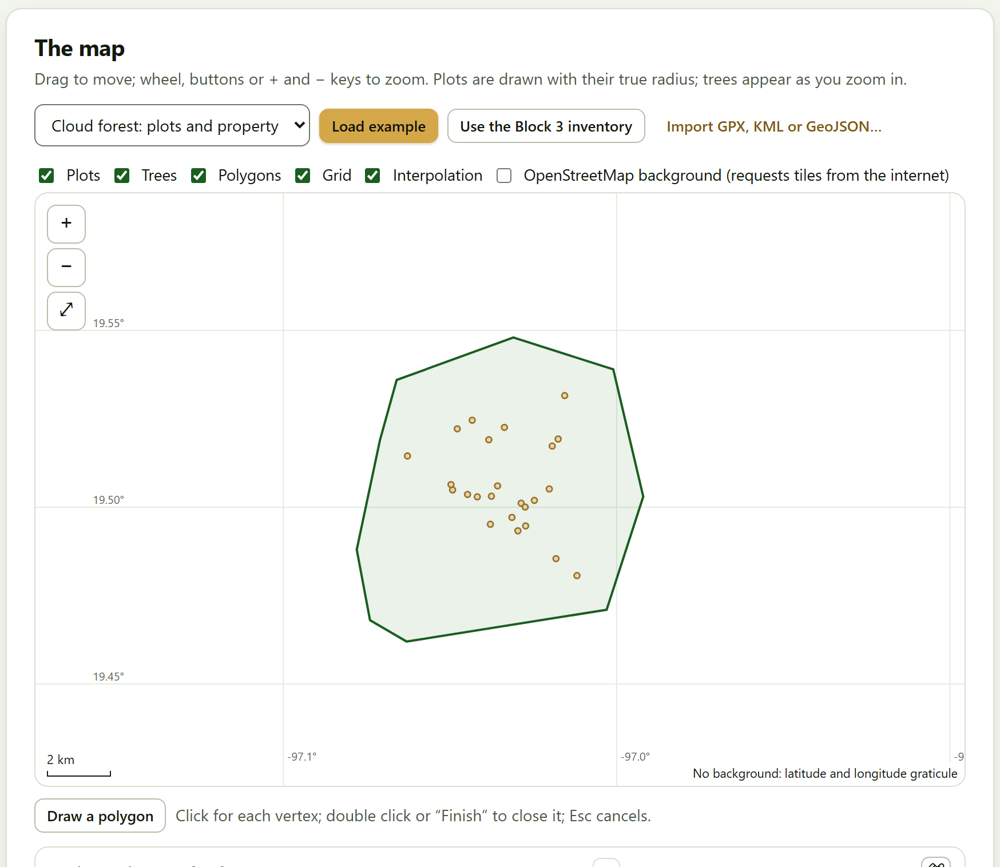
12345678
Figure 8.1. The map with the cloud forest example: the property (in green) and the 24 plots, without an online background, over the latitude and longitude graticule. The plots, 17.84 m in radius, are barely circles at the zoom level of the whole property.
1The example. The list chooses between Cloud forest: plots and property and Coffee farm: plots of 5 farms; Load example loads it in Block 3 and brings its plots here (and the property, for the cloud forest).
2Use the Block 3 inventory. Takes the plots of the loaded inventory, if they have latitude and longitude, with their radius and stratum, and the trees that have x and y.
3Import GPX, KML or GeoJSON… Adds the polygons and points of a file; a message says how many were imported.
4The layers.Plots, Trees, Polygons, Grid and Interpolation are switched on and off separately.
5OpenStreetMap background (requests tiles from the internet). Off by default. When on, the browser requests the tiles of the visible area; your data are not sent.
6The map buttons. + and − zoom in and out; ⤢ fits the map to the data.
7The scale and, on the right, the background note: with no background, “No background: latitude and longitude graticule.”
8Draw a polygon. One click per vertex; a double click or Finish the polygon closes it and Esc cancels it.
The map pans by dragging and zooms with the wheel, the buttons or the + and − keys; the arrows move it. Plots are circles at their true radius; those without a radius (imported points) are drawn as points. Trees appear as you zoom in, from zoom level 15, with a size according to their DBH: the app places them by adding their local coordinates (x to the east, y to the north, in meters) to the center of their plot in UTM.
!With no background, nothing leaves your computer
With the background off, the map is a latitude and longitude graticule drawn by the app, and no data leave your computer. With the background on, the browser requests the images of the visible area from the OpenStreetMap servers, whose data are licensed under the ODbL and carry the attribution in the corner of the map; the coordinates of your plots are not sent, but the server does know which area you are looking at. If you opened the app with a double click, some servers may refuse the tiles; online it works.
Below the map, the Static map in UTM (for the report) repeats the polygons, the plots (colored by stratum if there is more than one), the grid and the interpolated surface in the UTM zone of the center of the data, with a north arrow and a scale. It is the figure that goes into the Block 10 report and the figure studio.
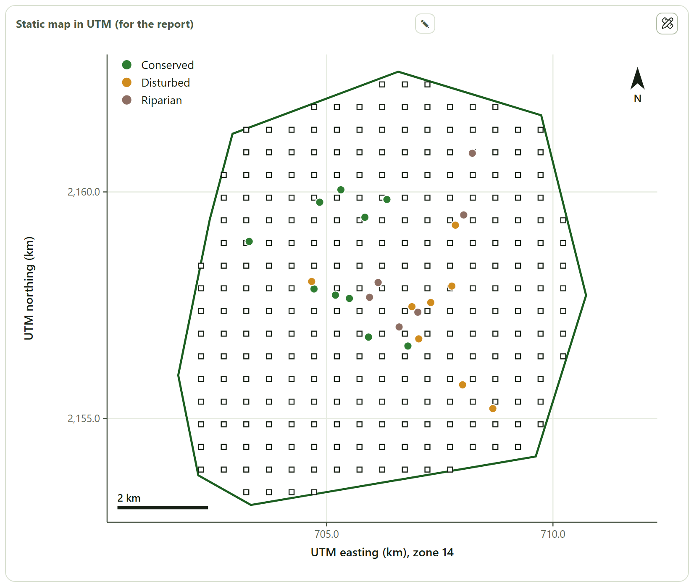
Figure 8.2. The static map of the cloud forest in UTM zone 14, with the plots by stratum and the 500 m systematic grid of Section 8.3 (the squares).
θTheory in brief · two projections
The interactive map uses the spherical Mercator projection at integer zoom levels, that of web maps; it distorts distances and areas with latitude, and it is for viewing. Measurements are made in UTM (transverse Mercator), which within its zone keeps distances with an error of less than 0.04% (Snyder 1987; Karney 2011). That is why the static map, the areas, the grid and the interpolation work in UTM meters.
8.2Polygons and areas
The area and perimeter of each polygon—the property, the stands, the harvest areas—computed in two ways: in the UTM zone of its center and on the sphere.
The data card asks for the vertices of each polygon in order: Polygon * (the name, which groups the vertices), Latitude * and Longitude *, in decimal degrees. A polygon needs at least three vertices; there is no need to repeat the first one at the end. The example is the Cloud forest property (9 vertices). The polygons imported and those drawn on the map also reach the Polygons table; Remove the last polygon undoes the last one.
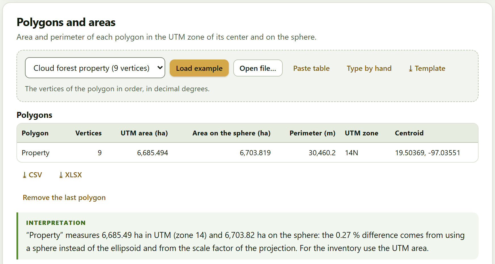
Figure 8.3. The property of the cloud forest example: 9 vertices, 6,685.494 ha in UTM and 6,703.819 ha on the sphere, a perimeter of 30,460.2 m, zone 14N and the centroid at 19.50369, −97.03551.
The interpretation compares the two areas—in the example they differ by 0.27%—and recommends using the UTM area for the inventory: it is the one used in cadastre and the one that matches the distances measured in the field.
θTheory in brief · two areas
The UTM area comes from the surveyor’s formula (Gauss) on the plane coordinates of the zone of the polygon’s center, with straight sides on the plane; it includes the scale factor of the projection (≤ 0.04% within the zone). The area on the sphere adds spherical triangles from the first vertex with L’Huilier’s theorem (Todhunter 1886), with great-circle sides and a mean radius of 6,371,008.8 m; it differs from that of the ellipsoid by a few tenths of a percent depending on latitude.
8.3Sampling grid
The plot centers of a new inventory: a systematic grid or random points inside a polygon, with their geographic and UTM coordinates, ready for the GPS.
The controls are Polygon (any of those loaded), Design (Systematic (grid) or Random), Spacing between points (m) (500) and Rotation (°) (0) for the grid, Random points (30) for the random design, Plot radius (m) (17.84, that of 1,000 m²) to compute the sampling intensity, and the Random start of the grid check box. Generate the points computes them and puts them on the map.
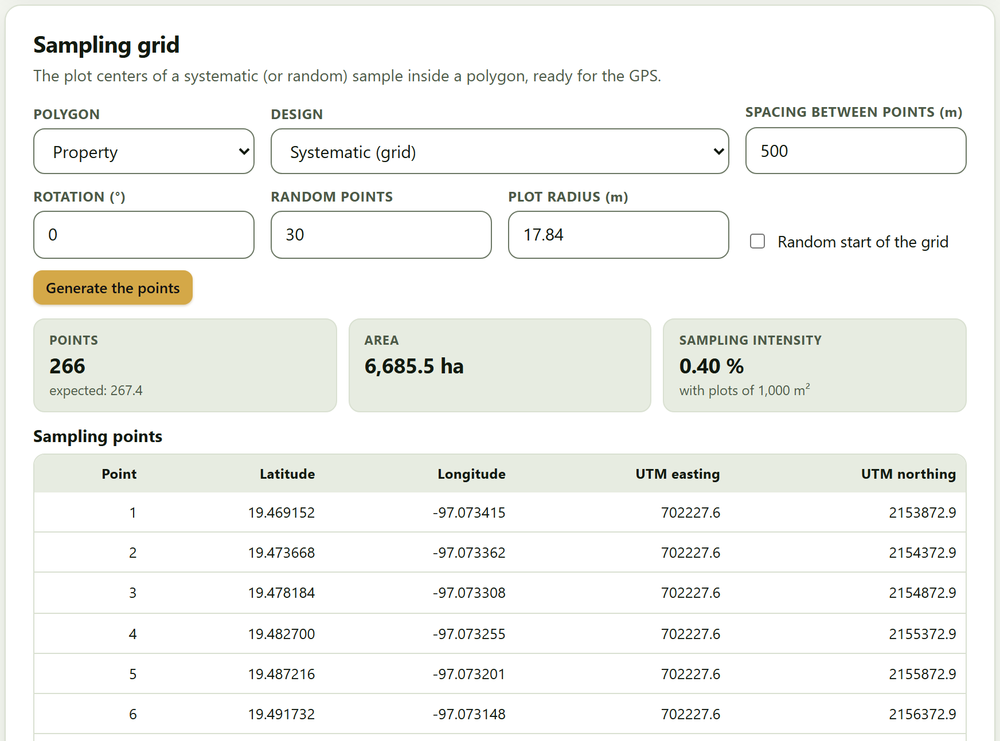
Figure 8.4. A 500 m systematic grid on the cloud forest property: 266 points (267.4 were expected) on 6,685.5 ha. With 1,000 m² plots, the sampling intensity is 0.40%.
The tiles give the Points (with those expected, for the grid), the Area of the polygon and the Sampling intensity: the area of the plots over that of the polygon. The Sampling points table shows the first 25—number, latitude, longitude, UTM easting and northing—and its downloads carry all of them; the ⤓ GPX, ⤓ KML and ⤓ GeoJSON buttons of this card export only the grid (forestpro_grid.gpx…), with the points named G1, G2…
θTheory in brief · the grid and its start
The grid is built in UTM with the chosen spacing and rotation and keeps the points inside the polygon (ray test); the expected number is the area over the spacing squared: in the example, about 66,855,000 m² over 250,000 m², 267.4 points. Without a random start, the grid begins half a cell from the origin and always comes out the same. With Random start of the grid, the origin is drawn within one cell, so that every point of the property has the same chance of falling in the sample, the condition for treating the grid as a probability sample (Gregoire and Valentine 2008). The random design draws uniform points inside the polygon: with the 30 by default, the intensity drops to 0.04%.
iThe draw changes every time
With a random start or with the random design, each click on Generate the points gives a different draw. Download the points you are going to use and keep them with the Block 10 project: you will not be able to generate them again identically.
8.4Export
The map layers in the formats read by GPS receivers, virtual globes and mapping programs.
The four buttons—⤓ GPX, ⤓ KML, ⤓ GeoJSON and ⤓ CSV—download in a single file (forestpro_map.gpx, .kml, .geojson or .csv) the loaded plots, the grid points and the polygons. Each plot carries its name, its stratum and, if it has them, its basal area and density; each grid point, its UTM coordinates. The CSV has the columns name, lat, lon and description, and does not carry the polygons. If nothing is loaded, a message says so.
Format
What for
GPX
Handheld GPS receivers: the plots and the grid as waypoints to navigate to them; the polygons, as closed tracks.
KML
Virtual globes and many mapping programs.
GeoJSON
Any geographic information system; it keeps the attributes of each point.
CSV
A spreadsheet with the points, or the data card of another section.
8.5Interpolation among plots
A continuous map of a variable measured in the plots—basal area, carbon, yield, shade—by inverse distance or by kriging, with the variogram that tells whether the variable has spatial structure and the cross-validation that tells which method predicts better.
The data come from two sources. If the plots on the map come from the inventory, Variable offers theirs: Basal area (m²/ha), Density (trees/ha), Volume (m³/ha) and, if they were computed in Block 4 before bringing in the inventory, Aboveground biomass (Mg/ha) and Carbon (Mg C/ha). Or else the data card of this section reads a table of your own with Latitude *, Longitude *, Value * and Name; its two examples are the yield of parchment coffee (kg/ha) and the shade (%) of the 25 plots of the coffee farm, and when they are loaded the points replace the map layers.
The controls are Method (Ordinary kriging, Simple kriging or Inverse distance (IDW)), Variogram model (Spherical, Exponential or Gaussian), IDW power (2), Variogram cutoff (m, empty = automatic), Cells on the long side (60; from 10 to 200) and Clip to the first polygon. Interpolate runs the computation; at least 5 points with a value are needed.
The tiles give the Points and the method, the Range of the map and two cross-validations, each with its root mean square error (RMSE) and its mean error: Cross-validation: ordinary kriging (or Cross-validation: simple kriging, if that kriging was chosen; with IDW chosen, the ordinary one) and Cross-validation: IDW. Both are always computed, so they can be compared. Then come the chart Experimental variogram and fitted model (the size of each point according to the pairs of plots that form it) and the Variogram model table, with the nugget, the partial sill, the range, the nugget proportion and the cutoff with the width of the lag classes. The surface is painted on the interactive map (Interpolation layer) and on the static map, with its color scale.
θTheory in brief · variogram, kriging and inverse distance
Everything is computed in UTM meters. The experimental variogram (Matheron 1963), γ(h) = Σ(zi − zj)²/(2N(h)), averages the squared differences between plots separated by distance h, by default up to a third of the diagonal of the data in 15 classes. A spherical, exponential or Gaussian model is fitted to it by weighted least squares with weights Nj/hj² (Cressie 1985): the nugget c₀ is the variation at zero distance (error and very short-range variation), the sill c₀ + c₁, the total variation, and the range, the distance at which plots stop resembling each other (in the exponential the practical range is 3a, and in the Gaussian √3·a). Ordinary kriging predicts each cell with the weights that minimize the error variance with an unknown mean; simple kriging, with the mean of the data (Isaaks and Srivastava 1989). IDW (Shepard 1968) averages the values with weights 1/dp, without a model. Cross-validation leaves out each plot, predicts it from the others and summarizes the errors.
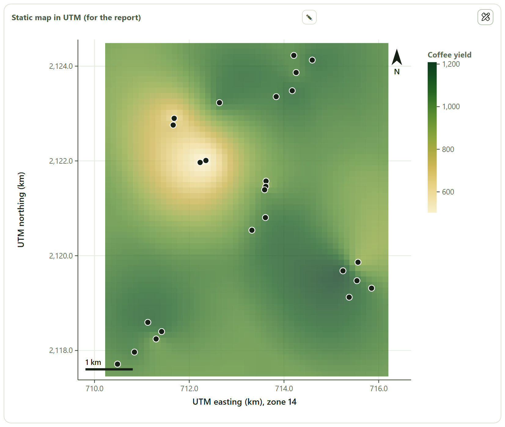
Figure 8.5. The yield surface of the coffee farm example on the static map. The lowest yield (light colors) surrounds the northwestern plots, and the highest (dark green) lie to the north and southeast.
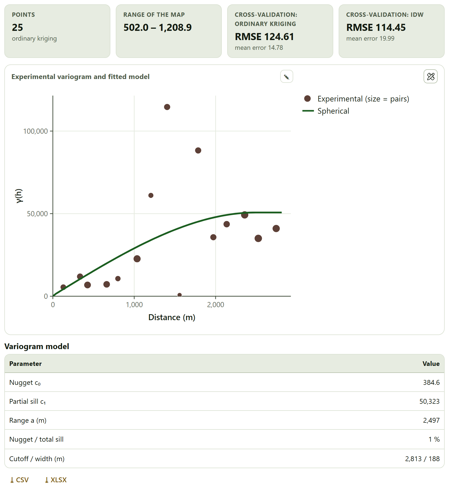
Figure 8.6. The yield of the coffee farm example by ordinary kriging with a spherical model: 25 points, a map from 502.0 to 1,208.9 kg/ha, a nugget of 384.6 with a partial sill of 50,323 (nugget / total sill = 1%) and a range of 2,497 m. In cross-validation, kriging gives an RMSE of 124.61 and IDW 114.45.
▸Worked example · three variables, three variograms
The coffee farm yield (Figure 8.6) has clear spatial dependence—a nugget of 1% of the sill—up to about 2,497 m: the farms differ from one another. Even so, IDW predicts somewhat better than kriging in cross-validation (RMSE 114.45 against 124.61), and the app says so. The coffee farm shade gives a nugget of 29% of the sill, a range of 3,425 m and a kriging barely better than IDW (RMSE 10.29 against 10.44). The basal area of the cloud forest, in contrast, gives a range of 3 m—smaller than the first lag class—and a nugget of 80%: the app warns that “the variogram shows no spatial dependence at the distances analyzed (pure nugget effect),” and kriging predicts the mean, 37.2 m²/ha, over the whole map.
The interpretation compares the RMSE of the two methods; reads the nugget proportion—if it exceeds 60%, “most of the variation is short-range or error,” otherwise “there is clear spatial dependence” up to the practical range—; and closes by reminding you that with few plots the map serves to locate zones, not to read point values. The pure nugget effect is declared when the range is smaller than the first lag class of the variogram or the partial sill is less than 5% of the total sill.
iClip to the polygon
With Clip to the first polygon checked (the default) and a polygon loaded, the surface is computed only inside it, and the grid of cells covers the polygon instead of the rectangle of the points. Loading one of the examples of the card removes the previous polygons, so the coffee farm is interpolated over the rectangle of its plots.
✓Decision rule
If you need the area of the property for the inventory
then use the UTM area, not the one on the sphere nor the one a Mercator map gives.
If the grid is to be a probability sample
then check Random start of the grid and keep the points generated.
If the nugget proportion is low and the range exceeds the distance between neighboring plots
then there is spatial structure: kriging makes sense.
If the nugget exceeds 60% or the app warns of a pure nugget effect
then the variable has no structure at that scale: the interpolated map adds no information to the mean.
If IDW gives a lower RMSE than kriging
then prefer IDW, or try another model or variogram cutoff.
These are guides for interpretation, not laws: with 25 plots a variogram is a rough approximation, and the location of the plots weighs as much as the method.
✕When something goes wrong
“The plots of the inventory have no latitude and longitude.”: the Block 3 inventory has no plot coordinates. Match them in its plot card, in decimal degrees (longitude in Mexico is negative).
The trees do not appear. They are only visible from zoom level 15, and only those that have x and y in the inventory.
The polygon comes out crossed or with an absurd area. The vertices are not in order around the polygon, or latitude and longitude are swapped.
“First load, import or draw a polygon.” in the grid, or “The variogram could not be fitted; use IDW or change the cutoff.” in the interpolation: the polygon is missing, or there are too few pairs of plots in the lag classes of the variogram.
The online background does not load. Some servers refuse tiles to a page opened with a double click; open the app online or work without a background.
9
Chapter nine · Block 9
Forestry tools
The everyday sums in the forest and the sawmill: how much wood a load of logs holds in cubic meters and in board feet, how much came out as boards and studs, what part of the log went into sawdust, what form factor a stem has, how to take a figure from imperial to metric units, and whether a plantation pays for what it costs. Each section works on its own, with your numbers or with its example; the yield section takes its numbers from the first two.
9.1Log scaling
9.2Sawn lumber
9.3Sawmill yield
9.4Form factor
9.5Unit conversion
9.6Cost and profitability of a plantation
This block does not use the data card of the other blocks (Section I.6): its data are few and go into editable tables, with one row per log, per kind of piece or per money item. Each row has its × button to remove it and, below the table, + Add row. Cells are filled one by one: these tables read neither files nor pasted blocks. Results appear when you press the button of each section (Scale, Tally, Compute the yield, Compute, Evaluate); the unit conversion answers by itself as you type.
The pine plantation example opens the four sections that have it already computed: from Home›Example data, the Open in Utilities button of the pine card loads the 12 logs, the lumber sawn from them and the 25-year plantation cash flow, and computes the yield. Every figure in this chapter comes from that example, which is simulated.
9.1Log scaling
A log is measured in the yard with a tape and a caliper: its length and the diameters of its ends. With that, the section gives its volume in cubic meters by four formulas and the sawn lumber expected from it, in board feet, by the three log rules most used in the timber trade.
At the top are Load example: 12 pine logs, Empty table (leaves a single blank row) and the Volume under bark checkbox. The table asks, per log:
Column
What goes in it
Log
A name or a code (T01, T02…).
Length (m)
The length of the log, in meters. Required.
Small-end D (cm) · Large-end D (cm)
The diameters of the two ends, over bark, in centimeters. Required.
Middle D (cm)
The diameter at mid-length, if you measured it; without it there is no Huber or Newton.
Bark (mm)
The bark thickness, on one side, in millimeters.
The note under the table sums it up: “Length in meters; diameters over bark in centimeters (small end, large end and, if you have it, the middle); bark thickness in millimeters, on one side.” A row without a length or without one of the two end diameters is not scaled.
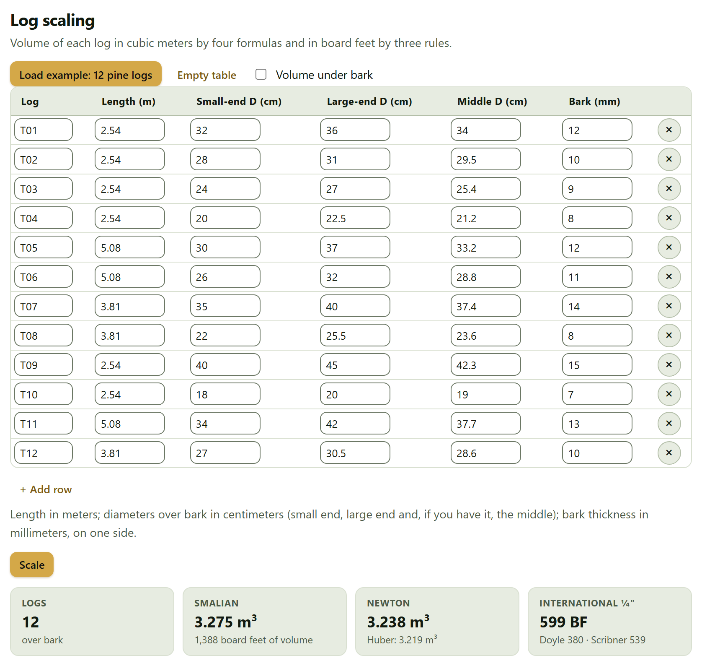
Figure 9.1. The 12 example pine logs, 2.54 to 5.08 m long and 18 to 45 cm in diameter. The tiles: 12 logs over bark; 3.275 m³ by Smalian (1,388 board feet of volume); 3.238 m³ by Newton and 3.219 by Huber; 599 board feet by the International ¼″ rule, 380 by Doyle and 539 by Scribner.
θTheory in brief · volume and board feet are not the same
The four volume formulas treat the log as a solid. With the area of each section g = πd²/40,000 (m², d in cm) and the length L in m: Smalian averages the end areas, V = L(g₁ + g₂)/2; Huber uses the middle one, V = L·gm; Newton combines all three, V = L(g₁ + 4gm + g₂)/6, and is exact for the paraboloid, the cone and the neiloid; the frustum of a cone uses only the ends, V = πL(d₁² + d₁d₂ + d₂²)/120,000. Under bark, twice the bark thickness is subtracted from every diameter.
The log rules do not measure volume: they predict how much sawn lumber the log will yield, discounting sawdust and slabs beforehand. They use the small-end diameter inside bark, in inches (D), and the length in feet (L). Doyle: (D − 4)²L/16. Scribner, by Bruce’s formula: (0.79D² − 2D − 4)L/16. International ¼″: 4-foot sections, each half an inch wider than the one before, 0.22D² − 0.71D board feet per section and the 0.905 factor of the quarter-inch saw kerf; the last fraction counts in proportion to its length (Husch et al. 2003; Avery and Burkhart 2002; Bruce 1925; Clark 1906).
The Volume by log table gives, for each log and in total, the diameter inside bark in inches (D (in)) and the length in feet (L (ft)) the rules work with, the four volumes and the board feet of the three rules.
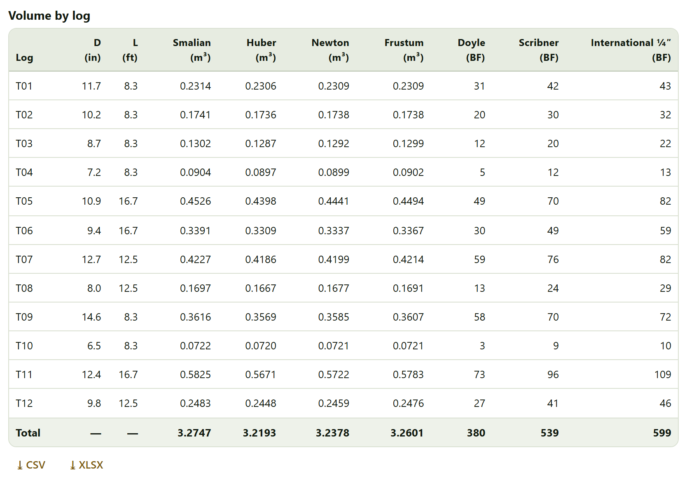
Figure 9.2. The volume of each log. In total: 3.2747 m³ by Smalian, 3.2193 by Huber, 3.2378 by Newton and 3.2601 by frustum; 380 board feet by Doyle, 539 by Scribner and 599 by International ¼″. Log T10, 6.5 inches inside bark, gives 3 board feet by Doyle and 10 by International.
With Volume under bark, the cubic-meter volumes are recomputed with the diameters minus the bark: the 12 logs drop to 2.828 m³ by Smalian, 2.793 by Newton and 2.775 by Huber. The board feet do not change (599, 380 and 539), because the rules always work with the diameter inside bark. If in some log the small end is thicker than the large end, the app warns: “In … logs the small end is thicker than the large end; check the order of the columns.”
!A cubic meter is not 424 board feet
A board foot is a volume (144 cubic inches), and 1 m³ equals 423.776 board feet: that is what the Smalian tile means by “1,388 board feet of volume.” But the board feet of a rule are sawn lumber, without sawdust or slabs: the same logs give 599 by International ¼″. Do not mix the two figures when you buy or sell timber; always state which rule you used.
The Board feet by log by rule figure puts the three rules side by side, log by log, and the interpretation sums up what the differences mean.
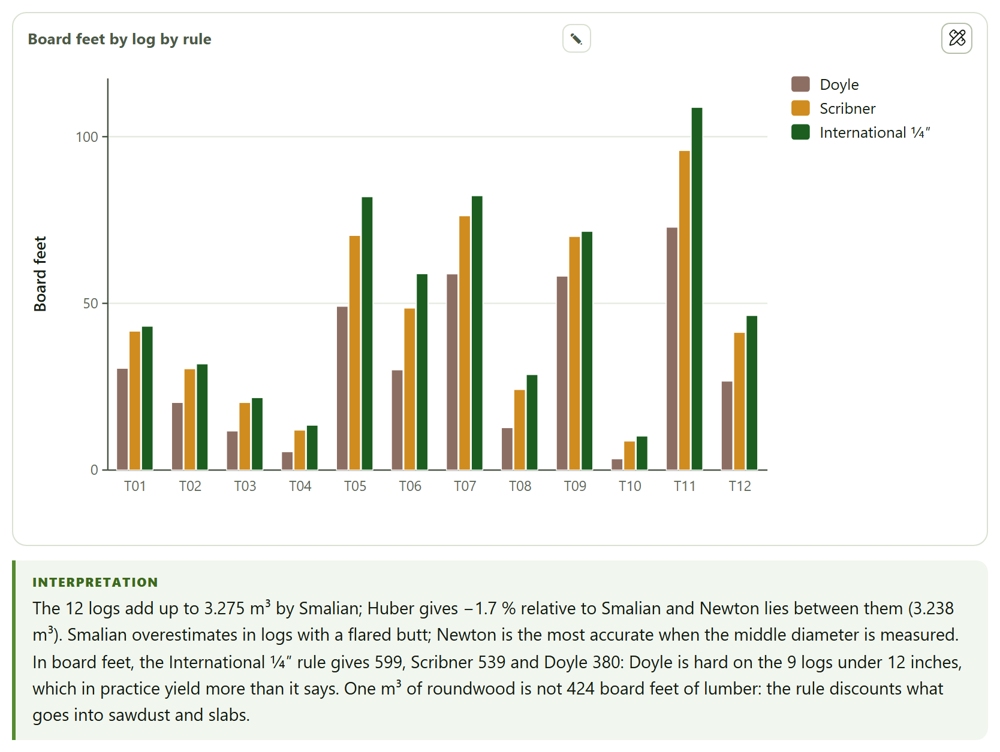
Figure 9.3. Doyle (bark brown) always stays below Scribner (amber) and International ¼″ (green), and more so in the small logs. The interpretation: Huber gives −1.7% relative to Smalian, Newton lies between them, and Doyle is hard on the 9 logs under 12 inches.
9.2Sawn lumber
The other end of the sawmill: what came out of the logs, counted by kind of piece. The section adds up the board feet and cubic meters of a list of pieces and says what share of the volume each kind is.
The Units menu chooses Inches and feet (thickness and width in inches, length in feet, with the nominal sizes used in the timber trade) or Centimeters and meters (thickness and width in centimeters, length in meters). The table asks for Piece (the name), Thickness, Width, Length and Pieces, the number of identical pieces (1 if left empty). Load example: the lumber from the 12 logs enters seven kinds of 8¼-foot pieces, and Tally does the sum.
A board foot is a piece of 1 inch × 12 inches × 1 foot, 2.359737216 dm³ (NIST 2008). So an 8¼-foot 1″ × 6″ board is 4.125 board feet, and the 50 of the example, 206.25. When you switch units, the table changes its column labels but does not convert the numbers you already typed.
Figure 9.4. The lumber from the 12 logs: 179 pieces, 722.9 board feet and 1.7059 m³. The 1″ × 6″ boards are 28.5% of the volume; the 4″ × 4″ post, 6.1%.
9.3Sawmill yield
How much sawn lumber comes out of the roundwood. It is the figure a sawmill measures, and the one that tells whether a log rule falls short for it.
Three fields: Roundwood (m³), Sawn lumber (m³) and Reference rule (board feet). “They fill themselves with the totals of the two sections above (Smalian and International ¼″); you may type others.” The rule is optional; without it there is no overrun.
Figure 9.5. From the 12 logs (3.2747 m³ by Smalian) came 1.7059 m³ of lumber: a lumber recovery of 52.1% (waste 47.9%), 221 board feet per cubic meter of roundwood and an overrun of 20.7% against the 599 board feet of the International ¼″ rule.
Lumber recovery = m³ sawn / m³ of roundwood. The rest is sawdust, slabs, trimmings and bark.
Board feet per m³ of roundwood: the same ratio in board feet (0.521 × 423.776 ≈ 221).
Overrun = board feet sawn / board feet of the rule − 1. Positive if the mill gets more than the rule predicts (Steele 1984).
The interpretation grades the recovery: below 45% it calls it low (“small or crooked logs, thick-kerf saws or a cutting pattern that wastes the log”), above 65% high (“typical of large straight logs or thin saws”), and in between, common for band or circular saw mills with medium logs. If more sawn lumber than roundwood comes out, the app flags it in red: “More sawn lumber than roundwood comes out: check the units or the data.”
9.4Form factor
The fraction of the cylinder (basal area × height) the stem fills. With it, the volume of a standing tree is estimated from its diameter and height when there is no volume equation for the species.
Four fields, with sample values: Diameter at breast height (cm) (32), Height (m) (24), Volume (m³) (0.85) and Form factor (empty). “Leave empty what you want to compute: the factor (from volume) or the volume (from factor).” Compute gives the factor, the volume and the reference cylinder, and the Reference solids table says what volume the tree would have with the shape of each solid.
Figure 9.6. A 32 cm, 24 m stem with 0.85 m³: its cylinder (g = 0.0804 m²) holds 1.9302 m³, so the form factor is 0.440, closer to the paraboloid (0.500) than to the cone (0.333).
f = V / (g · h), with g the basal area at 1.30 m
This is the artificial form factor, referred to breast height (Prodan et al. 1997). The reference solids, measured at their base, have f = 1 (cylinder), 1/2 (paraboloid), 1/3 (cone) and 1/4 (neiloid). In conifers it usually lies between 0.40 and 0.55. With a factor of 0.45 instead of the volume, the same tree would hold 0.8686 m³. The interpretation warns if the factor is above 1 (“points to an error in the volume or the sizes”) or below 0.3 (“rare in a commercial stem: check the volume”). If you have scaled trees, the volume equations of Block 2 (Chapter 2) are a better substitute for a fixed form factor.
9.5Unit conversion
From imperial to metric and back, with the exact definitions: what you need to read an inventory, a yield table or a log rule from another country.
Quantity chooses what is converted; Value and From, the number and its unit. The … equal table (“1 meter equals,” with the value 1) gives the value in each of the other units of that quantity, and is recomputed as you type:
kilograms, grams, metric tons (Mg), pounds, short tons, long tons
Basal area per area
m²/ha, ft²/acre
Volume per area
m³/ha, ft³/acre, board feet/acre, cords/acre
Biomass per area
Mg/ha (t/ha), kg/m², short tons/acre, pounds/acre
Carbon and CO₂
Mg C/ha, Mg CO₂e/ha
Density
kg/m³, g/cm³, lb/ft³
Trees per area
trees/ha, trees/acre, trees/m²
Figure 9.7. 250 m³/ha equal 3,572.83 ft³/acre, 42,874.02 board feet/acre and 27.9128 cords/acre. Below, 10 stacked m³ of firewood with a stacking factor of 0.65 are 6.50 m³ of solid wood.
The definitions are the exact ones: 1 inch = 2.54 cm, 1 foot = 0.3048 m, 1 acre = 4,046.8564224 m², 1 pound = 0.45359237 kg, 1 board foot = 144 cubic inches and 1 cord = 128 ft³ of stacked wood (NIST 2008). Per-area quantities combine the factor of the unit and that of the area: 120 ft²/acre of basal area are 27.5482 m²/ha. Carbon becomes CO₂ equivalent when multiplied by 44/12: 46 Mg C/ha are 168.67 Mg CO₂e/ha.
Stacked wood
Below the table, Stacked wood (stacked m³) and Stacking factor (solid/stacked) give the Solid wood. A stacked cubic meter is the space taken by piled firewood, gaps included; the stacking factor, the part that is wood. It depends on the diameter and straightness of the pieces: 0.6 to 0.7 is usual for firewood, and the app opens with 0.65.
9.6Cost and profitability of a plantation
A forest plantation spends almost everything at the start and earns almost everything at the end, twenty or thirty years later. To know whether it pays, every dollar has to be brought to the present with a discount rate. The section does that sum per hectare with the measures of forest economics.
Three fields: Discount rate (% per year) (8), Fixed annual cost (protection, management) (900), charged every year from 1 to the rotation, and Rotation (years; empty = last year of the flow). The table has one row per item: Year, Item, Cost and Revenue, per hectare and in the currency you use; “several rows may share a year.” Load example: pine at 25 years brings eleven items, from site preparation to the final harvest, and Evaluate does the sum.
Figure 9.8. The pine at 25 years at 8%: net present value of $3,956 per hectare, internal rate of return of 8.50%, benefit/cost ratio of 1.07, land expectation value of $4,632, equivalent annual annuity of $371 a year, establishment cost of $23,500 (years 0 and 1; $140,900 undiscounted over the whole rotation) and payback in year 25.
θTheory in brief · the seven figures
With the rate r and the net flow Nt = revenues − costs of year t: the net present value is NPV = Σ Nt/(1 + r)t; the benefit/cost ratio, the present value of revenues over that of costs; the internal rate of return (IRR), the rate that makes the NPV zero, searched between −90% and 200%; Faustmann’s (1849) land expectation value, LEV = NPV·(1 + r)T/((1 + r)T − 1), what the land is worth if the same rotation T is repeated forever; the equivalent annual annuity, NPV·r/(1 − (1 + r)−T), the NPV spread into equal yearly payments; and the payback, the first year in which the cumulative discounted flow stops being negative (Klemperer 1996; Bettinger et al. 2017). Everything is in real terms: use a rate without inflation and constant prices.
Below the tiles come two figures. Cash flow by year puts revenues upward and costs downward; Net present value by discount rate draws the NPV between 0 and 15%, with the chosen rate and the IRR, which is where the curve crosses zero.
Figure 9.9. Top, almost all the revenue arrives in year 25 ($300,000 from the final harvest), with two thinnings in years 12 and 18. Bottom, the NPV goes from about $216,000 undiscounted to negative values above the IRR of 8.50%; the chosen rate (8%) lies just before the crossing.
The Discounted cash flow table gives, by year, the costs (annual cost included), the revenues, the net, the discounted net and the cumulative discounted flow, which in the pine goes from −$30,227 in year 24 to $3,956 in year 25. It only shows the years with an item of their own (in the pine, 0, 1, 2, 3, 5, 8, 12, 18 and 25); its note says so: “Years with nothing but the annual cost are not shown; they are counted.”
▸Worked example · the same plantation with another rate and another rotation
With the rate at 10%, the pine stops paying: the NPV falls to −$9,333 per hectare, the benefit/cost ratio to 0.81, the land expectation value to −$10,282, and the payback says “not recovered”; the IRR stays at 8.50%, because it does not depend on the chosen rate. With the rate at 8% and the rotation at 18 years, the final harvest is left out (“1 item falls after the rotation and is not counted.”) and the NPV sinks to −$29,186: without the final harvest, the thinnings do not pay for the establishment.
!Compare rotations with the land value, not with the NPV
The NPV of a single rotation favors long rotations only because they occupy the land longer. To choose between a 20-year and a 25-year rotation, compare Faustmann’s land expectation value, which assumes the rotation is repeated forever. And since almost all the revenue comes at the end, the result is very sensitive to the rate and to the price of the final harvest: try several rates before deciding.
✓Decision rule · forestry tools
If you measured the mid-length diameter of the log
then use Newton (or Huber); without it, frustum or Smalian, knowing that Smalian overestimates in logs with a flared butt.
If you are going to buy or sell logs in board feet
then agree on the rule: Doyle gives much less than International ¼″ in logs under 12 inches.
If the lumber recovery drops below 45%
then check the diameter and straightness of the logs, the saw kerf and the cutting pattern.
If the overrun is large and positive
then the rule underestimates what your mill gets; for your timber, the measured yield is worth more than the rule.
If the form factor is above 1 or below 0.3
then there is an error in the volume or in the sizes.
If the NPV is positive and the IRR above the required rate
then the plantation pays at that rate; to compare rotations, use the land expectation value.
Guides for reading, not laws: the price of your timber, your sawmill and your discount rate have the last word.
✕When something goes wrong
“Type at least one log with its length and both end diameters, or load the example.” Every row lacks the length or an end diameter.
Diameters in inches or length in feet. The log table asks for meters and centimeters; if your data come in inches and feet, convert them first with Section 9.5.
Bark on both sides. The Bark (mm) column is the thickness on one side only; the app subtracts it twice.
“Type the roundwood and sawn volumes (or scale and tally above).” The two yield volumes are missing; they fill themselves after Scale and Tally.
“Type the volume or the form factor.” Both were left empty in the form factor; leave empty only the one you want to compute.
“Check the discount rate.” The rate is not a number or is −100% or less.
“… items fall after the rotation and are not counted.” (with only one, “1 item falls after the rotation and is not counted.”) The rotation you typed is shorter than the last year of the table; empty the field to use the last year.
10
Chapter ten · Block 10
Report and project
What the blocks showed, ready to leave the app: a single-file report that opens in any browser and prints to PDF; all the result tables in one workbook; the figures, one by one, from the figure studio; and the project, a small file with which the work opens again just as it was left, here or on another computer. The block computes nothing new: it gathers what is already on screen.
10.1Report
10.2All the tables
10.3Project
10.4How to cite
The figures of this chapter were made with the example coffee farm open in Blocks 3, 4 and 7 (the Open in Inventory, Open in Biomass and Open in Agroforestry buttons of its card in Home›Example data) and the pine plantation in Block 9 (Open in Utilities). With that, four blocks have results, and their numbers in the left-hand bar have turned into check marks.
10.1Report
The report is an HTML file that carries everything inside: the cover, a summary, the figures, the tables, the interpretations and, if you wish, the methods with their sources. It depends on neither the app nor the internet: it opens with a double click in any browser, travels by email and prints to PDF.
At the top go the data of the cover: Title (it opens with “Forest report”), Property or project, Prepared by, Date (today’s) and Introduction or notes (optional), a free text the report puts in its own section. Below, the Blocks to include box has one checkbox per results block, all checked, and two more: With the methods and their sources (the “Method and sources” box of each card) and With the warnings (the warning messages of the blocks).
Figure 10.1. The Report card with its fields filled in and Preview pressed: “Report with 4 blocks, 16 figures and 20 tables.” The four blocks with results go in (inventory, biomass, agroforestry and tools); the other four stay checked but do not appear, because they have nothing to show.
The checkboxes carry the number and name of their block, from “2. Tree mensuration” to “9. Forestry tools,” and the report uses the same numbers in its contents and in the titles of its sections (“3. Inventory and sampling”).
The note of the card says what goes in: “What each block shows right now goes in; a block with no results does not appear. Figures go in the colors of the light theme and with whatever you changed in the editor ✎.” In other words, the report is a snapshot of the screen: if you change a control in a block and come back, the report changes. Three buttons:
Button
What it does
Preview
Builds the report and shows it below, in a box with its own scroll bar. The message says how many blocks, figures and tables went in. The preview rebuilds itself when you return to the block or change the language.
⤓ Download the report (HTML)
Builds the report and downloads it as forestpro_report_<property>.html; with the coffee farm, forestpro_report_shade_coffee_farm_example.html, about 1.6 MB.
Open to print or save as PDF
Opens it in a new tab, with the Print or save as PDF button in a bar pinned at the top, which does not print. If the browser blocks the window, the app says so: “The browser blocked the new window: download the report and open it to print it.”
Figure 10.2. The start of the report: at the top, the bar with Print or save as PDF, which stays in view as you scroll; the cover with the logo, “Forest inventory and carbon,” the property, “Inventory crew · November 1, 2026” and “Generated with ForestPro 1.0.0 · LABG”; the contents, with the number of each block; the introduction; and the summary, with the tiles of each block: 25 plots, 719 trees and 10 species in the inventory; 77.0 Mg/ha of aboveground biomass, 46.0 Mg C/ha of carbon and 168.5 Mg CO₂e/ha in the trees, and the carbon of the property, 4,596 Mg C (3,534 to 5,659).
What the report contains
Part
Content
Cover
The app logo, the title, the property, the author and the date, and the program version.
Contents
The blocks that went in, with links; only if there are two or more.
Introduction
The text of Introduction or notes (optional), if you wrote anything.
Summary
The first tiles of each block: the few numbers that matter, together.
One section per block
The data used (the name of each loaded set and its number of rows) and, card by card, its tiles, figures, tables, interpretations, warnings and methods. A card with no results does not appear. With the coffee farm and the pine, 19 cards go in; in the Block 4 one, the total carbon of the system, with the pools the block has loaded, is 47.6 ± 10.8 Mg C/ha (174.4 Mg CO₂e/ha).
How to cite ForestPro
The citation in APA and BibTeX (Section 10.4).
Footer
A note saying that the computations were made in the browser and that the data never left the computer.
The figures go inside the file as vector drawings, with their styles written in and the colors of the light theme, even if you work in the dark one; the canopy photograph of Block 7 goes as an image. The tables carry the rows shown on screen: a very long table, which says “Showing … of … rows; the downloads carry them all.” on its card, arrives just as short, and the workbook of Section 10.2 brings it in full. When printed, the page is A4 with 16 and 14 mm margins, each block starts on a new page, and no figure, tile or interpretation is split between two pages.
iTo print to PDF
In the browser’s print dialog, choose Save as PDF and turn on background graphics so the tiles and interpretations keep their color. If you prefer letter size to A4, change it in the same dialog.
10.2All the tables
Every result table of Blocks 2 to 9 has its ⤓ CSV and ⤓ XLSX buttons; this card downloads them all at once, with their full numbers, not rounded as on screen.
⤓ Excel workbook (XLSX), one sheet per table downloads forestpro_tables.xlsx. Each sheet is named with the block number and the table title (“B9 Volume by log”), cut to 31 characters, the limit of the format.
⤓ CSV, one file per table (ZIP) downloads forestpro_tables_csv.zip, with one CSV per table, under the file name the table uses on its own button (forestpro_logs.csv, forestpro_cash_flow.csv…). They are comma-separated, with a decimal point and in UTF-8 with a byte-order mark, so a spreadsheet reads accented characters correctly.
The message counts the tables; with no results it says “There are no result tables yet.”. The tables of the data cards (what you loaded) do not go in: only the result tables.
Figure 10.3. The All the tables and Project cards. With the coffee farm and the pine, the workbook carries 20 tables (“20 tables exported.”) and the project, four steps: the four examples opened (“Project saved with 4 steps.”).
The figures: the studio and the editor ✎
The figures do not go into the workbook: “Figures are exported one by one from their card, as SVG, PNG at 300 dpi or PDF, with the figure studio.” Every figure of the app has two buttons in its corner: the pencil and ruler opens the figure studio, and ✎ opens the editor of that figure. Both are the same in every app of the suite.
Figure 10.4. The NPV-by-rate figure of the pine plantation (Section 9.6) in the studio. Below, its final size: 85 × 46.8 mm (3.35 × 1.84 inches) at 600 dpi, 2008 × 1104 pixels; the dashed line at the top marks a journal’s one-and-a-half-column width (114 mm). On the right, the inspector, with the fine editing of the figure open.
The studio puts the figure on the left, to scale and with the outline of its output size, and the inspector on the right. The top bar undoes and redoes, compares before and now with a curtain, zooms in and out (Fit makes it the size of the screen), shows a ruler, applies one-click Presets and, with Export, downloads the figure as PNG, SVG, vector PDF or TIFF, in millimeters or inches, at 300, 600 or 1,200 dpi, with a transparent background if you ask. Other buttons move the inspector to the left or let it float, and Close studio returns to the app. In the inspector, Search a control… finds any setting by its name, and the sections are Figure settings (the controls the figure has in its block; ForestPro’s have none, and the studio says “This figure has no options of its own: use the studio’s (palette, text, size) or the app’s editor if it has one.”), Fine editing of this figure (the app’s ✎), Palette and color, Text and lines, Legend, Size and export, Presets and History. The footer line recalls the shortcuts: “Click the figure: its section · Double-click a text: change it · Ctrl + wheel: zoom · B: before and now · ?: shortcuts”.
The ✎ button opens the same fine editor without leaving the page, in a panel floating over that figure, with six tabs.
Figure 10.5. The ✎ editor of the NPV figure, on the General tab: the title, subtitle and footnote inside the figure; the font family, sizes, color and weights; the background and frame.
Tab
What it edits
General
A Title (empty = none), a Subtitle and a footnote inside the figure, with the Title size and alignment; the Font family, the Size of every text, the Color of every text, the Line weight and the Point size; the Background and a Border around the whole figure.
Axes & grid
The axis titles, their numbers, the color and weight of the axes, the grid and the box of the plot area.
Series
Each color of the figure with the name of its legend entry: color, weight, dash, opacity, or hiding it.
Legend
Show or hide it, eight positions, as a row or a column, size and box; it can also be dragged on the figure.
Texts
Each text one by one: other wording, size, bold, italics, color, or hiding it.
Annotations
Notes, arrows, reference lines at a value of either axis, shaded bands and the panel letter; notes and arrows are dragged.
At the foot of the panel, Undo everything on this figure returns it to how the block draws it, and Copy the style to every figure carries the same settings to the others. The edits are kept in this browser, figure by figure, and put back every time the figure is redrawn—when the data, the language or the theme change; as they are written on the figure itself, what you see is what is exported and what goes into the report.
!What the editor does not keep
The editor recognizes each text by its original wording: if you rewrite “Discount rate (%)” and then switch the interface to Spanish, your text stays in English. Edit in the language you are going to export in. And the edits live in the browser, not in the project (Section 10.3): on another computer, the figure comes out as the app draws it.
iThe fonts are those of the computer
The app brings no fonts and requests none from the internet: the figures use the system’s. An SVG opened on another computer may show a similar font; for it to look the same everywhere, export as vector PDF or PNG.
10.3Project
Save the work to a file and open it later, here or on another computer. The project does not store the results but the way to reach them, so it weighs little and always gives the same as the app computes.
Button
What it does
⤓ Save the project (JSON)
Downloads forestpro_project_<property>.json (the name comes from the report’s Property or project field, or from its title) and says with how many steps: “Project saved with … steps.”
Open a project…
Reads a saved project. If the app already has data, it asks first: “Opening the project replaces what is in the app now. Continue?”. The page reloads clean and repeats the steps, with a strip that counts the progress (“Opening the project · 3/4”). At the end, it goes to the block where you were and reports “Project opened: every block was computed again.” or “Project opened; … steps could not be repeated.”.
Start again
Clears everything in the app, after asking: “Everything in the app is cleared (saved files are not touched). Continue?”.
θTheory in brief · a record, not a copy
While you work, the app writes down in order what you do: the data you load in each data card (if they come from an example, just which one), the fields you change, the editable tables, the buttons you press and the examples you open from Home. When the project is opened, the app repeats those steps on a clean page, so each block computes again what it showed. What cannot be repeated this way is not stored: the hemispherical photograph you opened in Block 7, what you did in the figure editor, and the random grid of Block 8, which comes out with another draw. The file is text (JSON): it can be read, and at the end it carries a summary of the results. Appendix A describes its format.
With the coffee farm and the pine opened from Home, the project has four steps, one per example. A project with your own data carries those data inside, row by row, because the app needs them to repeat the computation.
!The app does not save by itself
Nothing you load is kept in the browser: if you close or reload the tab, the work is lost. So that this does not happen by accident, the app asks for confirmation before closing or reloading the page when it already has data. Save the project at the end of every session.
10.4How to cite
If ForestPro helped in a piece of work, cite it. The card gives the citation in APA, to copy into the reference list, and the BibTeX entry, for a reference manager.
Figure 10.6. The citation of the program in APA and BibTeX, with version 1.0.0 and the GPL-3.0-or-later license.
Copy APA and Copy BibTeX copy it to the clipboard (“Copied.”; if the browser does not allow it, “Could not copy; select it by hand.”), and ⤓ forestpro.bib downloads the entry as a file. The same citation is on the app’s home page (Chapter 1) and at the end of every report. The address it carries is that of the program’s repository; Appendix E gives the citation of the manual.
Cite also the methods you used: the allometric equations, the sampling design, the site index curves. Each card names them in its “Method and sources” box, and the report carries them if you leave With the methods and their sources checked; Appendix F gathers them all.
✓Decision rule · what to take out of the app
If you are going to deliver or archive the result
then download the HTML report: it carries everything inside and opens without the app.
If you need a PDF
thenOpen to print or save as PDF and save it from the print dialog.
If you will keep analyzing in another program
then the XLSX workbook or the ZIP of CSV files, with the full numbers.
If a figure goes into a thesis or a journal
then export it from the studio: vector PDF or SVG if it will be edited, PNG or TIFF at 600 dpi if the journal asks for an image.
If you will come back to the work or move it to another computer
then save the project; the report cannot be opened in the app again.
The report and the tables are what you deliver; the project is what lets it be repeated.
✕When something goes wrong
“There are no results for the report yet. Run some analysis in Blocks 2 to 9 (or open an example from Home).” No checked block has results.
A block is missing from the report. Its checkbox is unchecked or the block has no results right now; open it and check that it shows what you expect.
“The file is not a ForestPro project.” The JSON comes from another app or is not a project. Open a forestpro_project_….json saved by the app.
“The project comes from a newer version of ForestPro; some steps may not be repeated.” Update the app.
“Project opened; … steps could not be repeated.” Some button or field of the record no longer exists; check the blocks involved.
“The project opens over what is already there (the browser did not allow a clean reload).” The browser did not allow the reload; if the result looks mixed, use Start again and open the project again.
A figure in the report comes out different from the one you edited on another computer. The ✎ edits live in the browser where they were made.
A
Appendices
Appendices
What is worth having at hand and did not fit in any chapter: which files the app reads and writes and how it reads them, with the columns of every data card; the rules the blocks apply, gathered in one place; the forestry vocabulary of the manual; what to do when something goes wrong, with the messages as they appear; the license of the program and how to cite it; and the 103 works the app cites.
AThe files the app reads and writes
BThe rules, gathered
CGlossary
DWhen something goes wrong
EThe tool: license and how to cite it
FReferences
AThe files the app reads and writes
ForestPro runs in the browser and sends nothing to any server: every file comes in from your computer and goes out to the downloads folder. The app does not save your work by itself: if you close the tab without saving the project (Section 10.3), the work of that session is lost.
A.1 · What the app reads
What
Where and extension
How it reads it
Data tables
The 18 data cards of Blocks 2 to 8 · .csv, .txt, .tsv, .xlsx, .xlsm, .ods, or pasted
One row per record, with a header row. The columns are matched by name (below), and those not recognized are chosen by hand. From a workbook the first sheet is read, and a Sheet: menu lets you choose another. Rows missing a required field are left out with a warning.
Global wood density database
Block 4, Load the global database (GWDD file)… · .csv, .txt, .xlsx, .xlsm, .ods
The file of the Global Wood Density Database. It looks for the Data sheet and the family, species (Binomial), density (Wood density) and region columns; without species or density, it does not read it. An old-format workbook (.xls) is rejected with a message asking to save it as .xlsx or .csv. Its regions fill the Region menu.
Canopy photograph
Block 7, Open a photo… · any image the browser opens (JPG, PNG…)
Hemispherical or upward-looking; it is analyzed on the page and not stored in the project.
GPX: the waypoints (wpt) and the tracks (trk) of three points or more, as polygons. KML: the placemarks with Point or Polygon (its outer boundary). GeoJSON: FeatureCollection, Feature or a bare geometry of type Point, MultiPoint, Polygon or MultiPolygon (the outer ring); the name comes from the name or nombre property. All in longitude and latitude.
Project
Block 10, Open a project… · .json
A file written by the app, with "app": "ForestPro" and its list of steps (A.4); any other JSON is rejected.
How text files are read
Encoding. UTF-8, with or without a byte-order mark; UTF-16 with a mark; and, if the file is not valid UTF-8, Latin-1 (Windows-1252).
Separator. Guessed from the first rows, among tab, semicolon, comma and vertical bar: the one that gives the same number of columns in more rows wins. Quoted fields are respected, line breaks included; a quote that is never closed stops the reading.
Decimals. If the separator is not the comma and numbers with a decimal comma outnumber those with a point, the comma is read as the decimal mark (2,35 = 2.35); then 1.234,5 reads as 1234.5. With a comma separator, the decimal is always the point, and 1,234,567 reads as a number with thousands commas. Inf and -Inf read as infinities.
Numbers or text. A column is taken as numeric if more than half of its non-empty cells are numbers; in it, whatever is not a number is left empty.
Empty rows. They are skipped. Empty or repeated column names become V1, V2… or name.1.
Workbooks. Each cell is read with its stored value, not the displayed one; dates as YYYY-MM-DD, and error cells (#N/A, #DIV/0!) as empty. Old-format workbooks (.xls) do not open: save them as .xlsx or .csv.
How columns are matched
Each field has its key (the one the ⤓ Template writes in the header row), its label in Spanish and in English, and several synonyms. The name of each column of your table is compared ignoring case, accents, spaces and signs, and whatever is in parentheses or brackets (so DAP (cm), dap and D.A.P. are the same). First an exact match with the key, the label or a synonym is sought; if there is none, a column whose name starts with one of them, of three letters or more. What is matched appears already chosen in each field’s list, and the required ones carry an asterisk.
A.2 · The columns of each data card
The first column is the key, the name the app recognizes without asking; the asterisk marks the required fields. The synonyms are compared as explained above, and the label and the key count too. The keys and many synonyms are Spanish words, because the app was written in Spanish; the English labels are those the app shows in English.
Key
Field in the app
Synonyms it recognizes
2Standing trees (b2t)
especie
Species
species, sp, nombre cientifico, taxon
dap
DBH (cm)
dbh, d130, diametro, diameter, d
cap
Girth at 1.3 m (cm)
cap, cbh, gbh, circunferencia, perimetro
altura
Total height (m)
ht, h, height, alt
altura_com
Merchantable height (m)
hc, altura comercial, merchantable height
copa
Crown diameter (m)
crown, dc, diametro de copa
estado
Status
status, condicion, vivo
2Trees by sections (b2s; at least 4 rows)
arbol *
Tree
tree, id, arb
dap
DBH (cm)
dbh, d130
altura_total *
Total height (m)
ht, H, height
h *
Height of the section (m)
hi, altura seccion, section height
d *
Diameter of the section (cm)
di, diametro seccion, section diameter
2Volume equations (b2v; at least 6 rows)
dap *
DBH (cm)
dbh, d
altura *
Total height (m)
ht, h
volumen *
Volume (m³)
v, vol, volume, vt
2Height–diameter relationship (b2h; at least 6 rows)
arbol
Tree
tree, id
especie
Species
species, sp
dap *
DBH (cm)
dbh, d
altura
Total height (m) — empty if missing
ht, h, height
3Inventory trees (b3t)
parcela *
Plot
plot, sitio, unidad, conglomerado parcela
estrato
Stratum
stratum, strata, tipo
especie
Species
species, sp, nombre cientifico
familia
Family
family
dap *
DBH (cm)
dbh, d130, diametro, d
altura
Total height (m)
ht, h, height
copa
Crown diameter (m)
crown, diametro de copa, dc
estado
Status (alive / dead)
status, condicion
x · y
x (m) · y (m)
coordx, xm · coordy, ym
3Inventory plots (b3p, optional)
parcela *
Plot
plot, sitio
estrato
Stratum
stratum
area_estrato_ha
Area of the stratum (ha)
area estrato, stratum area
conglomerado
Cluster
cluster, finca, grupo
radio_m
Radius (m)
radio, radius, radio grande m, r
radio_chico_m
Radius of the subplot (m)
radio chico, radio subparcela
dap_corte_cm
DBH cut between plots (cm)
dap corte, corte
lado_m
Side of the square (m)
lado, side
largo_m · ancho_m
Length (m) · Width (m)
largo, length · ancho, width
area_m2
Plot area (m²)
area, superficie, plot area
lat · lon
Latitude · Longitude
latitude, y · longitude, long, x
3Angle-count sampling (b3r)
punto *
Point
point, pto
especie
Species
species
dap *
DBH (cm)
dbh, d
altura
Height (m)
h, ht
4Downed wood (b4w)
transecto *
Transect
transect, linea
longitud_m *
Length (m)
longitud, length, l
diametro_cm *
Diameter at the crossing (cm)
diametro, diameter, d
clase
Decay class (1–3)
class, decay
4Litter (b4l)
parcela *
Plot
plot
peso_seco_g *
Dry weight (g)
hojarasca g, peso, dry weight
marco_m2 *
Frame area (m²)
marco, frame
4Soil organic carbon (b4s)
parcela *
Plot or profile
plot, perfil, muestra, rep, repeticion, sitio
prof_sup · prof_inf
Upper depth (cm) · Lower depth (cm)
desde, top, prof sup · hasta, bottom, prof inf
capa
Layer (e.g. “0-10”), if there are no depths
layer, horizonte, profundidad
espesor_cm
Thickness (cm), if there are no depths or layer
espesor, thickness, thick
co_pct *
Organic carbon (%)
co, cos, soc, carbono organico, c org, oc
dap_g_cm3 *
Bulk density (g/cm³)
densidad aparente, da, bd, bulk density
pedregosidad_pct
Coarse fragments (%)
pedregosidad, gravas, coarse, fragmentos, frag
grupo · anio
System or group (optional) · Year (optional)
sistema, manejo, tratamiento, group, uso · año, year, fecha
4Change between inventories (b4c)
parcela *
Plot
plot
c1 * · c2 *
Carbon at the 1st and at the 2nd measurement (Mg/ha)
c inicial, stock1 · c final, stock2
edad1 · edad2
Year or age 1 · Year or age 2
ano1, year1 · ano2, year2
5Increments (b5a)
arbol *
Tree or series
tree, serie, id
edad *
Age (years)
age, t, anos
diametro
Diameter (cm)
dap, dbh, d
altura
Height (m)
h, ht, height
volumen
Volume (m³)
v, vol
5Plot remeasurements (b5c)
parcela *
Plot
plot
edad *
Age (years)
age, t
hdom *
Dominant height (m)
altura dominante, h0, hd, dominant height
g_ha
Basal area (m²/ha)
g, ab, basal area
v_ha
Volume (m³/ha)
v, vol
n_ha
Trees per hectare
n, densidad, nha
6The community (b6a)
sitio *
Site or plot
site, parcela, plot
especie *
Species
species, sp
abundancia
Abundance (empty = 1 individual)
abundance, n, individuos, count
grupo
Group (stratum, farm…)
group, estrato, finca, tratamiento
altura
Height (m), for vertical structure
h, ht
6Spatial pattern (b6f)
x * · y *
x (m) · y (m)
coordx, este · coordy, norte
especie
Species
species
dap
DBH (cm)
dbh, d
grupo
Group (storey, cohort…)
group, dosel, piso
7Shade and yield (b7c)
parcela
Plot
plot
sombra *
Shade (%)
sombra pct, shade, cobertura
rendimiento *
Yield
rend cafe, yield, produccion
grupo
Group (management)
manejo, group
8Polygons (b8p)
poligono *
Polygon
polygon, nombre, predio
lat * · lon *
Latitude · Longitude
latitude, y · longitude, long, x
8Points to interpolate (b8i)
lat * · lon *
Latitude · Longitude
latitude, y · longitude, x
valor *
Value
value, z, biomasa, area basal
nombre
Name
name, parcela, id
The Smallest DBH measured (cm) of Block 3›Stand structure is not a column but a field: the diameter from which trees were measured (2.5 cm in the example cloud forest, 5 cm in the coffee farm), which truncates the Weibull and sets the start of the classes (B.2). Do not confuse it with dap_corte_cm, the diameter that separates the large plot from the small one in nested plots.
The example CSV files of the data/ folder use these names, with a decimal point and in UTF-8, so they load without matching anything. The soil card also reads the layer format of soil analyses, with its system, year, layer written as “0-10” and thickness; with several systems or years, it computes them one at a time. A template for any card, with the keys and three rows of the first example, comes from its ⤓ Template button as forestpro_<card>_template.csv (for example, forestpro_b3t_template.csv; with the interface in Spanish, …_plantilla.csv):
The template of the Block 3 trees, with the first three rows of the example coffee farm, with the interface in English (the status of the example trees comes in the interface language: alive, vivo in Spanish; the keys of the header row do not change). Its stratum column is empty because the coffee farm takes its strata from the plot table.
A.3 · What the app writes
Block
File
What it contains
2 to 9
forestpro_<table>.csv · .xlsx
Each result table from its ⤓ CSV and ⤓ XLSX buttons. With the interface in English the names are, by block: 2trees, species, scaling, logs, volume_models, coef_…, taper, height_diameter, coef_hd_…, estimated_heights; 3plots_ha, density, designs, strata, allocation, relascope, stand_table, weibull, ivi; 4equations, densities, biomass_trees, biomass_plots, monte_carlo, downed_wood, soil_carbon, pools; 5increments_…, rotation, growth_models, growth_coef, site_index, site_plots, site_classes, clutter, yield_table; 6diversity_indices, hill, community_matrix, height_strata, pretzsch; 7shade_plots, shade_management, rings, shade_yield, carbon_budget; 8polygons, grid, variogram; 9logs, lumber, conversion, cash_flow. With the interface in Spanish, the same files get Spanish names (forestpro_trozas.csv…).
2
forestpro_complete_heights.csv
The trees with their height measured or estimated by the height–diameter curve: arbol, especie, dap, altura and an altura_estimada column (1 if it was estimated); the header keeps the keys of A.2.
The community matrix (site, group and one column per species), ready for the suite’s clustering and factor analysis apps.
8
forestpro_map.gpx · .kml · .geojson · .csv
The plots (with their stratum, basal area and number of trees in GeoJSON), the grid points and the polygons. In GPX, polygons go as closed tracks; in CSV only the points go, with the header name, lat, lon, description. With the grid only: forestpro_grid.….
10
forestpro_report_<property>.html
The report (Section 10.1).
10
forestpro_tables.xlsx · forestpro_tables_csv.zip
All the result tables, one sheet or one CSV per table (Section 10.2).
10
forestpro_project_<property>.json
The project (Section 10.3 and A.4).
10
forestpro.bib
The citation in BibTeX.
any
Figures, from the studio
PNG, SVG, vector PDF or TIFF, at the size and resolution you ask for, in the colors of the light theme.
All the CSV files use the comma as separator, the decimal point and rows ending in carriage return and line feed, and go in UTF-8 with a byte-order mark, so a spreadsheet reads accented characters without asking. Numbers go with 12 significant digits, not rounded as on screen, and the same in the XLSX workbooks.
A.4 · The project file
It is JSON text, with these fields:
Field
Content
app
Always "ForestPro"; without it, the file does not open.
format
The format version (today, 1). A higher one comes from a newer version of the app, which warns.
version · saved · lang
The program version, the date and time it was saved and the interface language.
step · title
The block open when saving and the title of the report.
report
The fields and checkboxes of the Report card.
events
The steps, in order. Each one has a type k: hook (an example opened from Home), ex (an example loaded in a data card), data (your own data loaded in a card, with its rows), field (a field changed, with its value), grid (an editable table, with its rows), click (a button pressed) and op (a map operation: polygons and plots).
results
A summary of the results of each block, for reading; when the project is opened it is not used, because everything is computed again.
Values that are not finite numbers are written as "__NaN__", "__Inf__" and "__-Inf__", and become so again when the file is opened.
iWhat the browser remembers
The browser keeps only preferences, not data: the interface language, the light or dark theme, the animations, the state of the block bar, the settings and presets of the figure studio and the edits made with the ✎ editor. To keep a piece of work, save the project. Before closing or reloading the page with data loaded, the app asks for confirmation.
BThe rules, gathered
The default values, limits and rules the app applies to compute, classify or warn, with the block where they act. They are the same ones each chapter explains; here they are together, to look up at a glance.
B.1 · Conversions and constants of all the blocks
Basal area
g = π·DBH²/40,000 (m², DBH in cm), with the DBH at 1.30 m.
Carbon
Carbon fraction of 0.47 of dry biomass by default (IPCC 2006, table 4.3); it can be changed in Block 4.
The tile is green up to 10%, amber from 10 to 20% and red above 20%. Above 10%, the interpretation says how many plots it would take to get down to 10% with the same coefficient of variation; otherwise, that it meets the 10% many management plans ask for.
Designs
The stratified design needs at least 2 strata with an area and 2 plots in each; the cluster design, the cluster column in the plots. A design effect above 1 says that the plots of a cluster resemble each other and bring less information than if they were independent.
Missing heights
Without height, the volume is computed only if height estimation is turned on (a Näslund curve fitted to the trees with height).
Angle-count sampling
Between 7 and 15 trees per point is recommended; with fewer, a smaller basal area factor would give more trees and less error; with more, a larger one would save time.
Truncated, weighted Weibull
The Weibull is fitted by maximum likelihood with the expansion factor of each tree as weight. With a Smallest DBH measured (cm), the density is truncated at that diameter (thinner trees were not measured; they are not missing), the classes start at it and the curve is called “Weibull 2p truncated.” The Kolmogorov–Smirnov test and the χ² use the weighted distribution and Kish’s effective size, neff = (Σw)²/Σw², instead of the number of trees (rows “Trees / effective size (Kish)” and “Kolmogorov–Smirnov D (weighted)”).
3-parameter Weibull
If the location ends within 1% of the smallest diameter, the app warns that the model cannot be told from a 2-parameter one that starts at the minimum (with a shape below 1, that the likelihood has no interior maximum); if it ends at 0, that it reduces to the 2-parameter one.
Diameter distribution
Weibull shape c < 1.2: reverse J (uneven-aged or regenerating forest); 1.2 ≤ c < 3: skewed to the right; c ≥ 3: nearly symmetric bell (even-aged stand). If the Kolmogorov–Smirnov test gives p < 0.05, the diameters do not follow a single Weibull well. At least 10 live trees are needed.
Stand density
Reineke’s index with a reference diameter of 25 cm and a slope of 1.605. Hart–Becking index: below 17%, dense stand, a thinning candidate; above 25%, open stand.
B.3 · Biomass and carbon (Block 4)
Wood density
Looked up by species; if absent, the genus mean; failing that, the family mean (only with the global database loaded); and if nothing, the plot mean, with a warning that names the species.
Roots
Constant root:shoot ratio (0.24 at start), that of IPCC (2006) table 4.4 by zone and aboveground biomass per hectare (for example, in temperate conifers: 0.40 below 50 Mg/ha, 0.29 from 50 to 150 and 0.20 above 150), or the per-hectare equation of Cairns et al. (1997).
Standing dead
They keep the fraction of their biomass you set in Fraction left in standing dead (1 at start).
Trees lacking what their equation needs
They add no biomass, and the app says how many there are and what they lack.
Error of the pool total
The pools measured on the same inventory plots (live trees, roots, standing dead and, if they cover all the plots, litter and soil) are summed plot by plot, and the error of the total comes from those plot totals with the inventory estimator; only downed wood, litter or soil from other plots and shrubs are added in quadrature, as independent (IPCC 2006, vol. 1, eq. 3.1). The “In the error of the total” column says “summed by plot” or “independent.” The interval is ±1.96·SE. A card loaded with data from another site is left out of the balance, with a warning.
Uncertainty
The combined uncertainty tile is green below 10% of the mean, amber up to 20% and red above. Diameter error of Chave et al. (2004); height error, 5% if measured and 15% if estimated (CV, at start); 1,000 iterations by default.
Downed wood
Van Wagner (1968), with densities of 0.45, 0.34 and 0.23 g/cm³ for decay classes 1, 2 and 3 at start; measure them at your site.
Soil
Mg C/ha of a layer = C% × bulk density × thickness (cm) × (1 − coarse fragments/100); the layers of each profile are added. Each layer needs its depths, its layer written as “0-10” or its thickness.
B.4 · Mensuration, growth and diversity (Blocks 2, 5 and 6)
Volume equations (2)
The model with the lowest Furnival index wins; it compares models with and without logarithms. If the spread of the residuals of the large trees exceeds 1.8 times that of the small ones, the app flags heteroscedasticity. At least 6 trees.
Height–diameter relationship (2)
At least 6 trees with a measured height.
Site index (5)
The index of a plot is the mean of those of its measurements. The classes (3, 4 or 5) split the range of indices into equal parts; class I is the best. If the spread of a plot’s index among its measurements is 0.6 m or more, it is worth trying another family of curves.
Minimums (5)
5 ages for the growth models; 6 remeasurement pairs for the stand projection.
Diversity (6)
Pielou evenness above 0.8: individuals are spread evenly. If Chao1 exceeds the observed richness by less than 0.5, sampling captured practically every species; if the last plot adds fewer than 0.5 species on average, the accumulation curve is leveling off. At least 3 sites for similarity.
Ordination (6)
NMDS stress below 0.1: good representation in two dimensions; 0.1 to 0.2, acceptable; more, poor.
Vertical structure (6)
Pretzsch’s height zones: upper above 80% of the maximum height, middle from 50 to 80%, lower below. A relative A index above 70% indicates a complex vertical structure.
Spatial pattern (6)
Clark–Evans: with p < 0.05, R < 1 is clustered and R > 1 regular. At least 10 trees; those falling outside the plot rectangle are not used.
B.5 · Agroforestry, maps and tools (Blocks 7, 8 and 9)
Canopy cover (7)
With random overlap, C = 1 − exp(−Σa/A); it needs the crown diameter. The photograph threshold, if left empty, is Otsu’s.
Shade and yield (7)
At least 5 plots. The optimum shade is reported only if the curve has a maximum; the curvature counts as significant with p < 0.05.
Interpolation (8)
At least 5 points with a value. If the variogram shows no spatial dependence (pure nugget effect), kriging predicts almost the mean and the app warns about it.
Map background (8)
Off at start; when on, the browser requests the images of the visible area and nothing else.
Log rules (9)
They use the small-end diameter inside bark, in inches, and the length in feet, with or without the Volume under bark checkbox.
Sawmill yield (9)
Recovery below 45%: low; above 65%: high; above 100%: an error in the units or the data.
Form factor (9)
Above 1: an error in the volume or the sizes; below 0.3: rare in a commercial stem.
Plantation economics (9)
Rate of 8% and annual cost of 900 at start; the annual cost is charged from year 1 to the rotation; items after the rotation are not counted. The IRR is sought between −90% and 200%; the payback is the first year with a non-negative cumulative discounted flow.
All are guides for reading the results, not laws: what you know of your forest, of how it was measured and of what your management plan or carbon standard asks for always has the last word.
CGlossary
The forestry terms the manual uses, in the sense in which the app uses them, in alphabetical order, with the Spanish term the app shows when its interface is in Spanish.
The dry mass of the part of the tree above the ground and that of its roots, in kg per tree or in Mg/ha.
Angle-count sampling · relascopía
Sampling from a point in which the trees that look wider than a fixed angle are counted; it estimates basal area without plots.
Basal area (g, G) · área basal
The cross-sectional area of the stem at 1.30 m (g, m²); summed per hectare, that of the stand (G, m²/ha).
Basal area factor (BAF) · factor de área basal (FAB)
In angle-count sampling, the m²/ha each tree counted from the point represents.
Board foot · pie tabla
A piece of 1 inch × 12 inches × 1 foot; the unit of sawn lumber.
CAI · MAI · ICA · IMA
Current annual increment (what grows in one year) and mean annual increment (the accumulated growth divided by the age); the biological rotation is the age of maximum MAI.
Canopy cover · cobertura de copas
The fraction of the ground covered by the crowns, seen from above, discounting overlap.
Carbon pool · reservorio
Each place where carbon is stored: aboveground biomass, roots, dead wood, litter, soil.
Cluster · conglomerado
A group of nearby plots measured together and counted as one sampling unit.
CO₂e · CO₂e
Carbon dioxide equivalent: carbon multiplied by 44/12, the ratio of the masses of CO₂ and C.
Cord · cuerda
A measure of stacked firewood of 128 ft³ (4 × 4 × 8 feet), gaps included.
Families of site index curves of the same shape and different scale, or of a different shape for each site quality.
DBH · DAP
Diameter at breast height, 1.30 m above the ground, in cm.
Discount rate · tasa de descuento
The rate with which future money is brought to the present; in real terms, without inflation.
Dominant height · altura dominante
The mean height of the tallest or thickest trees of the stand; it barely depends on density and so measures site quality.
Equivalent annual annuity · anualidad equivalente
The net present value turned into an equal annual payment over the rotation.
Expansion factor · factor de expansión
How many trees per hectare a tree measured in the plot represents: 10,000 divided by the plot area in m².
Form factor · coeficiente mórfico · factor de forma
The volume of the stem divided by that of a cylinder with its basal area and height.
Furnival index · índice de Furnival
A measure of fit error that allows comparing models with the dependent variable transformed and untransformed.
Hart–Becking index · Hart–Becking
The mean spacing between trees as a percentage of the dominant height; it measures stand density.
Hegyi index · Hegyi
A competition index of each tree: the sum of the relative size of its neighbors divided by their distance.
Hemispherical photograph · fotografía hemisférica
A photo of the canopy taken upward with a fisheye lens, with which canopy openness is measured.
Hill numbers · números de Hill
The effective number of species with different weights for the rare ones: q = 0 is richness; q = 1, the exponential of Shannon; q = 2, the inverse of Simpson.
IDW · IDW
Inverse distance weighting: each point weighs more the closer it is.
Importance value index (IVI) · IVI
Relative density, frequency and dominance added, from 0 to 300.
IRR · TIR
Internal rate of return: the discount rate at which the net present value is zero.
Kriging · kriging
Interpolation that weighs the points according to the variogram, with the error of each prediction.
Land expectation value · valor esperado del suelo
The value of land devoted forever to the same rotation (Faustmann); the measure for comparing rotations.
Log · troza
A section of the stem cut to a commercial length.
Log rule · regla de troza
A formula that predicts the sawn board feet of a log from its small-end diameter and length (Doyle, Scribner, International ¼″).
Lumber recovery · coeficiente de aserrío
The sawn lumber that comes out of one cubic meter of roundwood, as a percentage.
Necromass · necromasa
Dead biomass: downed wood, standing dead trees and stumps.
Nested plot · parcela anidada
Concentric plots of different size: the large one for thick trees and the small one for thin ones.
NPV · VPN
Net present value: revenues minus costs, all discounted to the present.
Overrun · sobrerrendimiento
What the sawmill gets above what a log rule predicts, as a percentage.
Quadratic mean diameter (Dq) · diámetro cuadrático
The diameter of the tree of mean basal area in the stand.
Rarefaction · rarefacción
The richness expected with a smaller number of individuals or plots, to compare samples of different size.
Reineke’s stand density index (SDI) · Reineke (IDR)
The trees per hectare the stand would have with a quadratic mean diameter of 25 cm at the same relative density.
Ripley’s K and L · K y L de Ripley
Functions that compare, at each distance, how many neighbors a tree has with what is expected at random.
Rotation · turno
The age at which the stand is harvested.
Sampling error · error de muestreo
Half the confidence interval of the mean, as a percentage of the mean.
Site index · índice de sitio
The dominant height a stand reaches at a base age; it measures the productivity of the site.
Soil organic carbon · carbono orgánico del suelo
The carbon of soil organic matter, in Mg C/ha down to a given depth.
Stacked cubic meter · estéreo
One cubic meter of stacked wood, gaps included.
Stand table · tabla de rodal
The number of trees, basal area and volume per hectare in each diameter class.
Stem analysis · análisis troncal
Reconstructing the growth of a felled tree by counting and measuring its rings at several heights.
Stratum · estrato
A part of the property more homogeneous than the whole (a forest type, a management), with its area, sampled separately.
Taper · ahusamiento
The way the stem diameter decreases with height; a taper model gives the diameter at any height.
Thinning · aclareo
Cutting part of the trees of a stand so that those remaining grow better; precommercial if the wood is not sold.
UTM · UTM
A map projection in meters with which the app measures distances and areas on the map.
Variogram · variograma
How the difference between two points grows with the distance separating them; its nugget effect is the variation at zero distance.
Weibull · Weibull
A distribution used to describe the diameters of a stand; its shape c says whether it is a reverse J or a bell.
Wood density (basic) · densidad básica de la madera
Dry mass divided by green volume, in g/cm³; it converts volume into biomass.
DWhen something goes wrong
The messages of the app, as they appear in English, with what they usually mean and what to do. Ellipses stand for the part of the message that changes (a name, a number).
Message
What is happening and what to do
Files and data cards
“The file is not an .xlsx or .ods workbook (it is not a ZIP).”
Usually an old-format workbook (.xls) or a file with another extension. Save it as .xlsx or .csv.
“The compressed file is damaged or incomplete.” · “The file uses ZIP64, which this reader does not open.” · “The file uses a compression method this reader does not open.”
The workbook is damaged or was saved in an unusual way. Save it again from the spreadsheet, or as .csv.
“The file does not have the structure of an .xlsx workbook.” (or “.ods”) · “The workbook has no readable sheets.”
It is not a workbook or has no data. Open it and save it again.
“There is a quote that is never closed in the file.”
A quoted text lacks its closing quote. Find it in the file and close it.
“The file is empty.”
It has no rows with data.
“Still to choose: …”
Some required fields have no column. Choose the matching column in their list.
“… rows lack a required field and are left out.”
Those rows lack a required value or have text where a number goes; check the decimal separator (A.1).
“At least … complete rows are needed; there are ….”
The section needs more complete records than the table has.
“No inventory is loaded yet. Load one in Block 3 (or an example here).”
You pressed Use the loaded inventory with no inventory. Load one in Block 3.
Mensuration and inventory (Blocks 2 and 3)
“First scale trees in the previous section (or load the pine example).”
Use the trees scaled above needs the scaling by sections.
“No tree has at least two sections.”
Each tree needs two or more measured heights to be scaled.
“At least 6 trees with DBH, height and volume are needed.” · “… with a measured height are needed.”
The volume equations and the height–diameter curves need six complete trees.
“No model converged.” · “No curve converged.” · “The profile could not be fitted.”
The data do not define the curve well: few trees, a narrow size range or wrong values. Check the data or try another model.
“Some trees have no height: turn on the height estimation or choose another variable.”
The volume needs the height of every tree; turn on Estimate the missing heights (Näslund).
“The stratified design needs at least 2 strata with an area and 2 plots each.”
The strata areas are missing or some stratum has a single plot.
“The cluster design needs the cluster column in the plots.”
Load the plot table with its cluster column.
“At least 10 live trees are needed.”
The stand structure needs ten live trees.
“The location of the 3-parameter Weibull stuck to the smallest diameter (a = … cm): with a shape below 1 the likelihood has no interior maximum. Use the 2-parameter one.”
Use the 2-parameter one; if there was a minimum measurement diameter, type it in Smallest DBH measured (cm).
“The location of the 3-parameter Weibull is at the edge: a = … cm, … cm below the smallest diameter. …”
The 3-parameter model cannot be told from a 2-parameter one starting at the minimum; use the 2-parameter one truncated at the smallest DBH measured.
“The location of the 3-parameter Weibull ended at 0: the model reduces to the 2-parameter one.”
Information only; the result is that of the 2-parameter Weibull.
Biomass, growth and diversity (Blocks 4 to 6)
“There is no inventory yet: load one in Block 3 or an example here.”
Load the inventory in Block 3 or an example of the block.
“The database could not be read: …”
The global database file lacks the species and density columns (“The species and density columns were not found.”), is an old workbook (“it is an old-format workbook (.xls); save it as .xlsx or .csv.”) or could not be opened.
“… species are not in the table even at genus level (…): they get the mean of their plot. …”
Add those species to the density table if you know their density.
“… trees lack what their equation needs (…) and add no biomass.”
Those trees lack the height, density or another variable of their equation. Estimate the heights or change the equation.
“First compute the biomass of the inventory.”
The Monte Carlo needs the biomass computed.
“Left out of the balance because they come from a site other than the inventory (…): …. Load the data of the same site in that card.”
A pool card holds the example or file of another site; the balance only adds data from one site.
“No layer has depths: …”
Each soil layer needs its depths, its layer written as “0-10” or its thickness.
“At least 5 ages are needed.” · “At least 6 remeasurement pairs are needed.”
The growth models and the projection need more measurements.
“The site index you typed (… m) was for a base age of … years and the base age is now …: …”
You changed the base age after typing the site index of the projection; check it or clear it so that the app proposes the median of the plots.
“The family of curves could not be fitted (the polymorphic ones need remeasurements of the same plots).”
Polymorphic curves need plots measured twice or more; use anamorphic ones.
“The projection needs the basal area and volume per hectare of the remeasurements and the site index of each plot.”
Load the remeasurements with g_ha and v_ha and compute the site index first.
“At least 3 sites are needed.” · “At least 10 trees are needed.”
Similarity needs three sites; spatial pattern, ten trees.
“The vertical structure needs the height of the individuals.”
Load the community with its height column.
“… trees fall outside the … × … m rectangle and are not used.”
The width and length of the plot do not cover all the coordinates; correct them.
Agroforestry and maps (Blocks 7 and 8)
“Load an inventory in Block 3 or the example coffee farm.”
Shade from the inventory needs an inventory.
“The inventory has no crown diameter: cover cannot be computed (use the photograph).”
Without the crown column, measure the shade with a canopy photograph.
“The image could not be opened.”
The file is not an image the browser reads.
“At least 5 plots are needed.”
The shade–yield curve needs five plots.
“The plots of the inventory have no latitude and longitude.”
The map needs the lat and lon columns in the plot table.
“The file could not be read as GPX, KML or GeoJSON.”
The file is in another format or is damaged.
“First load, import or draw a polygon.”
The sampling grid is generated inside a polygon.
“Nothing to export yet.”
There are no plots, points or polygons on the map.
“At least 5 points with a value are needed (…).”
The interpolation needs five points.
“The variogram could not be fitted; use IDW or change the cutoff.”
Few pairs of points at the distances analyzed; try IDW.
“The variogram shows no spatial dependence at the distances analyzed (pure nugget effect)…”
The variable has no spatial structure at that scale; kriging gives almost the mean.
Tools, report and project (Blocks 9 and 10)
The messages of Block 9
They are in the “When something goes wrong” box of Chapter 9.
“There are no results for the report yet. …” · “There are no result tables yet.”
No block has results yet.
“The browser blocked the new window: download the report and open it to print it.”
Allow pop-up windows for the app, or download the report.
“The file is not a ForestPro project.”
The JSON was not written by the app.
“The project comes from a newer version of ForestPro; some steps may not be repeated.”
Update the app.
“Project opened; … steps could not be repeated.”
Check the blocks involved and repeat by hand what is missing.
iThe map background does not appear
Opened with a double click, without a web address, the app may get no tiles: some servers refuse them to pages that do not identify themselves with their address. The app warns about this when you turn the background on. Without it, the map works the same, with its latitude and longitude graticule.
EThe tool: license and how to cite it
E.1 · What it is and what it is not
ForestPro is written for this program: the numerical routines, the nonlinear model fitting, the sampling estimators, biomass and its uncertainty, the diversity indices, the variogram and kriging, the CSV, XLSX and ODS reader, the XLSX and ZIP writers, the figures, the map, the report and the illustrations are in its own code, which can be read. It uses no third-party libraries, has no minified code or build steps, brings no fonts (it uses the computer’s) and loads nothing from the network: that is why it opens with a double click and without a connection. The example data sets of the coffee farm, the cloud forest and the pine plantation are simulated with a script of its own; they are not measurements from any site.
It implements published methods—allometric equations, root:shoot ratios, volume, taper, height–diameter and growth models, sampling estimators, diversity and structure indices, log rules, financial formulas—each one cited to its source in the “Method and sources” box of its card and in Appendix F. What comes from third parties is little, and the file LICENSES-TERCEROS.md declares it with the text of its licenses:
Element
Origin
Status
Line icons of the suite’s navigator, figure studio and effects
The Lucide project, version 1.49.0; some derive from the Feather project
ISC license, and MIT for those from Feather: permissive and compatible with the GPL. They are drawn with a thinner stroke, a change the license allows.
Basic wood density of 42 species or genera (Block 4)
Global Wood Density Database (Zanne et al. 2009)
Dedicated to the public domain (CC0 1.0). It requires no attribution; it is cited anyway in the table, in the app and in the manual.
PROCEDENCIA.md says where each part of the program comes from, so that anyone can check it. The common modules of the suite (the bar, the navigator, the figure studio, the ✎ editor and the effects) are by the same author.
E.2 · License
ForestPro is distributed under the GNU General Public License, version 3 or later (GPL-3.0-or-later). The full text is in the LICENSE file, in the program folder.
iLicensing is not giving up authorship
The license says what whoever receives the program may do: use it for any purpose, study it, modify it and redistribute it. In return it asks that, if you distribute a modified version, you do so with the same freedoms and with its code. Authorship is neither transferred nor renounced. The program comes without warranty, as the license says; this manual has its own rights, reserved by its author.
E.3 · How to cite it
The How to cite section of the app’s home page and that of Block 10 give the citation ready to copy, as text and as a BibTeX entry (Section 10.4). The program does not have a digital object identifier (DOI) yet; it will be added to the citation when it is published.
“
Suggested citation of the program
Barrera-Guzmán, L. Á. (2026). ForestPro: a browser-based platform for forest inventory, mensuration, biomass, carbon and agroforestry (Version 1.0.0) [Computer software]. https://github.com/luisangelbg/ForestPro
@software{BarreraGuzman2026ForestPro,
author = {Barrera-Guzmán, Luis Ángel},
title = {{ForestPro}: a browser-based platform for forest inventory, mensuration, biomass, carbon and agroforestry},
year = {2026},
version = {1.0.0},
license = {GPL-3.0-or-later},
url = {https://github.com/luisangelbg/ForestPro}
}
Barrera-Guzmán, L. Á. (2026). ForestPro: User’s Manual (1st English ed.). Distributed with ForestPro, version 1.0.0.
Cite also, in your methods, the works behind the methods you used: the allometric equations and the density database, the sampling design and its estimators, the site index curves, the diversity indices. The “Method and sources” box of each card names them, and the report gathers them if you leave With the methods and their sources checked; if you used the density table, cite Zanne et al. (2009).
FReferences
The 103 works the app cites in the “Method and sources” boxes of Blocks 2 to 9 and in the sources of its catalog of allometric equations, grouped by block in the order of the app and, within each block, in alphabetical order. A work cited in several blocks appears only in the first one that cites it.
F.1 · Block 2 · Tree mensuration
Avery, T. E. and Burkhart, H. E. (2002). Forest Measurements, 5th ed. McGraw-Hill.
Furnival, G. M. (1961). An index for comparing equations used in constructing volume tables. Forest Science 7:337–341.
Husch, B., Beers, T. W. and Kershaw, J. A. (2003). Forest Mensuration, ch. 12–13. Wiley.
Kozak, A., Munro, D. D. and Smith, J. H. G. (1969). Taper functions and their application in forest inventory. For. Chron. 45:278–283.
Marquardt, D. W. (1963). An algorithm for least-squares estimation of nonlinear parameters. J. SIAM 11:431–441.
Max, T. A. and Burkhart, H. E. (1976). Segmented polynomial regression applied to taper equations. Forest Science 22:283–289.
Mehtätalo, L., de-Miguel, S. and Gregoire, T. G. (2015). Modeling height-diameter curves for prediction. Can. J. For. Res. 45:826–837.
Meyer, H. A. (1941). A correction for a systematic error occurring in the application of the logarithmic volume equation. Pennsylvania State Forest School Res. Paper 7.
Näslund, M. (1937). Skogsförsöksanstaltens gallringsförsök i tallskog. Medd. Statens Skogsförsöksanstalt 29.
Richards, F. J. (1959). A flexible growth function for empirical use. J. Exp. Bot. 10:290–300.
Schumacher, F. X. and Hall, F. S. (1933). Logarithmic expression of timber-tree volume. J. Agric. Res. 47:719–734.
Smalian, H. L. (1837). Beitrag zur Holzmeßkunst. Stralsund.
Spurr, S. H. (1952). Forest Inventory. Ronald Press.
Yang, R. C., Kozak, A. and Smith, J. H. G. (1978). The potential of Weibull-type functions as flexible growth curves. Can. J. For. Res. 8:424–431.
F.2 · Block 3 · Inventory and sampling
Assmann, E. (1970). The Principles of Forest Yield Study. Pergamon.
Bailey, R. L. and Dell, T. R. (1973). Quantifying diameter distributions with the Weibull function. Forest Science 19:97–104.
Bitterlich, W. (1948). Die Winkelzählprobe. Allgemeine Forst- und Holzwirtschaftliche Zeitung 59:4–5.
Cochran, W. G. (1977). Sampling Techniques, §4.6 and §5.5. Wiley.
Curtis, J. T. and McIntosh, R. P. (1951). An upland forest continuum in the prairie-forest border region of Wisconsin. Ecology 32:476–496.
Grosenbaugh, L. R. (1952). Plotless timber estimates — new, fast, easy. Journal of Forestry 50:32–37.
Hegyi, F. (1974). A simulation model for managing jack-pine stands. In Growth Models for Tree and Stand Simulation, pp. 74–90. Royal College of Forestry.
Reineke, L. H. (1933). Perfecting a stand-density index for even-aged forests. J. Agric. Res. 46:627–638.
Satterthwaite, F. E. (1946). An approximate distribution of estimates of variance components. Biometrics Bulletin 2:110–114.
Shiver, B. D. and Borders, B. E. (1996). Sampling Techniques for Forest Resource Inventory. Wiley.
Wilson, F. G. (1946). Numerical expression of stocking in terms of height. Journal of Forestry 44:758–761.
F.3 · Block 4 · Biomass and carbon
Cairns, M. A., Brown, S., Helmer, E. H. and Baumgardner, G. A. (1997). Root biomass allocation in the world's upland forests. Oecologia 111:1–11.
Chave, J. et al. (2004). Error propagation and scaling for tropical forest biomass estimates. Phil. Trans. R. Soc. B 359:409–420.
Chave, J. et al. (2005). Tree allometry and improved estimation of carbon stocks and balance in tropical forests. Oecologia 145:87–99. doi:10.1007/s00442-005-0100-x
Chave, J. et al. (2009). Towards a worldwide wood economics spectrum. Ecology Letters 12:351–366.
Chave, J. et al. (2014). Improved allometric models to estimate the aboveground biomass of tropical trees. Global Change Biology 20:3177–3190. doi:10.1111/gcb.12629
IPCC (2006). 2006 IPCC Guidelines for National Greenhouse Gas Inventories, vol. 4, ch. 4 (tables 4.3 and 4.4).
Pearson, T. R. H., Brown, S. L. and Birdsey, R. A. (2007). Measurement Guidelines for the Sequestration of Forest Carbon. USDA Forest Service, GTR NRS-18.
Réjou-Méchain, M. et al. (2017). BIOMASS: an R package for estimating above-ground biomass and its uncertainty in tropical forests. Methods in Ecology and Evolution 8:1163–1167.
Van Wagner, C. E. (1968). The line intersect method in forest fuel sampling. Forest Science 14:20–26.
Welch, B. L. (1947). The generalization of “Student’s” problem when several different population variances are involved. Biometrika 34:28–35.
Zanne, A. E. et al. (2009). Data from: Towards a worldwide wood economics spectrum. Dryad, doi:10.5061/dryad.234.
F.4 · Block 5 · Growth and yield
Bailey, R. L. and Clutter, J. L. (1974). Base-age invariant polymorphic site curves. Forest Science 20:155–159.
Campos, J. C. C. and Leite, H. G. (2017). Mensuração Florestal, 5th ed. UFV.
Cieszewski, C. J. and Bailey, R. L. (2000). Generalized algebraic difference approach. Forest Science 46:116–126.
Clutter, J. L. (1963). Compatible growth and yield models for loblolly pine. Forest Science 9:354–371.
Clutter, J. L., Fortson, J. C., Pienaar, L. V., Brister, G. H. and Bailey, R. L. (1983). Timber Management: a Quantitative Approach. Wiley.
Davis, L. S., Johnson, K. N., Bettinger, P. S. and Howard, T. E. (2001). Forest Management, 4th ed. McGraw-Hill.
Gompertz, B. (1825). On the nature of the function expressive of the law of human mortality. Phil. Trans. R. Soc. 115:513–583.
Schumacher, F. X. (1939). A new growth curve and its application to timber yield studies. Journal of Forestry 37:819–820.
Theil, H. (1953). Repeated least squares applied to complete equation systems. Central Planning Bureau, The Hague.
Zeide, B. (1993). Analysis of growth equations. Forest Science 39:594–616.
F.5 · Block 6 · Diversity and ecology
Baddeley, A., Rubak, E. and Turner, R. (2015). Spatial Point Patterns: Methodology and Applications with R. CRC Press.
Chao, A. (1987). Estimating the population size for capture-recapture data with unequal catchability. Biometrics 43:783–791.
Chao, A. and Jost, L. (2012). Coverage-based rarefaction and extrapolation. Ecology 93:2533–2547.
Chao, A. and Lee, S.-M. (1992). Estimating the number of classes via sample coverage. JASA 87:210–217.
Chao, A. et al. (2014). Rarefaction and extrapolation with Hill numbers. Ecological Monographs 84:45–67.
Chao, A., Wang, Y. T. and Jost, L. (2013). Entropy and the species accumulation curve. Methods Ecol. Evol. 4:1091–1100.
Clark, P. J. and Evans, F. C. (1954). Distance to nearest neighbor as a measure of spatial relationships in populations. Ecology 35:445–453.
Colwell, R. K., Mao, C. X. and Chang, J. (2004). Interpolating, extrapolating, and comparing incidence-based species accumulation curves. Ecology 85:2717–2727.
de Leeuw, J. and Mair, P. (2009). Multidimensional scaling using majorization: SMACOF in R. J. Stat. Softw. 31(3).
Donnelly, K. P. (1978). Simulations to determine the variance and edge effect of total nearest neighbor distance. In Simulation Methods in Archaeology, pp. 91–95. Cambridge University Press.
Fisher, R. A., Corbet, A. S. and Williams, C. B. (1943). The relation between the number of species and the number of individuals. J. Anim. Ecol. 12:42–58.
Hill, M. O. (1973). Diversity and evenness: a unifying notation and its consequences. Ecology 54:427–432.
Hurlbert, S. H. (1971). The nonconcept of species diversity. Ecology 52:577–586.
Kruskal, J. B. (1964). Nonmetric multidimensional scaling: a numerical method. Psychometrika 29:115–129.
Legendre, P. and Legendre, L. (2012). Numerical Ecology, 3rd ed. Elsevier.
Magurran, A. E. (2004). Measuring Biological Diversity. Blackwell.
Ohser, J. (1983). On estimators for the reduced second moment measure of point processes. Math. Operationsforsch. Statist. 14:63–71.
Pretzsch, H. (1996). Strukturvielfalt als Ergebnis waldbaulichen Handelns. DVFFA, Sektion Ertragskunde, pp. 134–154.
Pretzsch, H. (2009). Forest Dynamics, Growth and Yield. Springer.
Ripley, B. D. (1977). Modeling spatial patterns. J. R. Stat. Soc. B 39:172–212.
Sokal, R. R. and Rohlf, F. J. (1962). The comparison of dendrograms by objective methods. Taxon 11:33–40.
Souza, D. R. et al. (2003). Análise estrutural em floresta ombrófila densa de terra firme. Revista Árvore 27:75–83.
F.6 · Block 7 · Agroforestry systems
Crookston, N. L. and Stage, A. R. (1999). Percent Canopy Cover and Stand Structure Statistics from the Forest Vegetation Simulator. USDA Forest Service, GTR RMRS-24.
Evans, J. and Turnbull, J. W. (2004). Plantation Forestry in the Tropics, 3rd ed. Oxford University Press.
Frazer, G. W., Canham, C. D. and Lertzman, K. P. (1999). Gap Light Analyzer (GLA) 2.0: users manual. Simon Fraser University.
Holdridge, L. R., Grenke, W. C., Hatheway, W. H., Liang, T. and Tosi, J. A. (1971). Forest Environments in Tropical Life Zones: a Pilot Study. Pergamon.
Jonckheere, I. et al. (2004). Review of methods for in situ leaf area index determination. Part I. Agric. For. Meteorol. 121:19–35.
Moguel, P. and Toledo, V. M. (1999). Biodiversity conservation in traditional coffee systems of Mexico. Conservation Biology 13:11–21.
Nair, P. K. R. (1993). An Introduction to Agroforestry. Kluwer.
Otsu, N. (1979). A threshold selection method from gray-level histograms. IEEE Trans. Syst. Man Cybern. 9:62–66.
Segura, M., Kanninen, M. and Suárez, D. (2006). Allometric models for estimating aboveground biomass of shade trees and coffee bushes grown together. Agroforestry Systems 68:143–150. doi:10.1007/s10457-006-9005-x
Soto-Pinto, L., Anzueto, M., Mendoza, J., Jiménez-Ferrer, G. and de Jong, B. (2010). Carbon sequestration through agroforestry in indigenous communities of Chiapas, Mexico. Agroforestry Systems 78:39–51.
Soto-Pinto, L., Perfecto, I., Castillo-Hernández, J. and Caballero-Nieto, J. (2000). Shade effect on coffee production at the northern Tzeltal zone of the state of Chiapas, Mexico. Agric. Ecosyst. Environ. 80:61–69.
Weisberg, S. (2014). Applied Linear Regression, 4th ed., sec. 7.6 (delta method). Wiley.
F.7 · Block 8 · Maps
Cressie, N. (1985). Fitting variogram models by weighted least squares. Mathematical Geology 17:563–586.
Gregoire, T. G. and Valentine, H. T. (2008). Sampling Strategies for Natural Resources and the Environment. Chapman & Hall/CRC.
Isaaks, E. H. and Srivastava, R. M. (1989). An Introduction to Applied Geostatistics. Oxford University Press.
Karney, C. F. F. (2011). Transverse Mercator with an accuracy of a few nanometers. Journal of Geodesy 85:475–485.
Matheron, G. (1963). Principles of geostatistics. Economic Geology 58:1246–1266.
OpenStreetMap Foundation. Tile usage policy and attribution: openstreetmap.org/copyright.
Shepard, D. (1968). A two-dimensional interpolation function for irregularly-spaced data. Proc. ACM National Conference, pp. 517–524.
Snyder, J. P. (1987). Map Projections — A Working Manual. USGS Professional Paper 1395.
Todhunter, I. (1886). Spherical Trigonometry, 5th ed. Macmillan (L'Huilier's theorem).
F.8 · Block 9 · Forestry tools
Bettinger, P., Boston, K., Siry, J. P. and Grebner, D. L. (2017). Forest Management and Planning, 2nd ed. Academic Press.
Bruce, D. (1925). A formula for the Scribner rule. Journal of Forestry 23:432–433.
Clark, J. F. (1906). The measurement of saw logs. Forestry Quarterly 4:79–93.
Faustmann, M. (1849). Berechnung des Werthes, welchen Waldboden sowie noch nicht haubare Holzbestände für die Waldwirthschaft besitzen. Allgemeine Forst- und Jagd-Zeitung 25:441–455.
Klemperer, W. D. (1996). Forest Resource Economics and Finance. McGraw-Hill.
NIST (2008). Guide for the Use of the International System of Units (SI). Special Publication 811, appendix B.
Prodan, M., Peters, R., Cox, F. and Real, P. (1997). Mensura Forestal. IICA and GTZ, San José.
Steele, P. H. (1984). Factors Determining Lumber Recovery in Sawmilling. USDA Forest Service, Gen. Tech. Rep. FPL-39.
F.9 · The allometric equations of the catalogue (Block 4)
Brown, S. (1997). Estimating Biomass and Biomass Change of Tropical Forests: a Primer. FAO Forestry Paper 134, eq. 3.2.1.
Díaz-Franco, R. et al. (2007). Determinación de ecuaciones alométricas para estimar biomasa y carbono en Pinus patula. Madera y Bosques 13(1):25–34. doi:10.21829/myb.2007.1311233
Figueroa-Navarro, C. M. et al. (2010). Estimación de la biomasa en un bosque bajo manejo de Pinus patula. Rev. Mex. Cienc. For. 1(1):105–112.
Jenkins, J. C. et al. (2003). National-scale biomass estimators for United States tree species. Forest Science 49:12–35. doi:10.1093/forestscience/49.1.12
Segura, M. et al. (2006). Agroforestry Systems 68:143–150 (d₁₅: stem diameter 15 cm above the ground).
van Noordwijk, M. et al. (2002). Carbon stock assessment for a forest-to-coffee conversion landscape in Sumber-Jaya. Science in China C 45 (suppl.):75–86. The source does not say at what height D is measured.

 1
2
3
4
5
6
7
8
9
10
11
12
1
2
3
4
5
6
7
8
9
10
11
12